Final Year Project · Defense Documentation
AI-Enabled Agricultural Marketplace, Farmer Verification
and Soil-to-Plate Traceability Platform
সম্পূর্ণ প্রজেক্ট ডকুমেন্টেশন ও ভাইভা হ্যান্ডবুক
Complete Project Documentation & Viva Handbook — বাংলা ভাষায়
| Project Name | Fair Harvest |
|---|---|
| Project Type | Full-stack web application — digital agricultural marketplace |
| Repository | github.com/fardaus12345/fair-harvest |
| Technology Stack | Next.js 15 (App Router) · React 19 · Prisma ORM 6.19.3 · PostgreSQL (Neon) · JWT (HS256) · Zod · bcryptjs · Vercel · Vercel Blob · REST API · HTML/CSS/JavaScript |
| Codebase audited | branch feature/marketplace-completion · commit c6acd8d |
| Prepared for | Final Project / Thesis Defense |
| Document version | 1.0 — 24 September 2026 |
এখানে যা লেখা আছে তার প্রতিটি লাইন আসল source code, Prisma schema, migration, API route এবং চালু অবস্থায় নেওয়া screenshot থেকে যাচাই করা। যে feature implement করা হয়নি সেটিকে নেই, যেটি আংশিক সেটিকে আংশিক এবং যেটি demo/simulated সেটিকে DEMO চিহ্ন দিয়ে স্পষ্ট করে বলা হয়েছে। কোনো feature বড় করে দেখানো হয়নি।
Fair Harvest — Final Defense Documentation · সব তথ্য repository audit থেকে যাচাইকৃত
Fair Harvest একটি full-stack digital agricultural marketplace, যেখানে সরকারি Farmer Card দিয়ে verified কৃষকরা তাদের কৃষিপণ্য সরাসরি ক্রেতাদের কাছে বিক্রি করতে পারে, এবং প্রতিটি পণ্যের মাটি-থেকে-প্লেট (soil-to-plate) যাত্রা ক্রেতা নিজের চোখে দেখতে পারে।
Full-stack মানে হলো — frontend (যা ব্যবহারকারী চোখে দেখে) এবং backend (business logic, authentication, database, API) দুটোই একই application-এর ভিতরে আছে। এখানে আলাদা কোনো backend server নেই; Next.js একই সাথে UI render করে এবং app/api/v1/** ফোল্ডারে REST API চালায়।
বাংলাদেশে একজন কৃষক ফসল ফলানোর পর সাধারণত সরাসরি ক্রেতার কাছে পৌঁছাতে পারেন না। মাঝখানে কয়েক ধাপ মধ্যস্বত্বভোগী থাকে। ফলে দুটো সমস্যা একসাথে হয় —
Fair Harvest এই দুই পক্ষকে সরাসরি একটি প্ল্যাটফর্মে আনে, এবং মাঝখানে যে বিশ্বাসের অভাব তৈরি হতো সেটি পূরণ করার জন্য তিনটি আলাদা ব্যবস্থা রাখে: farmer verification, reputation score এবং traceability।
| সাধারণ e-commerce | Fair Harvest |
|---|---|
| যে কেউ seller হিসেবে register করে সাথে সাথে পণ্য বিক্রি করতে পারে | কৃষককে আগে Government Farmer Card verification পাস করতে হয়; verified না হলে POST /api/v1/products সরাসরি 403 ফেরত দেয় |
| seller rating সাধারণত শুধু review-এর গড় | reputation তিনটি সংকেত থেকে গণনা হয় — verification status, review rating এবং delivery সম্পূর্ণতার হার |
| পণ্যের উৎস সম্পর্কে কিছু জানা যায় না | প্রতিটি পণ্যের ছয় ধাপের trace timeline আছে (PLANTED → HARVESTED → LAB_TESTED → PACKAGED → SHIPPED → LISTED) |
| যে কেউ review দিতে পারে | review দিতে হলে সেই পণ্যের একটি DELIVERED order item থাকতেই হবে — server নিজে যাচাই করে, client-এর কথায় বিশ্বাস করে না |
| পণ্য মুছে ফেললে ইতিহাস হারিয়ে যায় | hard delete নেই; পণ্য শুধু ARCHIVED হয়, তাই পুরোনো order ও review অক্ষত থাকে |
তিন ধরনের ব্যবহারকারী আছে, এবং database-এ এদের Role enum দিয়ে আলাদা করা হয়: CONSUMER, FARMER, ADMIN।
Admin এই সিস্টেমে বিক্রি করে না, কেনেও না। Admin হলো নিরপেক্ষ তত্ত্বাবধায়ক। যে কৃষকের Farmer Card স্বয়ংক্রিয়ভাবে মেলেনি, তার আবেদন admin হাতে দেখে সিদ্ধান্ত দেন। কোনো অ্যাকাউন্ট খারাপ আচরণ করলে admin সেটি suspend করতে পারেন। এবং admin-এর প্রতিটি গুরুত্বপূর্ণ কাজ AuditLog টেবিলে লিখে রাখা হয় — যাতে পরে কে কী করেছে তা প্রমাণ করা যায়।
Fair Harvest is a single-deployment Next.js 15 App Router application that serves both the user interface and a versioned REST API under /api/v1. Persistence is handled by Prisma ORM against PostgreSQL (Neon in production). Authentication uses stateless HS256 JWTs held in localStorage; authorization is enforced server-side on every route through requireUser, requireRole and requireOwnerOrRole. The platform's differentiators — Government Farmer Card verification, a multi-signal farmer reputation score, purchase-gated reviews, and a farmer-authored soil-to-plate trace log — are all implemented as real database-backed features rather than static content.
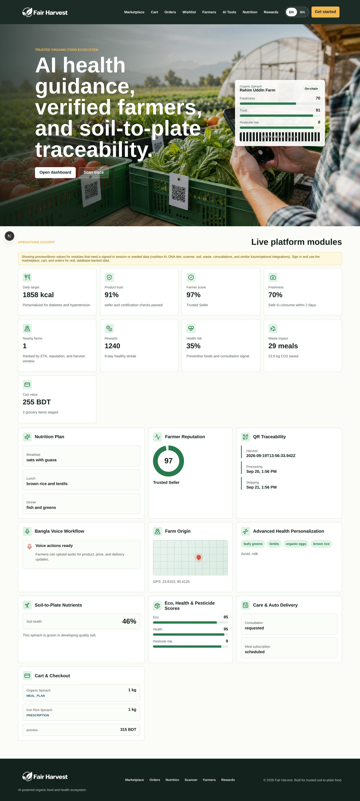
এই হোমপেজটি একটি React Server Component; এটি server-এ render হওয়ার সময় SDK দিয়ে নিজের API-কে ডাকার চেষ্টা করে। যে module-গুলোর জন্য login বা seeded data দরকার, সেগুলোর জন্য preview/demo মান দেখায় এবং পৃষ্ঠার উপরে হলুদ ব্যানারে সেটা স্পষ্ট করে লিখে দেয় — এটি ইচ্ছাকৃত সততা, লুকানো নয়।
নিচের প্রতিটি সমস্যা এই প্রজেক্টে সত্যিই কোড দিয়ে সমাধান করার চেষ্টা করা হয়েছে — অর্থাৎ প্রতিটির বিপরীতে একটি বাস্তব module আছে। যেগুলোর সমাধান নেই সেগুলো আলাদা করে অধ্যায় 41-এ বলা আছে।
| সমস্যা | ব্যাখ্যা (সহজ বাংলায়) | Fair Harvest-এ কীভাবে মোকাবিলা করা হয়েছে |
|---|---|---|
| কৃষক যাচাইয়ের অভাব Lack of farmer verification |
অনলাইনে যে কেউ নিজেকে কৃষক বলে দাবি করতে পারে। ক্রেতার কাছে সেটা যাচাই করার উপায় থাকে না। | Government Farmer Card + NID + নাম মিলিয়ে দেখা হয় GovFarmerCardRecord
টেবিলের সাথে। না মিললে admin manual review করেন। verified না হলে পণ্য তালিকাভুক্তই করা যায় না।
IMPLEMENTED |
| বিশ্বাসের ঘাটতি Trust gap |
ক্রেতা বুঝতে পারেন না কোন বিক্রেতা নির্ভরযোগ্য, কোনটি নয়। | reputationScore (0–100) ও badge, যা verification, review rating ও
delivery rate থেকে স্বয়ংক্রিয়ভাবে গণনা হয় এবং প্রতিটি ঘটনার পর আপডেট হয়।
IMPLEMENTED |
| পণ্যের উৎস অজানা No traceability |
বাজারের শাক কোথা থেকে এলো, কবে তোলা হলো — কিছুই জানার উপায় নেই। | TraceEvent টেবিল — কৃষক নিজে ছয়টি ধাপ লেখেন, সময় ও GPS সহ।
/trace/[productId] পেজে সবাই দেখতে পারে।
IMPLEMENTED |
| মধ্যস্বত্বভোগীর কারণে দূরত্ব | কৃষক ও ক্রেতার মাঝে অনেক ধাপ, তাই দামও বাড়ে, তথ্যও হারায়। | কৃষক নিজে দাম ও stock লেখেন; ক্রেতা সরাসরি সেই listing থেকে কেনেন। কোনো
middleman entity ডাটাবেসে নেই। IMPLEMENTED |
| তাজা থাকার সময় অজানা Freshness |
কত দিনের মধ্যে খাওয়া উচিত তা লেখা থাকে না। | প্রতিটি পণ্যে freshnessWindowDays ফিল্ড আছে, যা কৃষক নিজে দেন এবং
marketplace কার্ডে বার হিসেবে দেখানো হয়।
আংশিক — এটি কৃষকের দেওয়া তথ্য, কোনো sensor নয় |
| ভুয়া review | না কিনেই ৫ তারা দিয়ে দেওয়া যায়, বা একই লোক বারবার review দেয়। | Review দিতে হলে সেই product-এর DELIVERED order item থাকতে হবে; তাছাড়া
orderItemId unique এবং (customerId, productId)
unique — ডাটাবেস স্তরেই দ্বিতীয়বার review আটকে যায়।
IMPLEMENTED |
| manual verification-এর ঝামেলা | প্রতিটি কৃষককে হাতে যাচাই করতে গেলে অনেক সময় লাগে। | Card-NID-নাম মিললে তাৎক্ষণিক verification; না মিললে তবেই admin queue-তে যায়।
অর্থাৎ manual কাজ শুধু ব্যতিক্রমের জন্য।
IMPLEMENTED |
| কেন্দ্রীয় বাজারের অভাব | বিচ্ছিন্ন ফেসবুক পেজ/গ্রুপে বিক্রি হয়, খোঁজা কঠিন। | একটি marketplace পেজ, category / trust score / price filter এবং search সহ।
IMPLEMENTED |
প্রকৃত টাকা লেনদেন, প্রকৃত ডেলিভারি ব্যবস্থাপনা, সরকারি API-র সাথে সত্যিকারের সংযোগ, এবং কৃষককে টাকা পরিশোধ (payout) — এর কোনোটিই এই সংস্করণে নেই। বিস্তারিত অধ্যায় 36 ও 41-এ।
প্রতিটি উদ্দেশ্যের সাথে নিচে বলা আছে — সেটি কেন দরকার, কোড কোথায় আছে, এবং বাস্তবায়নের অবস্থা কী।
| # | উদ্দেশ্য | কেন দরকার | দায়িত্বপ্রাপ্ত কোড | অবস্থা |
|---|---|---|---|---|
| 1 | Role-ভিত্তিক নিরাপদ authentication | তিন ধরনের ব্যবহারকারীকে আলাদা রাখা ও পাসওয়ার্ড নিরাপদ রাখা | lib/server/auth.js, app/api/v1/auth/* | সম্পন্ন |
| 2 | Government Farmer Card verification | শুধু প্রকৃত কৃষক যেন বিক্রি করতে পারেন | lib/server/verification/, api/v1/farmers/[id]/verify | সম্পন্ন demo registry |
| 3 | স্বয়ংক্রিয় farmer reputation | ক্রেতা যেন সংখ্যা দেখে সিদ্ধান্ত নিতে পারেন | lib/server/reputation.js, reputationSync.js | সম্পন্ন |
| 4 | কৃষকের নিজের পণ্য ব্যবস্থাপনা | দাম ও stock কৃষক নিজে নিয়ন্ত্রণ করবেন | api/v1/products/*, components/products/FarmerProductRow.js | সম্পন্ন |
| 5 | প্রকৃত ছবি upload | পণ্য দেখে কেনার আস্থা | lib/server/storage/, api/v1/uploads/* | সম্পন্ন |
| 6 | Trust score সহ marketplace | খোঁজা ও তুলনা করা সহজ করা | app/marketplace/, api/v1/products (GET) | সম্পন্ন |
| 7 | Cart → checkout → order | সম্পূর্ণ কেনাকাটার চক্র | api/v1/cart/*, api/v1/orders/[id]/checkout | সম্পন্ন payment demo |
| 8 | Order status ও timeline | ক্রেতা যেন জানেন অর্ডার কোথায় | OrderStatusEvent, api/v1/orders/[id]/status | সম্পন্ন |
| 9 | মাটি-থেকে-প্লেট traceability | উৎস সম্পর্কে স্বচ্ছতা | TraceEvent, api/v1/trace/[productId] | সম্পন্ন |
| 10 | ক্রয়-নির্ভর review | ভুয়া rating ঠেকানো | lib/server/reviews.js, reviewEligibility.js | সম্পন্ন |
| 11 | Admin তত্ত্বাবধান ও moderation | প্ল্যাটফর্মের মান ধরে রাখা | app/admin/*, api/v1/admin/* | সম্পন্ন |
| 12 | Audit trail | admin-এর কাজের জবাবদিহি | lib/server/audit.js, AuditLog model | সম্পন্ন |
| 13 | অপব্যবহার প্রতিরোধ (rate limiting) | brute-force ও spam ঠেকানো | lib/server/rateLimit.js | আংশিক — in-memory, একক process |
| 14 | সংবেদনশীল তথ্য লুকানো | NID ও Card নম্বর পুরো দেখানো যাবে না | lib/server/mask.js | সম্পন্ন |
| 15 | বাংলা/ইংরেজি ভাষা পরিবর্তন | বাংলাদেশি ব্যবহারকারীর সুবিধা | components/i18n/, lib/i18nDictionary.js | আংশিক — 177টি স্ট্রিং |
Fair Harvest-এর সমাধান তিনটি স্তম্ভের উপর দাঁড়িয়ে আছে। এই তিনটি একসাথে না থাকলে প্ল্যাটফর্মটি আরেকটি সাধারণ দোকান হয়ে যেত।
| স্তম্ভ | কী করে | প্রমাণ (কোডে কোথায়) |
|---|---|---|
| ১. পরিচয় যাচাই Identity |
বিক্রেতা সত্যিই কৃষক কি না, তা সরকারি কার্ডের রেকর্ডের সাথে মিলিয়ে দেখা | demoRegistryProvider.js — cardNumber lookup, NID ও নাম মিলিয়ে দেখা, confidence 0.98 |
| ২. আচরণের ইতিহাস Reputation |
অতীতে কেমন কাজ করেছেন তার ভিত্তিতে একটি সংখ্যা | computeReputation() — তিনটি score-এর weighted average |
| ৩. পণ্যের ইতিহাস Traceability |
এই নির্দিষ্ট পণ্যটির কী কী ঘটেছে, কখন | TraceEvent rows + toPublicTrace() serializer |
| ব্যবহারকারী | তাদের প্রধান চাহিদা | Fair Harvest কী দেয় |
|---|---|---|
| ছোট ও মাঝারি কৃষক | নিজের দামে সরাসরি বিক্রি, ক্রেতার আস্থা অর্জন | verified badge, reputation score, নিজের dashboard, order ও earnings-এর হিসাব |
| শহুরে সচেতন ক্রেতা | নিরাপদ ও তাজা খাবার, উৎস জানা | trust score, freshness window, trace timeline, verified-farmer badge, review |
| প্ল্যাটফর্ম প্রশাসক | প্ল্যাটফর্মের মান ও নিরাপত্তা রক্ষা | verification queue, account suspend, product ও order নিয়ন্ত্রণ, review moderation, audit log |
“Fair Harvest মূলত বিশ্বাসের সমস্যা সমাধান করে — কৃষককে যাচাই করে, তার আচরণকে সংখ্যায় প্রকাশ করে, আর পণ্যের ইতিহাসকে দৃশ্যমান করে। বাকি e-commerce অংশটা (cart, order) এই বিশ্বাসকে কাজে লাগানোর মাধ্যম।”
Fair Harvest একটি monolithic full-stack Next.js application। অর্থাৎ frontend ও backend আলাদা দুটি প্রজেক্ট নয় — একটিই deployment, যেখানে একই server একদিকে HTML/React পাঠায়, অন্যদিকে /api/v1/**-এ REST API উত্তর দেয়।
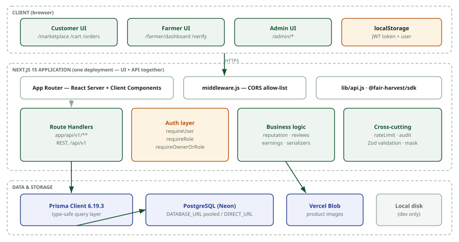
| স্তর (Layer) | কাজ | প্রধান ফাইল |
|---|---|---|
| Client | ব্যবহারকারী যা দেখেন ও ক্লিক করেন। JWT token এখানে localStorage-এ থাকে। | app/**/page.js, components/** |
| Routing / Middleware | API-এর জন্য CORS নিয়ন্ত্রণ। default অবস্থায় শুধু same-origin অনুমোদিত, কোনো wildcard নেই। | middleware.js |
| Route Handlers (API) | প্রতিটি REST endpoint। HTTP method অনুযায়ী GET/POST/PATCH/DELETE function export করা হয়। | app/api/v1/**/route.js |
| Auth layer | টোকেন পড়া, ব্যবহারকারী শনাক্ত করা, রোল ও মালিকানা যাচাই। | lib/server/auth.js |
| Business logic | Reputation গণনা, review eligibility, earnings সারাংশ, API response-এর আকার নির্ধারণ। | lib/server/reputation.js, reviews.js, earnings.js, serializers.js |
| Cross-cutting | সব route-এ লাগে এমন জিনিস: rate limit, audit log, Zod validation, identifier masking, একক error format। | rateLimit.js, audit.js, respond.js, mask.js |
| Data | Prisma Client দিয়ে PostgreSQL-এ query; ছবি Vercel Blob-এ। | lib/server/db.js, prisma/schema.prisma, lib/server/storage/ |
দুটি জায়গায় একই প্যাটার্ন ব্যবহার করা হয়েছে: একটি index.js ঠিক করে দেয় কোন provider ব্যবহার হবে, আর route handler কখনো জানেই না ভিতরে কোনটা চলছে।
lib/server/verification/index.js lib/server/storage/index.js
├─ demoRegistryProvider.js ├─ localDiskProvider.js (dev)
└─ officialGovApiProvider.js └─ objectStorageProvider.js (Vercel Blob)
↑ VERIFICATION_PROVIDER ↑ STORAGE_PROVIDER
লাভ কী? ভবিষ্যতে সত্যিকারের সরকারি API এলে শুধু একটি ফাইল বদলাতে হবে — route, database schema বা frontend-এর একটি লাইনও বদলাবে না। একই ভাবে local disk থেকে Vercel Blob-এ যেতে শুধু একটি environment variable বদলাতে হয়েছে।
যেসব logic-এ database লাগে না, সেগুলো আলাদা pure ফাইলে রাখা হয়েছে — reputation.js, reviewEligibility.js, earnings.js, imageValidation.js, mask.js, rateLimit.js। এতে node --test দিয়ে database বা Next.js runtime ছাড়াই ২৬টি unit test চালানো যায় (অধ্যায় 38)।
যদি জিজ্ঞেস করে “আপনার architecture কি microservice?” — উত্তর: “না, এটি ইচ্ছাকৃতভাবে monolith। একজন ডেভেলপারের university project-এ microservice মানে অপ্রয়োজনীয় জটিলতা। তবে কোডের ভিতরে স্তর (layer) আলাদা রাখা হয়েছে, আর provider abstraction দিয়ে বাইরের নির্ভরতাগুলো পাল্টানোর পথ খোলা রাখা হয়েছে।”
নিচের প্রতিটি প্যাকেজ fair-harvest-web/package.json-এ সত্যিই আছে।
| প্রযুক্তি | সংস্করণ | কাজ কী | কেন এটি বেছে নেওয়া হলো |
|---|---|---|---|
| Next.js (App Router) | ^15.1.4 | Frontend render + backend API route — দুটোই | একটি প্রজেক্টেই full-stack; Vercel-এ deploy সবচেয়ে সহজ; Server Component-এ সরাসরি database পড়া যায় |
| React | ^19.0.0 | UI component ও state | Next.js-এর ভিত্তি; component পুনর্ব্যবহার সহজ |
| Prisma ORM | 6.19.3 | Database schema, migration ও type-safe query | হাতে SQL না লিখে মডেল দিয়ে কাজ; migration স্বয়ংক্রিয়; SQL injection-এর ঝুঁকি কমে |
| PostgreSQL (Neon) | — | মূল ডাটাবেস | relational data, enum, foreign key, transaction — সবই দরকার ছিল; Neon serverless ও free tier আছে |
| jsonwebtoken | ^9.0.3 | JWT তৈরি ও যাচাই (HS256) | stateless auth — server-এ session টেবিল রাখতে হয় না, serverless-এ উপযুক্ত |
| bcryptjs | ^3.0.3 | পাসওয়ার্ড hash (cost 10) | পাসওয়ার্ড কখনো plain text-এ রাখা হয় না; bcrypt ইচ্ছাকৃতভাবে ধীর, তাই brute-force কঠিন |
| Zod | ^4.5.4 | API input validation | প্রতিটি route-এ আসা JSON-এর আকার ও ধরন যাচাই; ভুল হলে 422 |
| @vercel/blob | ^2.8.0 | পণ্যের ছবি সংরক্ষণ (production) | serverless filesystem read-only, তাই ছবি ডিস্কে রাখা যায় না |
| lucide-react | ^0.468.0 | আইকন | হালকা, tree-shakeable SVG আইকন সেট |
| ESLint + eslint-config-next | ^9.17.0 | কোডের মান পরীক্ষা | ভুল ধরা পড়ে commit করার আগেই |
| @fair-harvest/sdk | 0.1.0 | নিজের লেখা REST client (আলাদা প্যাকেজ) | ভবিষ্যতের mobile app বা third-party integration-এর জন্য একটি পরিষ্কার contract |
| node:test | Node 22 | Unit test runner | বাড়তি test framework install না করেই টেস্ট চালানো যায় |
fair-harvest/ ├── fair-harvest-web/ ← মূল Next.js application │ ├── app/ ← App Router: পেজ + API route │ │ ├── api/v1/**/route.js ← সব REST endpoint (backend) │ │ ├── admin/ ← admin console পেজ │ │ ├── farmer/ ← farmer dashboard ও verification │ │ ├── marketplace/ cart/ checkout/ orders/ account/ │ │ ├── layout.js page.js globals.css │ ├── components/ ← পুনর্ব্যবহারযোগ্য React component │ ├── lib/ │ │ ├── api.js ← frontend → API কল করার helper │ │ └── server/ ← backend-only logic (auth, reputation, storage…) │ ├── prisma/ │ │ ├── schema.prisma ← ডাটাবেস মডেল (single source of truth) │ │ ├── migrations/ ← SQL migration ইতিহাস │ │ └── seed.mjs ← ডেমো ডেটা │ ├── middleware.js ← CORS │ └── test/ ← ২৬টি unit test └── fair-harvest-sdk/ ← আলাদা npm প্যাকেজ (REST client + ৫টি test)
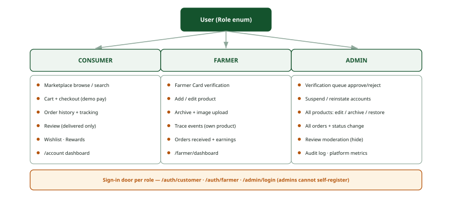
| রোল | দায়িত্ব | যা করতে পারে | যা করতে পারে না (server 403 দেয়) |
|---|---|---|---|
| CONSUMER (ক্রেতা) |
পণ্য কেনা, প্রাপ্ত পণ্যের সৎ মূল্যায়ন দেওয়া | Marketplace browse ও filter · product detail · cart-এ যোগ/পরিমাণ বদল/মুছে ফেলা · checkout · নিজের order ও timeline · DELIVERED পণ্যের review · wishlist · rewards · /account | পণ্য তৈরি বা সম্পাদনা · অন্যের cart বা order দেখা · order status বদল · trace event যোগ · ছবি upload · /api/v1/admin/* |
| FARMER (কৃষক) |
নিজের পণ্য ও তার ইতিহাস ব্যবস্থাপনা | Farmer Card verification · verified হলে পণ্য যোগ · নিজের পণ্য সম্পাদনা ও archive · ছবি upload · নিজের পণ্যে trace event · নিজের order item ও earnings · যে order-এ নিজের item আছে তার status বদল | verified না হয়ে পণ্য তালিকাভুক্ত করা · অন্য কৃষকের পণ্য বদলানো · অন্য কৃষকের order item দেখা · review দেওয়া (শুধু CONSUMER পারে) · admin console |
| ADMIN (প্রশাসক) |
প্ল্যাটফর্মের তত্ত্বাবধান ও মান রক্ষা | Verification queue approve/reject · farmer ও customer account suspend/reinstate · যেকোনো পণ্য সম্পাদনা/archive/restore · সব order ও status · review hide/republish · audit log · platform metrics · যেকোনো cart/order দেখা | নিজে পণ্য বিক্রি করা (farmer profile নেই) · review দেওয়া · নিজে register করা (admin account হাতে তৈরি করতে হয়) |
তিনটি রোলের জন্য তিনটি আলাদা login পেজ আছে, কিন্তু ভিতরে তিনটিই একই POST /api/v1/auth/login ব্যবহার করে। এই আলাদা করাটা শুধু UI-এর সুবিধা — নিরাপত্তার ভিত্তি নয়।
| পেজ | ফাইল | expectedRole | Register করা যায়? | সফল হলে যায় |
|---|---|---|---|---|
| /auth | app/auth/page.js | — (শুধু বাছাই) | — | তিনটি দরজার একটি |
| /auth/customer | app/auth/customer/page.js | consumer | হ্যাঁ | /account |
| /auth/farmer | app/auth/farmer/page.js | farmer | হ্যাঁ | /farmer/dashboard |
| /admin/login | app/admin/login/page.js | admin | না (allowRegister={false}) | /admin/dashboard |
ভুল দরজায় ঢুকলে কী হয়? ধরা যাক একজন farmer customer-এর পেজে সঠিক পাসওয়ার্ড দিলেন। Server token দিয়ে দেবে, কিন্তু AuthForm.js দেখবে user.role !== expectedRole — তখন সে session সংরক্ষণই করবে না, বরং বার্তা দেবে: “This is a farmer account. Please use the farmer login at /auth/farmer …”
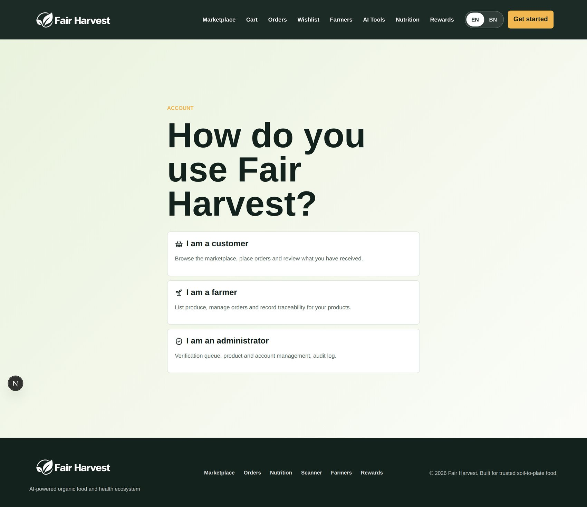
components/RoleGuard.js একটি client component যা /account, /farmer/** ও /admin/** layout-এ মোড়ানো আছে। এটি দেখে ব্যবহারকারী login করা আছে কি না এবং রোল ঠিক আছে কি না; না হলে সঠিক জায়গায় পাঠিয়ে দেয়।
RoleGuard নিরাপত্তা নয় — এটি শুধু ব্যবহারকারীর সুবিধা। কেউ browser-এর JavaScript বন্ধ করে বা সরাসরি API-তে request পাঠিয়ে এটি এড়াতে পারে। আসল নিরাপত্তা আছে server-এ: প্রতিটি protected route requireUser / requireRole / requireOwnerOrRole দিয়ে নিজেই যাচাই করে। কোডের কমেন্টেও এই কথাটি স্পষ্ট লেখা আছে।
| English term | সহজ বাংলা অর্থ | Fair Harvest-এ কোথায় |
|---|---|---|
| Authentication | “তুমি কি সত্যিই সেই লোক?” — পরিচয় প্রমাণ করা | POST /auth/login → পাসওয়ার্ড মিলিয়ে JWT দেওয়া |
| Authorization | “তোমার এটা করার অনুমতি আছে কি?” — অধিকার যাচাই | requireRole, requireOwnerOrRole (অধ্যায় 9) |
JWT (JSON Web Token) — একে ভাবুন একটি সিল করা পরিচয়পত্র। ভিতরে লেখা থাকে আপনি কে (sub = user id), আপনার রোল কী, ইমেইল কী, আর কতক্ষণ পর্যন্ত বৈধ (exp)। এর গায়ে server তার গোপন চাবি (JWT_SECRET) দিয়ে একটি signature বসায়। কেউ ভিতরের লেখা এক অক্ষর বদলালে signature আর মেলে না, তাই server সঙ্গে সঙ্গে বুঝে ফেলে।
// lib/server/auth.js
export function signToken(user) {
return jwt.sign({ sub: user.id, role: user.role, email: user.email },
JWT_SECRET, { expiresIn: JWT_EXPIRES_IN }); // default "2h"
}
Stateless মানে — server-এ কোনো session টেবিল রাখতে হয় না। token নিজেই সব তথ্য বহন করে। Vercel-এর মতো serverless পরিবেশে এটিই সবচেয়ে উপযুক্ত, কারণ প্রতিটি request আলাদা function instance-এ চলতে পারে।
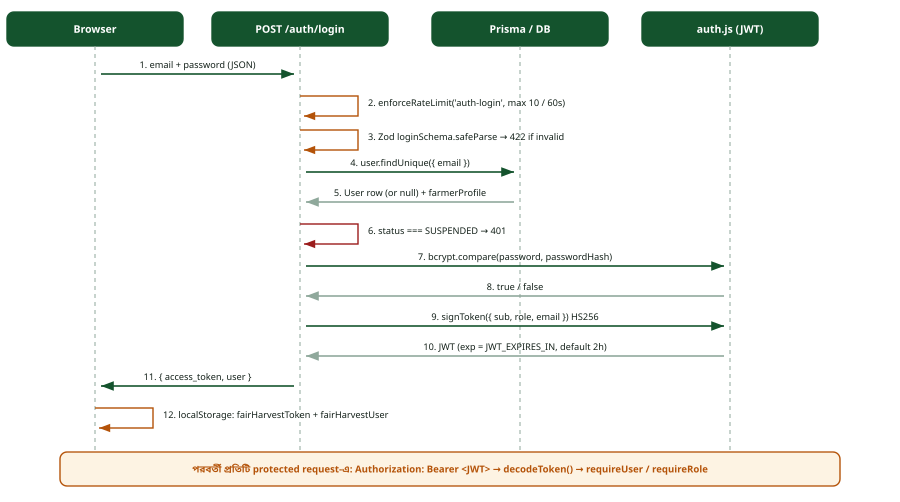
POST /api/v1/auth/register — rate limit ৬/মিনিট। Zod schema নাম, ইমেইল, কমপক্ষে ৬ অক্ষরের পাসওয়ার্ড এবং role ∈ {consumer, farmer} চায়। admin এখানে অনুমোদিত নয় — অর্থাৎ কেউ নিজেকে admin বানিয়ে register করতে পারবে না।
role: z.enum(["consumer", "farmer"]).default("consumer") // ADMIN তালিকায় নেই
...(role === "farmer" ? { farmerProfile: { create: {} } } : {})
// farmer হলে একই সাথে একটি খালি FarmerProfile তৈরি হয় → verificationStatus = PENDING
একই ইমেইল আগে থেকে থাকলে 409 "An account with this email already exists"।
if (process.env.NODE_ENV === "production" && !process.env.JWT_SECRET) {
throw new Error("JWT_SECRET is not set. Refusing to start in production …");
}
Development-এ সুবিধার জন্য একটি ডিফল্ট secret আছে, কিন্তু production-এ JWT_SECRET না থাকলে অ্যাপটি চালুই হবে না। কারণ ডিফল্ট secret জানা থাকলে যে কেউ নিজের জন্য admin token বানিয়ে ফেলতে পারত।
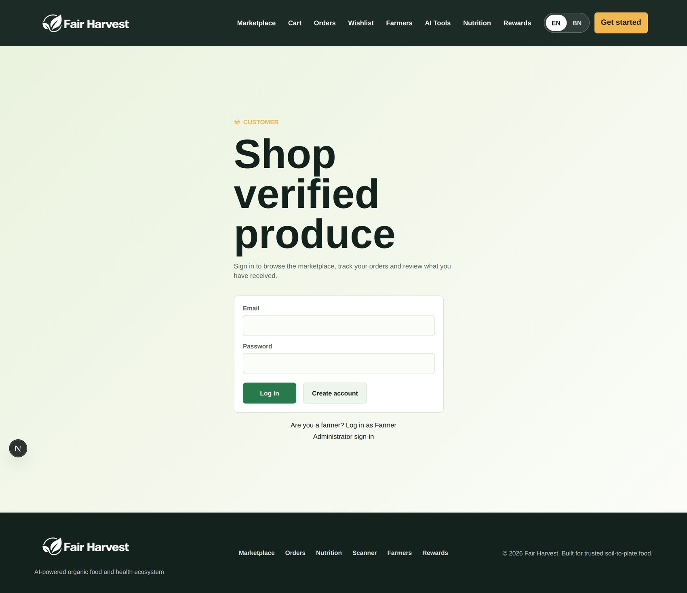
| Helper | কী প্রশ্ন করে | ব্যর্থ হলে |
|---|---|---|
| requireUser(request) | “তুমি কি আদৌ login করা?” | 401 Authentication required |
| requireRole(request, ["ADMIN"]) | “তোমার রোল কি অনুমোদিত তালিকায়?” | 403 You do not have permission… |
| requireOwnerOrRole(request, ownerId, ["ADMIN"]) | “এটা কি তোমারই জিনিস, নাকি তুমি admin?” | 403 |
export function requireOwnerOrRole(request, ownerId, roles) {
const session = requireUser(request);
if (session.userId === ownerId || roles.includes(session.role)) return session;
throw new ApiError("You do not have permission to perform this action", 403);
}
IDOR (Insecure Direct Object Reference) মানে — URL-এ অন্যের id বসিয়ে দিলে তার ডেটা দেখা যাওয়া। Fair Harvest-এ এটি নিয়মিতভাবে আটকানো হয়েছে।
| আক্রমণের চেষ্টা | কী ঘটে |
|---|---|
| GET /api/v1/cart/<অন্যের userId> | requireOwnerOrRole(request, userId, ["ADMIN"]) → 403 |
| GET /api/v1/orders/<অন্যের userId> | একইভাবে 403 |
| PATCH /api/v1/products/<অন্য কৃষকের পণ্য> | assertOwnerOrAdmin() পণ্যটির farmer.userId মিলিয়ে দেখে → 403 |
| GET /api/v1/wishlist — অন্যের wishlist চাওয়া | এখানে URL-এ কোনো userId-ই নেই; route সবসময় session.userId ব্যবহার করে। অর্থাৎ ভুল id পাঠানোর সুযোগই নেই। |
| GET /api/v1/farmer/orders | farmer profile session থেকে বের করা হয়, client থেকে নয়। তাই এক কৃষক অন্য কৃষকের order item দেখতে পারেন না। |
| PATCH /api/v1/orders/<id>/status | ADMIN না হলে দেখা হয় — এই order-এর কোনো item কি এই কৃষকের? না হলে 403 |
| GET /api/v1/orders/detail/<id> | ADMIN নয় এবং session.userId !== order.userId → 403 |
কিছু নিয়ম শুধু রোল নয়, অবস্থা দেখেও সিদ্ধান্ত নেয়:
| নিয়ম | কোথায় প্রয়োগ হয় |
|---|---|
| verified নয় এমন কৃষক পণ্য তালিকাভুক্ত করতে পারবেন না | products/route.js → if (farmer.verificationStatus !== "VERIFIED") throw 403 |
| verified নয় এমন কৃষক ছবিও upload করতে পারবেন না | uploads/product-image/route.js — যাতে কেউ প্ল্যাটফর্মকে ফ্রি file hosting হিসেবে ব্যবহার না করে |
| শুধু CONSUMER review দিতে পারে | reviews/route.js → if (session.role !== "CONSUMER") throw 403 |
| কেনা না থাকলে review নয় | getReviewEligibility() — DELIVERED order item খোঁজে |
| শুধু নিজের পণ্যে trace event | trace/[productId]/route.js — ADMIN বা মালিক কৃষক ছাড়া 403 |
| শুধু FARMER নিজের earnings দেখতে পারে | farmer/earnings/route.js |
“আমার প্রজেক্টে authorization দুই স্তরে আছে। UI স্তরে RoleGuard শুধু ব্যবহারকারীকে সঠিক পেজে পাঠায় — এটা নিরাপত্তা নয়, সুবিধা। আসল সিদ্ধান্ত সবসময় server-এ হয়, প্রতিটি route handler-এর প্রথম লাইনেই। এবং আমি ইচ্ছাকৃতভাবে client থেকে আসা userId বা farmerId-কে কখনো বিশ্বাস করিনি — যেখানে সম্ভব সেটি JWT session থেকেই বের করেছি, যেমন wishlist, farmer/orders আর farmer/earnings-এ।”
ভাইভা বোর্ড সবচেয়ে বেশি প্রশ্ন এখান থেকেই করবেন, কারণ এটিই Fair Harvest-কে সাধারণ e-commerce থেকে আলাদা করে। পুরো অধ্যায়টি ভালো করে পড়ুন।
যদি যে কেউ “আমি কৃষক” বলে register করেই পণ্য বিক্রি শুরু করতে পারে, তাহলে প্ল্যাটফর্মের মূল প্রতিশ্রুতি — “verified কৃষকের কাছ থেকে কিনছেন” — অর্থহীন হয়ে যায়। তাই Fair Harvest-এ একটি নিয়ম শক্তভাবে বসানো আছে:
verificationStatus === "VERIFIED" না হলে
POST /api/v1/products কখনোই সফল হবে না — 403।
| অবস্থা | অর্থ | কীভাবে এখানে আসে | কৃষক কী করতে পারেন |
|---|---|---|---|
| PENDING | এখনো যাচাই হয়নি (ডিফল্ট) | farmer হিসেবে register করলেই · অথবা card-এর তথ্য না মিললে | login, dashboard দেখা, verification জমা দেওয়া। পণ্য যোগ করা যায় না, ছবি upload করা যায় না |
| VERIFIED | যাচাই সম্পন্ন | card+NID+নাম মিললে তাৎক্ষণিক · অথবা admin approve করলে | পণ্য যোগ/সম্পাদনা/archive, ছবি upload, trace event, order status বদল |
| REJECTED | admin আবেদন নাকচ করেছেন | শুধুই POST /admin/farmers/{id}/verification/reject দিয়ে | PENDING-এর মতোই সীমিত; reputation-এর verification score ৩০-এ নেমে যায় |
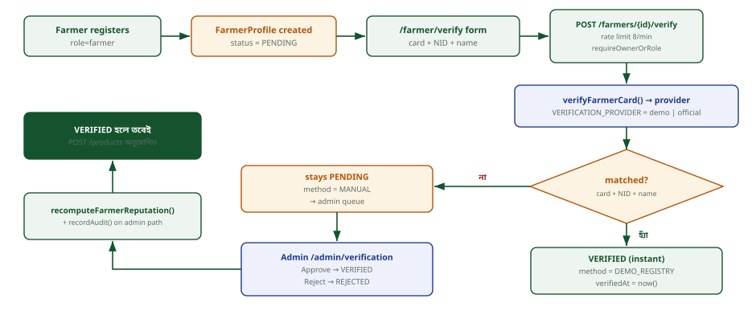
verificationStatus: result.matched ? "VERIFIED" : "PENDING",
verificationMethod: result.matched
? (result.provider === "official" ? "OFFICIAL_API" : "DEMO_REGISTRY")
: "MANUAL",
verifiedAt: result.matched ? new Date() : null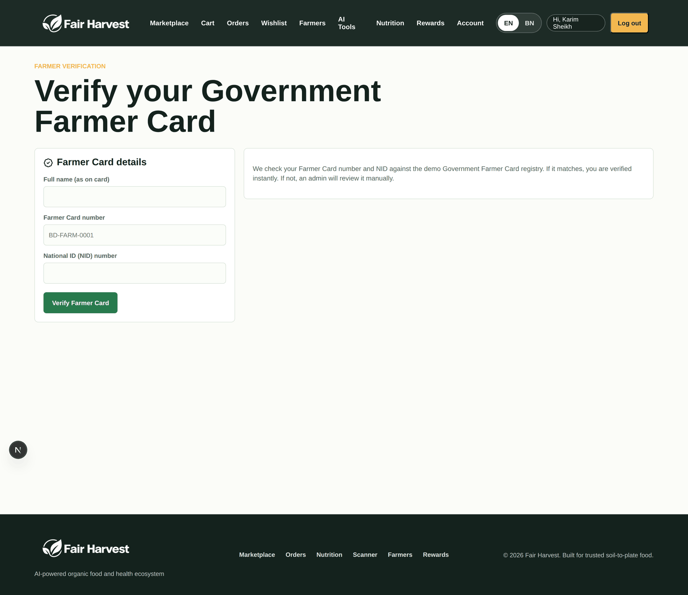
স্বয়ংক্রিয় যাচাই ব্যর্থ হলে profile PENDING থাকে এবং সে GET /api/v1/admin/farmers/verifications-এর তালিকায় চলে আসে (createdAt অনুসারে পুরোনো আগে — অর্থাৎ FIFO queue)।
| সিদ্ধান্ত | Endpoint | ডাটাবেসে কী লেখা হয় |
|---|---|---|
| Approve | POST /api/v1/admin/farmers/{farmerId}/verification/approve | VERIFIED · method = MANUAL · verifiedAt = now() · verifiedByAdminId = session.userId · audit action farmer_verification_approved |
| Reject | POST /api/v1/admin/farmers/{farmerId}/verification/reject | REJECTED · method = MANUAL · verifiedAt = null · verifiedByAdminId সংরক্ষিত · audit action farmer_verification_rejected |
verifiedByAdminId একটি self-relation — User মডেলে verifiedFarmers FarmerProfile[] @relation("VerifiedByAdmin") হিসেবে ফিরে আসে। অর্থাৎ ডাটাবেসেই লেখা থাকে কোন admin কোন কৃষককে verify করেছেন।
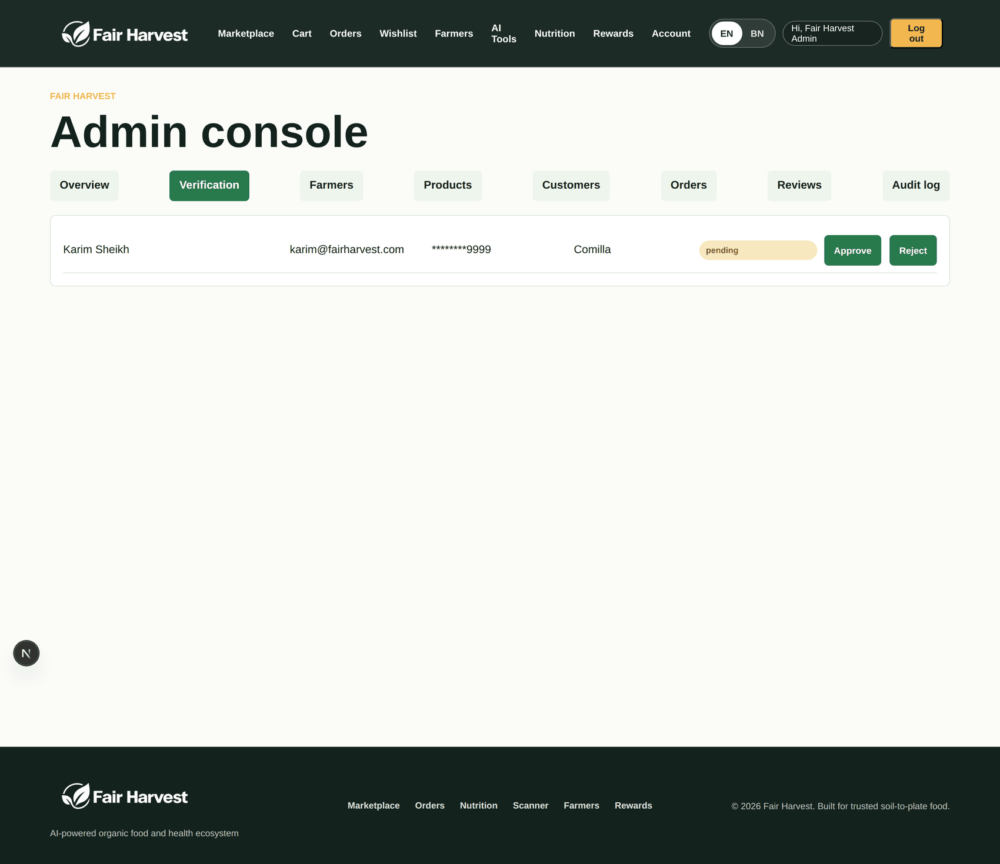
| Method | Endpoint | কে ডাকতে পারে | কাজ |
|---|---|---|---|
| POST | /api/v1/farmers/{farmerId}/verify | মালিক কৃষক বা ADMIN | Card জমা দিয়ে যাচাই করা |
| GET | /api/v1/farmers/{farmerId}/verification-status | মালিক কৃষক বা ADMIN | নিজের অবস্থা দেখা |
| GET | /api/v1/admin/farmers/verifications | ADMIN | pending তালিকা |
| POST | /api/v1/admin/farmers/{farmerId}/verification/approve | ADMIN | অনুমোদন |
| POST | /api/v1/admin/farmers/{farmerId}/verification/reject | ADMIN | নাকচ |
(১) কোনো ডকুমেন্ট/ছবি আপলোড করে যাচাইয়ের ব্যবস্থা নেই — শুধু সংখ্যা ও নাম মেলানো হয়। (২) REJECTED হয়ে যাওয়ার পর কৃষক আবার আবেদন করলে status আবার PENDING হয়ে যায়; কতবার চেষ্টা করা যাবে তার কোনো সীমা নেই (শুধু rate limit আছে)। (৩) নাকচের কারণ (reason) সংরক্ষণ করা হয় না।
এই প্রজেক্টে বাংলাদেশ সরকারের কোনো প্রকৃত API-র সাথে সংযোগ নেই। যাচাই হয় প্রজেক্টের নিজের ডাটাবেসের GovFarmerCardRecord টেবিলের বিপরীতে, যেখানে seed ফাইল দিয়ে ৮টি নমুনা কার্ড ঢোকানো হয়েছে। এটি একটি simulated / demo registry। বোর্ড এই প্রশ্নটি করবেনই — সরাসরি স্বীকার করে নিলে সেটি দুর্বলতা নয়, সততা হিসেবে গণ্য হয়।
বাংলাদেশে কৃষকদের জন্য সরকারি “কৃষি উপকরণ সহায়তা কার্ড” বা Farmer Card থাকে, যেখানে কৃষকের নাম, NID, জেলা ইত্যাদি লেখা থাকে। Fair Harvest এই ধারণাটিকে ডিজিটাল পরিচয় যাচাইয়ের ভিত্তি হিসেবে ব্যবহার করে — কারণ এটি এমন একটি নথি যা শুধু প্রকৃত কৃষকেরই থাকে।
model GovFarmerCardRecord {
id String @id @default(cuid())
cardNumber String @unique // BD-FARM-0001
nidNumber String
fullName String
district String
issueDate DateTime
status GovCardStatus @default(ACTIVE) // ACTIVE | REVOKED
cropTypes String?
}
খেয়াল করুন: এই টেবিলের সাথে FarmerProfile-এর কোনো foreign key নেই। এটি ইচ্ছাকৃত — বাস্তব জীবনে সরকারি রেজিস্ট্রি একটি বাইরের ব্যবস্থা, আমাদের ডাটাবেসের অংশ নয়। তাই এখানেও এটিকে শুধু lookup table হিসেবে রাখা হয়েছে, যাতে ভবিষ্যতে এটিকে সত্যিকারের API দিয়ে প্রতিস্থাপন করা যায়।
| Card number | NID | নাম | জেলা | Issue date | Status |
|---|---|---|---|---|---|
| BD-FARM-0001 | 1990123456789 | Rahim Uddin | Dhaka | 2022-03-14 | ACTIVE |
| BD-FARM-0002 | 1988987654321 | Amina Khatun | Rangpur | 2021-07-02 | ACTIVE |
| BD-FARM-0003 | 1985456789123 | Salim Mia | Bogura | 2020-11-20 | ACTIVE |
| BD-FARM-0004 | 1993321654987 | Nasrin Begum | Khulna | 2023-01-09 | ACTIVE |
| BD-FARM-0005 | 1979112233445 | Habibur Rahman | Sylhet | 2019-05-30 | REVOKED |
| BD-FARM-0006 | 1996556677889 | Jasmine Akter | Chattogram | 2024-02-18 | ACTIVE |
| BD-FARM-0007 | 1982998877665 | Kamal Hossain | Rajshahi | 2018-09-11 | ACTIVE |
| BD-FARM-0008 | 1991443322110 | Ruma Aktar | Barishal | 2022-12-01 | ACTIVE |
একটি REVOKED কার্ড ইচ্ছাকৃতভাবে রাখা হয়েছে, যাতে ডেমোতে “বাতিল কার্ড” কেসটিও দেখানো যায়।
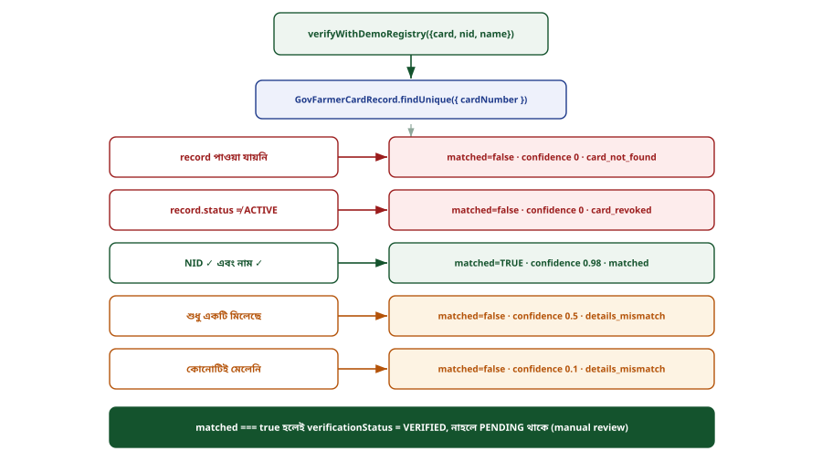
নাম মেলানোর সময় ছোট-বড় হরফ ও বাড়তি স্পেস উপেক্ষা করা হয়:
function normalizeName(value) {
return (value || "").trim().toLowerCase().replace(/\s+/g, " ");
}
অর্থাৎ " rahim UDDIN " আর "Rahim Uddin" একই ধরা হয়। তবে বানান ভুল হলে মিলবে না — কোনো fuzzy matching নেই।
| Provider | কখন চলে | কী করে |
|---|---|---|
| demoRegistryProvider.js | VERIFICATION_PROVIDER ≠ "official" (ডিফল্ট) | নিজের ডাটাবেসের GovFarmerCardRecord টেবিলে খোঁজে DEMO |
| officialGovApiProvider.js | VERIFICATION_PROVIDER = "official" | POST {GOV_API_BASE_URL}/farmer-cards/{card}/verify-এ কল করে। কোডটি লেখা আছে কিন্তু কোনো প্রকৃত endpoint নেই; URL সেট না থাকলে official_provider_not_configured ফেরত দেয় stub — বাস্তবে ব্যবহৃত নয় |
দুটি provider হুবহু একই আকারের object ফেরত দেয়:
{ matched: boolean, confidence: number, record: {…} | null, reason: string }
এই কারণেই index.js শুধু একটিকে বেছে নেয়, আর route handler কখনো জানেই না কোনটি চলল। ভবিষ্যতে সরকারি API পাওয়া গেলে শুধু একটি ফাইলে আসল URL ও credential বসালেই হবে।
| কে | কী দেখেন | কোথায় |
|---|---|---|
| কৃষক (সফল) | সবুজ badge “Verified instantly”, নিজের নাম ও জেলা, dashboard-এ যাওয়ার বোতাম | /farmer/verify |
| কৃষক (ব্যর্থ) | হলুদ badge “Pending manual review” এবং ব্যাখ্যা যে admin দেখবেন | একই পেজ |
| Admin | নাম, ইমেইল, masked card নম্বর, জেলা, status, Approve/Reject বোতাম | /admin/verification |
| যে কেউ (public) | কৃষকের public profile-এ masked card নম্বর ও verified badge | /farmers/[farmerId] |
lib/server/mask.js-এর maskIdentifier() শেষ ৪টি অক্ষর ছাড়া বাকি সব * করে দেয়। এটি admin-কেও প্রযোজ্য — toAdminFarmer() serializer কখনো পুরো NID বা card নম্বর পাঠায় না। অর্থাৎ API response কখনোই পূর্ণ সংবেদনশীল পরিচয় বহন করে না। এর জন্য ৪টি আলাদা unit test আছে।
maskIdentifier("BD-FARM-0001") → "********0001"
Verification শুধু বলে “এই লোক সত্যিই কৃষক”। কিন্তু সে ভালো কৃষক কি না — সময়মতো পণ্য পৌঁছায় কি না, ক্রেতারা সন্তুষ্ট কি না — সেটি বলে না। reputation score সেই ফাঁকটি পূরণ করে।
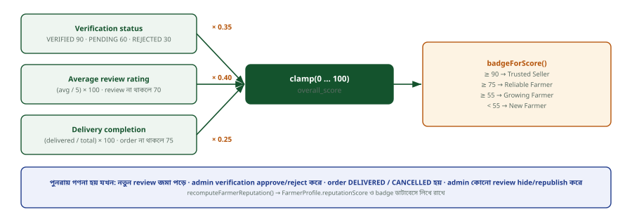
// lib/server/reputation.js
const verificationScore =
verificationStatus === "VERIFIED" ? 90 : verificationStatus === "PENDING" ? 60 : 30;
const reviewScore = reviewCount > 0 ? clamp((avgRating / 5) * 100) : 70;
const deliveryScore = totalOrderItems > 0 ? clamp((deliveredCount / totalOrderItems) * 100) : 75;
const overallScore = clamp(
verificationScore * 0.35
+ reviewScore * 0.40
+ deliveryScore * 0.25
);
Score = clamp( 0.35 × Sverification + 0.40 × Sreview + 0.25 × Sdelivery )
| উপাদান | ওজন | কীভাবে গণনা হয় | ইতিহাস না থাকলে |
|---|---|---|---|
| Verification score | 35% | VERIFIED → 90 · PENDING → 60 · REJECTED → 30 | প্রযোজ্য নয় (সবসময় একটি status থাকে) |
| Review score | 40% | (গড় rating ÷ 5) × 100 — শুধু PUBLISHED review গোনা হয় | 70 (নিরপেক্ষ ভিত্তি, 0 নয়) |
| Delivery score | 25% | (DELIVERED order item ÷ মোট order item) × 100 | 75 (নিরপেক্ষ ভিত্তি) |
কারণ একজন নতুন verified কৃষককে শাস্তি দেওয়া অন্যায় হতো। তার তো এখনো কোনো review বা order-ই নেই। কোডের কমেন্টেই লেখা আছে: “so a brand-new verified farmer isn't penalized for having no history yet.” এটি একটি সচেতন ডিজাইন সিদ্ধান্ত — ভাইভায় এটি বললে ভালো প্রভাব পড়বে।
নিচের সংখ্যাগুলো এই ডকুমেন্ট তৈরির সময় চালু অ্যাপ থেকে GET /api/v1/farmers/seed-farmer-rahim/score ডেকে পাওয়া।
| সংকেত | বাস্তব অবস্থা | Score | × ওজন |
|---|---|---|---|
| Verification | VERIFIED | 90 | 90 × 0.35 = 31.5 |
| Review | ১টি review, rating ৫/৫ | 100 | 100 × 0.40 = 40.0 |
| Delivery | ১টি order item, সেটি DELIVERED | 100 | 100 × 0.25 = 25.0 |
| যোগফল = 96.5 → Math.round → | 97 | ||
| badgeForScore(97) → | Trusted Seller | ||
{"farmer_id":"seed-farmer-rahim","reputation_score":97,"badge":"Trusted Seller",
"verification_status":"verified","review_count":1,"average_rating":5,
"breakdown":{"quality_score":100,"delivery_score":100,"review_score":100,"cert_score":90}}
| Score | Badge | Score | Badge |
|---|---|---|---|
| ≥ 90 | Trusted Seller | ≥ 55 | Growing Farmer |
| ≥ 75 | Reliable Farmer | < 55 | New Farmer |
recomputeFarmerReputation() চারটি ঘটনার পরে ডাকা হয় এবং ফলাফল FarmerProfile-এ লিখে রাখা হয়:
| ঘটনা | ফাইল |
|---|---|
| নতুন review জমা পড়ল | app/api/v1/reviews/route.js |
| Farmer Card verification জমা পড়ল | app/api/v1/farmers/[farmerId]/verify/route.js |
| Order DELIVERED বা CANCELLED হলো | app/api/v1/orders/[id]/status/route.js |
| Admin কোনো review hide/republish করল | app/api/v1/admin/reviews/[reviewId]/route.js |
আর GET /api/v1/farmers/{id}/score ডাকলে getFarmerReputationBreakdown() ব্যবহার হয় — এটি কিছু লেখে না, শুধু বর্তমান মান হিসাব করে ফেরত দেয়। GET request-এ ডাটাবেস লেখা উচিত নয় বলেই এই দুটি আলাদা রাখা হয়েছে।
| ফিল্ড | কার উপর | কীভাবে নির্ধারিত হয় |
|---|---|---|
| FarmerProfile.reputationScore | কৃষকের উপর | স্বয়ংক্রিয়ভাবে গণনা করা — উপরের সূত্র অনুযায়ী সত্যিকারের |
| Product.trustScore | পণ্যের উপর | ডিফল্ট 80; seed ডেটায় হাতে বসানো (spinach 91, tomato 86)। কোনো API এটি স্বয়ংক্রিয়ভাবে পরিবর্তন করে না। আংশিক — মূলত স্থির মান |
বোর্ড যদি marketplace কার্ডের “91%” দেখে জিজ্ঞেস করেন “এটা কোথা থেকে এলো?” — সৎ উত্তর: “ওটি Product.trustScore, যা এখনো স্বয়ংক্রিয় নয়; কৃষকের reputation-ই কেবল সত্যিকারের গণনা করা মান।”
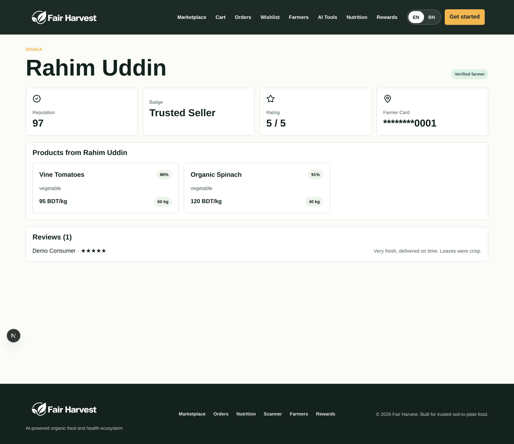
| ফিল্ড | ধরন | ডিফল্ট | ব্যাখ্যা |
|---|---|---|---|
| id | String (cuid) | auto | Primary key; URL-এ ব্যবহৃত হয় (/marketplace/<id>) |
| farmerId | String FK | — | কোন FarmerProfile-এর পণ্য; onDelete: Cascade |
| name | String | — | পণ্যের নাম, খালি রাখা যায় না |
| category | enum | — | vegetable · fruit · grain · herb — শুধু এই চারটি |
| description | String? | null | ঐচ্ছিক বিবরণ |
| priceBdt | Float | — | প্রতি কেজির দাম, অবশ্যই ০-এর বেশি |
| quantityKg | Float | — | মজুদ; checkout-এ স্বয়ংক্রিয়ভাবে কমে |
| freshnessWindowDays | Int | 2 | কত দিন তাজা থাকবে — কৃষকের দেওয়া তথ্য |
| trustScore | Int | 80 | পণ্যের আস্থা-সূচক স্বয়ংক্রিয় নয় |
| imageUrl | String? | null | ছবির URL (bytes কখনো DB-তে নয়) |
| status | enum | ACTIVE | ACTIVE · OUT_OF_STOCK · ARCHIVED |
| createdAt / updatedAt | DateTime | auto | Prisma নিজেই রক্ষণাবেক্ষণ করে |
দুটি index আছে — @@index([category]) ও @@index([status]) — কারণ marketplace-এর query সবসময় এই দুটি কলাম দিয়ে filter করে।
PATCH /api/v1/products/{productId} — assertOwnerOrAdmin() দিয়ে মালিকানা যাচাই। সব ফিল্ড ঐচ্ছিক; শুধু যেটি পাঠানো হয় সেটিই বদলায়:
...(data.price_bdt !== undefined ? { priceBdt: data.price_bdt } : {}),
...(data.status !== undefined ? { status: data.status.toUpperCase() } : {})
ছবি বদলালে পুরোনো ফাইলটি মুছে ফেলা হয়, যাতে storage-এ অনাথ (orphan) ফাইল জমে না থাকে:
if (data.image_url !== undefined && product.imageUrl && product.imageUrl !== updated.imageUrl) {
const staleKey = storageKeyFromUrl(product.imageUrl);
if (staleKey) await deleteObject(staleKey).catch(() => null); // best-effort
}
লক্ষণীয় — .catch(() => null)। ছবি মুছতে ব্যর্থ হলেও পণ্য আপডেট ব্যর্থ হয় না, কারণ মূল কাজটি হলো তথ্য হালনাগাদ করা।
| কে | কোথায় | Component |
|---|---|---|
| কৃষক (শুধু নিজের) | /farmer/dashboard → “My products” সারি | components/products/FarmerProductRow.js — inline edit form |
| Admin (যেকোনো পণ্য) | /admin/products — search ও filter সহ | app/admin/products/page.js |
দুটোই একই PATCH /api/v1/products/{id} ব্যবহার করে; পার্থক্য শুধু server-side মালিকানা যাচাইয়ে (admin-কে ছাড় দেওয়া হয়)।
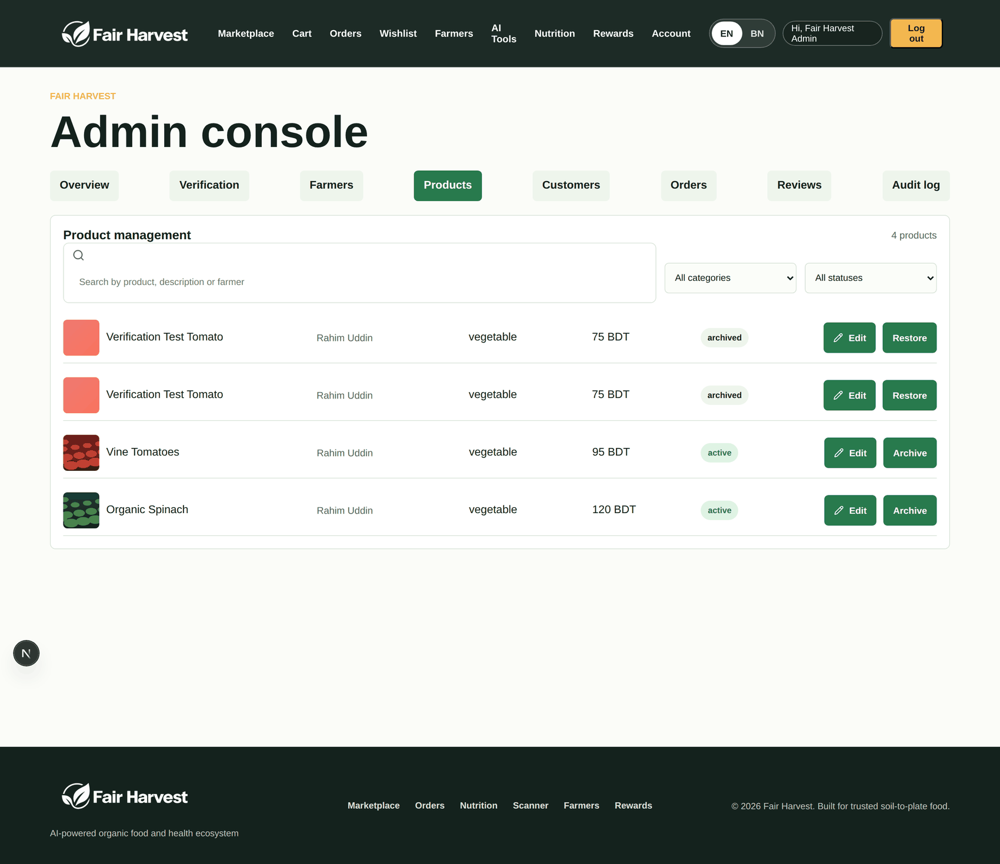
SQLite-এ ASCII লেখার তুলনা ডিফল্টভাবে case-insensitive, কিন্তু PostgreSQL-এ LIKE case-sensitive। ফলে “spinach” লিখে খুঁজলে “Organic Spinach” আর পাওয়া যেত না। সমাধান — Prisma-র mode: "insensitive":
where.OR = [
{ name: { contains: search, mode: "insensitive" } },
{ description: { contains: search, mode: "insensitive" } },
{ farmer: { user: { name: { contains: search, mode: "insensitive" } } } }
];
এটি ভাইভায় বলার মতো একটি ভালো উদাহরণ — “ডাটাবেস বদলালে শুধু connection string বদলালেই হয় না, আচরণও যাচাই করতে হয়।”
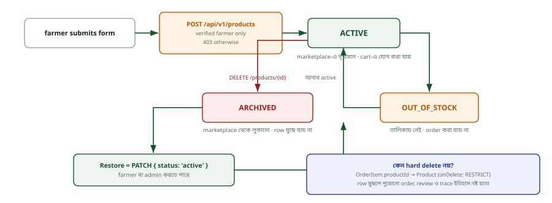
| Status | অর্থ | কে বসাতে পারে | Marketplace-এ | ক্রেতা কিনতে পারে? |
|---|---|---|---|---|
| ACTIVE | বিক্রির জন্য উন্মুক্ত (ডিফল্ট) | মালিক কৃষক বা admin | দেখা যায় | হ্যাঁ |
| OUT_OF_STOCK | সাময়িকভাবে শেষ | মালিক কৃষক বা admin (PATCH status) | দেখা যায় না | না — cart-এ যোগ করলে 404 "Product is not available" |
| ARCHIVED | তালিকা থেকে সরানো, কিন্তু মুছে ফেলা হয়নি | মালিক কৃষক বা admin (DELETE) | দেখা যায় না | না |
Marketplace-এর filter-টি বাস্তবে এভাবে কাজ করে:
// app/api/v1/products/route.js if (!farmerId) where.status = "ACTIVE";
অর্থাৎ — farmer_id ছাড়া query (মানে public marketplace) শুধু ACTIVE দেখায়। কিন্তু ?farmer_id=… দিলে সব status ফেরত আসে, কারণ কৃষককে নিজের archived পণ্যও দেখতে হবে।
এটি ভাইভার একটি প্রিয় প্রশ্ন। উত্তরটি ডাটাবেসের গঠনেই লেখা আছে:
model OrderItem {
productId String
product Product @relation(fields: [productId], references: [id])
// ↑ কোনো onDelete: Cascade নেই → Prisma-র ডিফল্ট = RESTRICT
}
মানে — যে পণ্যের বিপরীতে একটিও order আছে, সেটিকে ডাটাবেস মুছতেই দেবে না। আর মুছতে পারলেও ক্ষতি হতো:
| যদি hard delete করা হতো | কী ভেঙে যেত |
|---|---|
| পুরোনো order | ক্রেতার order history-তে পণ্যের নাম থাকত না; হিসাব মেলানো যেত না |
| Review | Review.productId → Product cascade, তাই review-ও মুছে যেত এবং কৃষকের reputation হঠাৎ বদলে যেত |
| TraceEvent | পণ্যের পুরো ইতিহাস হারিয়ে যেত — অথচ traceability এই প্রজেক্টের মূল প্রতিশ্রুতি |
| Farmer earnings | বিক্রির হিসাব পাল্টে যেত |
DELETE /api/v1/products/{productId} — নাম DELETE হলেও এটি সারিটি মুছে না, শুধু status বদলায়:
export async function DELETE(request, { params }) {
const session = requireUser(request);
enforceRateLimit(request, "product-archive", { max: 20, windowMs: 60_000 });
const product = await loadProduct(productId);
assertOwnerOrAdmin(session, product);
const archived = await prisma.product.update({
where: { id: productId }, data: { status: "ARCHIVED" }, …
});
await recordAudit({ actorId: session.userId, actorRole: session.role,
action: "product_archived", targetType: "Product", targetId: productId,
metadata: { previousStatus: product.status, farmerId: product.farmerId } });
return ok({ product: toPublicProduct(archived) }, { message: "Product archived" });
}
| কী | Archive-এর পরে অবস্থা |
|---|---|
| ডাটাবেস সারি | অক্ষত থাকে, শুধু status = ARCHIVED |
| Marketplace | আর দেখা যায় না |
| পুরোনো order | সম্পূর্ণ অক্ষত — nameSnapshot ও দামও OrderItem-এ আলাদা করে রাখা |
| Review | অক্ষত, reputation-এ গোনা চলতেই থাকে |
| TraceEvent | অক্ষত; /trace/<id> পেজ কাজ করে |
| Wishlist | সারিটি থেকে যায়, পণ্যটি wishlist পেজে দেখা যায় ছোট সীমাবদ্ধতা — archived বলে আলাদা চিহ্ন দেখানো হয় না |
| Cart | আগে থেকে cart-এ থাকলে সারিটি থাকে, কিন্তু checkout-এ stock যাচাইয়ে আটকে যায় আংশিক |
| ছবি | মুছে ফেলা হয় না — restore করলে ছবিও ফিরে আসে |
| Audit log | একটি product_archived এন্ট্রি লেখা হয় |
Restore-এর জন্য আলাদা কোনো endpoint নেই; এটি সাধারণ একটি update: PATCH /api/v1/products/{id} with { status: "active" }। Admin console-এ archived পণ্যের সারিতে “Restore” বোতাম আসে; কৃষক নিজের edit form-এর Status drop-down থেকে আবার active বেছে নিতে পারেন।
Archive ও Restore — দুটোতেই ব্রাউজারের confirmation দেখানো হয়, যাতে একটি অসতর্ক ক্লিকে listing বাজার থেকে সরে না যায়:
const confirmed = window.confirm(
`Archive "${product.name}"?\n\nIt will no longer appear in the marketplace, `
+ "but it can be restored later.");
if (!confirmed) return;
এটি FarmerProductRow.js ও app/admin/products/page.js — দুই জায়গাতেই আছে।
“Soft delete মানে ডেটা মুছে না ফেলে শুধু নিষ্ক্রিয় করে রাখা। Fair Harvest-এ পণ্য কখনো ডাটাবেস থেকে মুছি না, শুধু ARCHIVED করি — কারণ OrderItem-এর foreign key RESTRICT, আর পুরোনো order, review ও trace ইতিহাস ঠিক রাখা প্ল্যাটফর্মের মূল প্রতিশ্রুতি।”
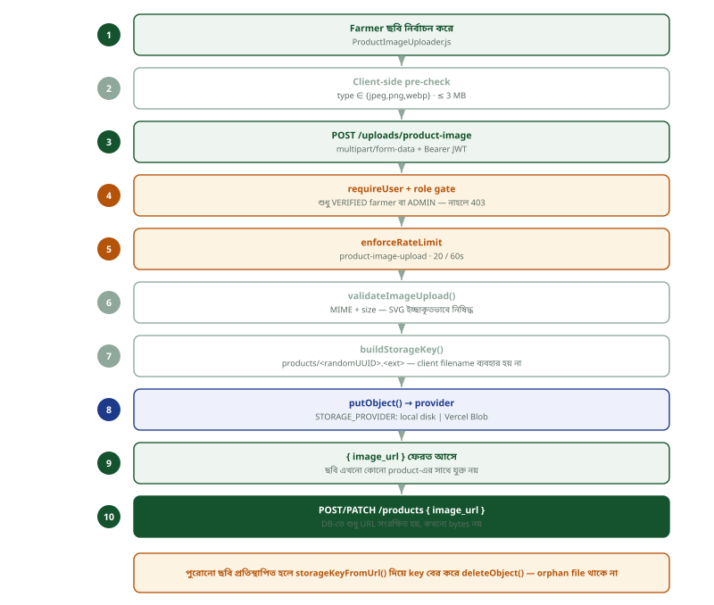
| নিয়ম | মান | কেন |
|---|---|---|
| অনুমোদিত ফরম্যাট | image/jpeg, image/png, image/webp | সব আধুনিক ব্রাউজার সরাসরি দেখাতে পারে |
| SVG নিষিদ্ধ | ইচ্ছাকৃতভাবে বাদ | SVG-তে JavaScript থাকতে পারে, আর ফাইল আমাদেরই origin থেকে পরিবেশিত হয় → XSS ঝুঁকি |
| সর্বোচ্চ আকার | MAX_IMAGE_BYTES = 3 × 1024 × 1024 (৩ MB) | বড় ফাইলে পেজ ধীর হয় ও storage খরচ বাড়ে |
| Rate limit | ২০ আপলোড / ৬০ সেকেন্ড (product-image-upload) | একটানা আপলোড করে storage ভরে ফেলা ঠেকানো |
| কে আপলোড করতে পারে | ADMIN, অথবা VERIFIED FARMER | যাতে সাধারণ ব্যবহারকারী প্ল্যাটফর্মকে ফ্রি file hosting বানাতে না পারে |
| ফাইলের নাম | products/<randomUUID>.<ext> | ক্লায়েন্টের পাঠানো নাম কখনো ব্যবহার হয় না → path traversal অসম্ভব |
আকার দুইবার যাচাই করা হয় — এটি একটি সচেতন নিরাপত্তা অভ্যাস:
const verdict = validateImageUpload({ mimeType: file.type, size: file.size }); // ক্লায়েন্টের দাবি
…
const buffer = Buffer.from(await file.arrayBuffer());
if (buffer.byteLength > MAX_IMAGE_BYTES) throw new ApiError("Image must be smaller than 3 MB", 422);
// ↑ আসল byte গুনে আবার যাচাই, কারণ file.size ক্লায়েন্টের দেওয়া তথ্য
| STORAGE_PROVIDER | Provider ফাইল | কোথায় রাখে | যে URL ফেরত দেয় |
|---|---|---|---|
| local (ডিফল্ট) | localDiskProvider.js | UPLOAD_DIR (ডিফল্ট ./storage/uploads) | আপেক্ষিক: /api/v1/uploads/<key> |
| object | objectStorageProvider.js | Vercel Blob (@vercel/blob) | সম্পূর্ণ CDN URL: https://<store>.public.blob.vercel-storage.com/… |
Vercel-এর serverless function-এর ফাইল সিস্টেম /tmp ছাড়া read-only, আর প্রতিটি invocation-এর পর সেটি মুছে যায়। তাই local provider production-এ চললে ENOENT: no such file or directory, mkdir '/var/task/fair-harvest-web/storage' ত্রুটি দেয় — এই প্রজেক্টে বাস্তবে এই সমস্যাটি ঘটেছিল এবং STORAGE_PROVIDER=object সেট করে সমাধান হয়েছে।
storageKeyFromUrl() একটি সংরক্ষিত URL থেকে আবার key বের করে আনে। দুটি রূপই এটি বোঝে:
// (১) local: "/api/v1/uploads/products/abc.jpg" → "products/abc.jpg" // (২) object: "https://xyz.public.blob.vercel-storage.com/products/abc.jpg" // → BLOB_PUBLIC_BASE_URL বাদ দিয়ে → "products/abc.jpg"
দ্বিতীয় শাখাটি না থাকলে Vercel Blob-এ প্রতিস্থাপিত প্রতিটি ছবি চিরকাল bucket-এ পড়ে থাকত, যার সাথে কোনো পণ্যের সংযোগ নেই — অর্থাৎ ধীরে ধীরে জমতে থাকা আবর্জনা।
Product.imageUrl শুধু একটি string। ছবির bytes কখনো PostgreSQL-এ যায় না। কারণ — (ক) ডাটাবেস বড় হয়ে ব্যাকআপ ও query ধীর হয়ে যেত, (খ) CDN থেকে ছবি পরিবেশন করা অনেক দ্রুত ও সস্তা, (গ) ডাটাবেস সারিটি ছোট থাকলে join ও index দ্রুত কাজ করে।
components/products/ProductImage.js একটি gradient টাইল দেখায় যেখানে category অনুযায়ী লেখা থাকে (Fresh / Fruit / Grain / Herb), এবং screen-reader-এর জন্য aria-label-এ “(no photo)” যোগ করে। এতে কোনো ভাঙা ছবির আইকন দেখা যায় না।
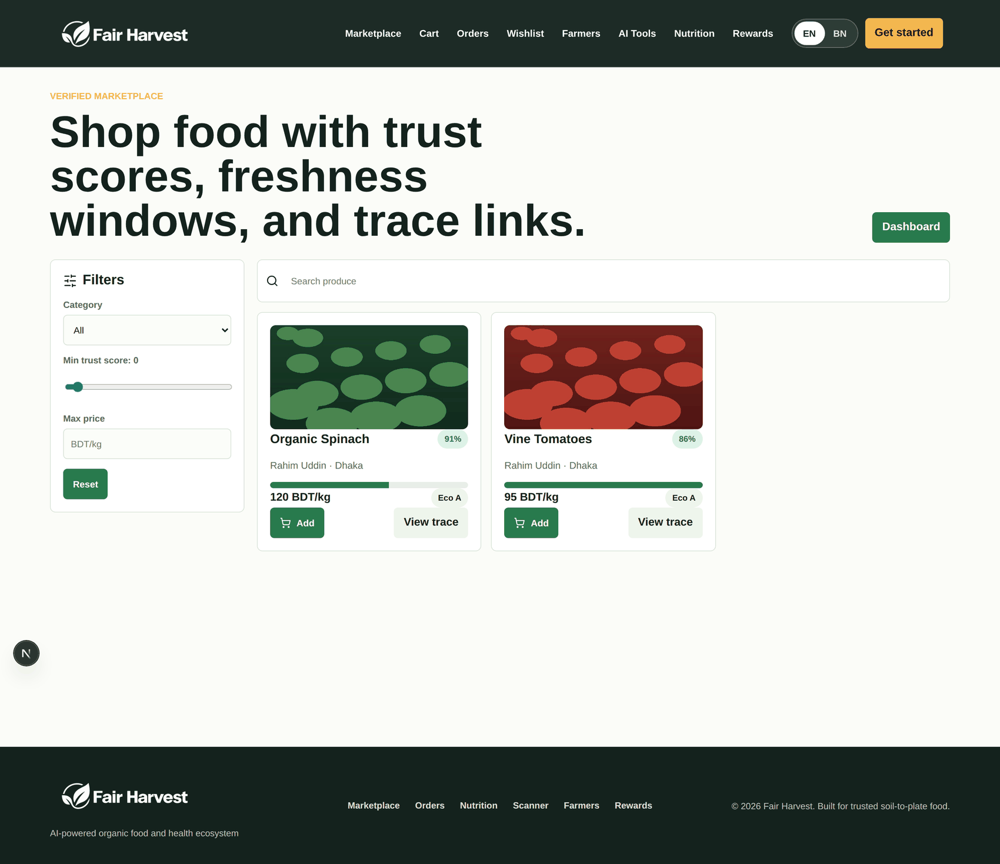
MarketplacePage (client component)
└─ useEffect → getProducts(filters) lib/api.js
└─ GET /api/v1/products?category=&min_trust=&max_price=
└─ prisma.product.findMany({ where, include: farmer.user,
orderBy: { trustScore: "desc" } })
└─ products.map(toPublicProduct) serializers.js
└─ setProducts(…) → <article className="productCard">
| নিয়ন্ত্রণ | Query param | কোথায় চলে | বাস্তবায়ন |
|---|---|---|---|
| Category | category | Server | enum-এ থাকলে তবেই where.category |
| Min trust score | min_trust | Server | where.trustScore = { gte: Number(...) } |
| Max price | max_price | Server | where.priceBdt = { lte: Number(...) } |
| Farmer | farmer_id | Server | দিলে সব status ফেরত আসে (কৃষকের নিজের তালিকা) |
| Search box | — | Client | আংশিক — শুধু ইতিমধ্যে লোড হওয়া তালিকার উপর product.name.toLowerCase().includes(search)। Server-এ যায় না। |
| sort_by | পাঠানো হয় | — | কাজ করে না — server এটি পড়েই না; ফলাফল সবসময় trustScore desc অনুসারে সাজানো |
একটি catch ব্লক দুটি উদাহরণ listing দেখায় এবং উপরে লাল-হলুদ ব্যানার লেখে: “Could not reach the marketplace API — showing 2 example listings only.” — অর্থাৎ ব্যবহারকারীকে মিথ্যা বলা হয় না যে এগুলোই আসল পণ্য।
app/marketplace/[productId]/page.js একটি React Server Component (async function) — অর্থাৎ HTML server-এ তৈরি হয়ে আসে, যা SEO ও প্রথম লোডের জন্য ভালো। পেজে চারটি প্যানেল: ছবি, বিবরণ ও দাম, কৃষকের তথ্য (verified badge সহ), এবং listing status। নিচে ReviewsSection component।
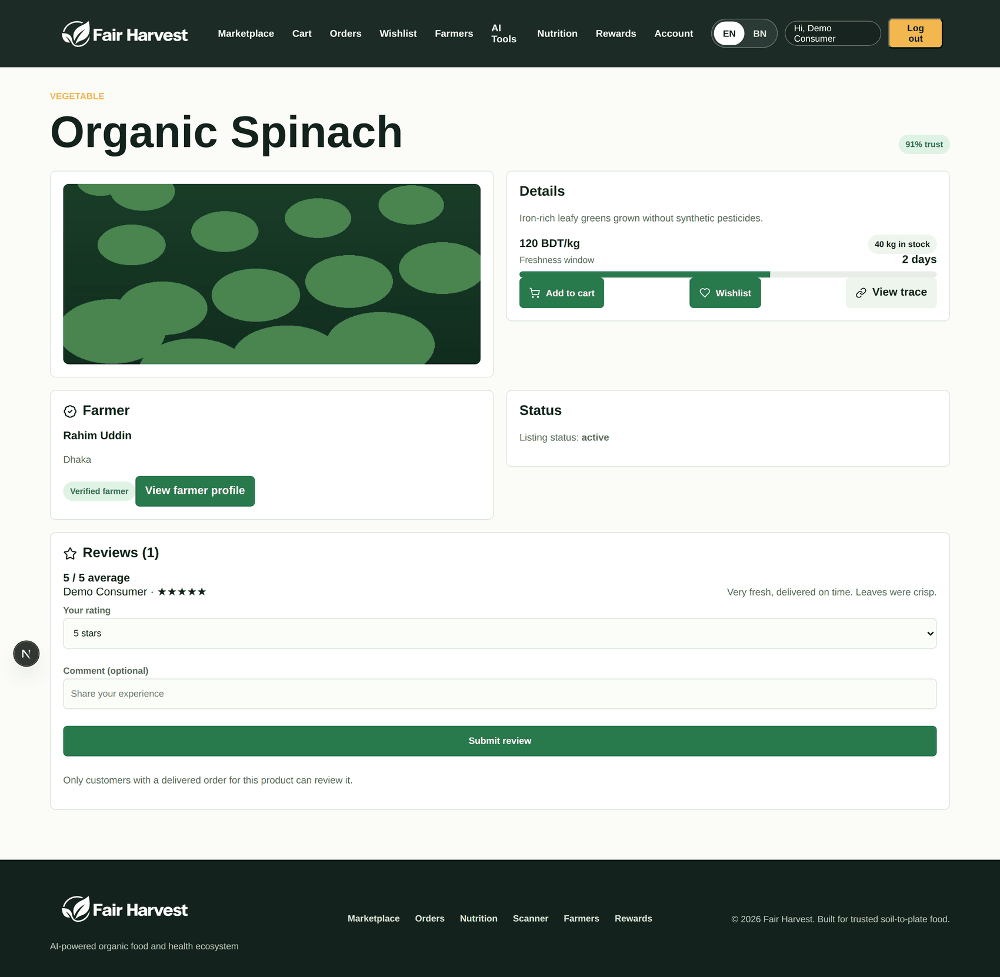
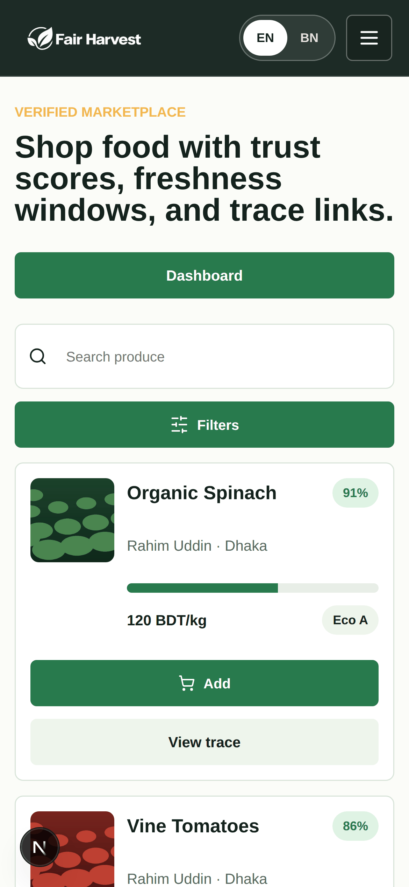
প্রতিটি পণ্যের জীবনে ছয়টি ধাপ থাকে। কৃষক প্রতিটি ধাপ ঘটার সাথে সাথে একটি TraceEvent সারি যোগ করেন, আর ক্রেতা /trace/<productId> পেজে সেই timeline দেখতে পান।
| # | TraceStage | বাংলা | সাধারণত কী বোঝায় |
|---|---|---|---|
| 1 | PLANTED | রোপণ | বীজ বোনা হলো |
| 2 | HARVESTED | ফসল তোলা | ফসল কাটা হলো |
| 3 | LAB_TESTED | ল্যাব পরীক্ষা | কীটনাশকের অবশিষ্টাংশ পরীক্ষা |
| 4 | PACKAGED | প্যাকেজিং | বাক্সে ভরা হলো |
| 5 | SHIPPED | পরিবহন | বিতরণ কেন্দ্রে পাঠানো |
| 6 | LISTED | তালিকাভুক্ত | Fair Harvest-এ বিক্রির জন্য এলো |
POST /api/v1/trace/{productId} — requireUser, তারপর:
if (session.role !== "ADMIN" && session.userId !== product.farmer.userId) {
throw new ApiError("You do not have permission to update this product's trace", 403);
}
Zod দিয়ে stage (ছয়টির একটি), ঐচ্ছিক note (সর্বোচ্চ ৫০০ অক্ষর) এবং ঐচ্ছিক GPS (lat -90…90, lng -180…180) যাচাই হয়।
toPublicTrace() সবসময় ছয়টি ধাপই ফেরত দেয়, কিন্তু যেটির কোনো event নেই সেটির completed: false ও timestamp: null। UI-তে সেটি ধূসর “Pending” হিসেবে দেখায়।
অনেক প্রজেক্টে খালি ধাপগুলোতে বানানো তারিখ বসিয়ে দেওয়া হয়, যাতে দেখতে ভালো লাগে। এখানে ইচ্ছাকৃতভাবে তা করা হয়নি — কোডের কমেন্টেই লেখা: “no fabricated timestamps.”
API response-এ দুটি ফিল্ড ইচ্ছাকৃতভাবে রাখা হয়েছে যাতে কেউ ভুল না বোঝে:
ledger_type: "database",
verification_note: "Traceability data is stored in the Fair Harvest database and
entered by the farmer. No blockchain or third-party ledger is used."
কোডের কমেন্টেও লেখা আছে — একটি verified_on_chain boolean রাখা হয়নি, কারণ সেটি একটি সাধারণ ডাটাবেস সারিকে “on-chain সত্য” বলে ভুলভাবে উপস্থাপন করত।
হোমপেজের TrustCard-এ একটি স্থির “On-chain” লেখা chip আছে (app/page.js-এর <span className="chainChip">On-chain</span>)। এটি নিছক ডিজাইনের লেখা; এর পিছনে কোনো blockchain নেই এবং trace পেজ স্পষ্টভাবে উল্টো কথা বলে। বোর্ড ধরলে সরাসরি বলুন এটি একটি অবশিষ্ট UI লেবেল যা সরানো উচিত।
Response-এ qr_code: "qr_<productId>" নামে একটি স্ট্রিং আসে এবং trace পেজে সেটি লেখা হিসেবে দেখানো হয়। কোনো প্রকৃত QR ছবি তৈরি বা স্ক্যান করা হয় না — এটি একটি পরিচয়সূচক স্ট্রিং মাত্র।
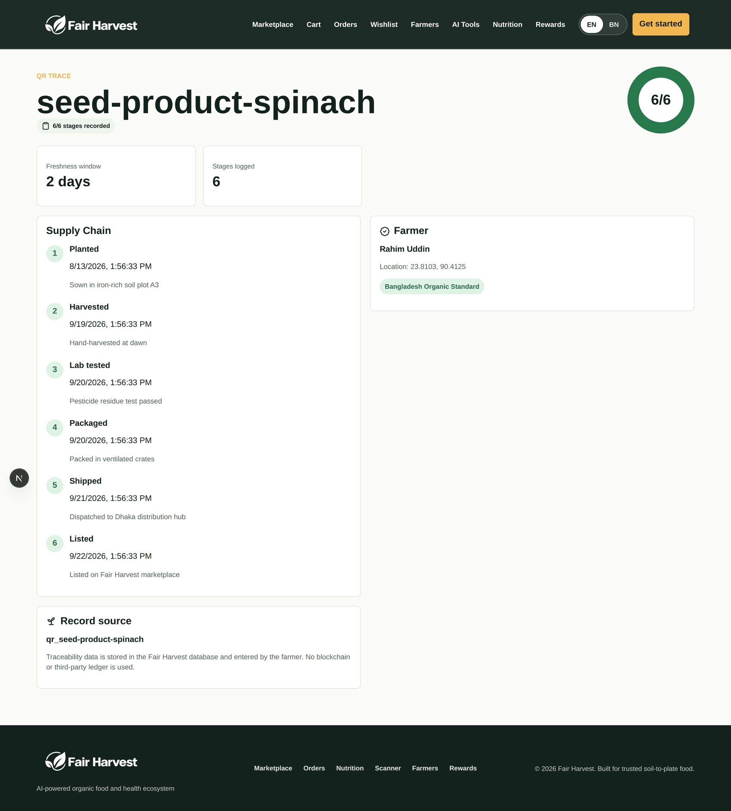
এটি database normalization-এর একটি পাঠ্যবই উদাহরণ। Cart হলো ধারক (প্রতি ব্যবহারকারীর ঠিক একটি), আর CartItem হলো তার ভিতরের প্রতিটি সারি। একটিতে সব রাখলে একই user-এর অনেক সারি লাগত এবং “cart খালি করা” বা “cart-এর মালিক কে” — এসব প্রশ্নের উত্তর জটিল হতো।
model Cart { id String @id userId String @unique items CartItem[] }
model CartItem { id String @id cartId String productId String
quantityKg Float unitPriceBdt Float source CartItemSource
@@unique([cartId, productId, source]) }
| সিদ্ধান্ত | কারণ |
|---|---|
| userId @unique | একজন ব্যবহারকারীর একটির বেশি cart থাকতে পারবে না — ডাটাবেসই নিশ্চিত করে |
| unitPriceBdt CartItem-এ কপি করা | cart-এ রাখার সময়ের দাম মনে রাখার জন্য। তবে একই পণ্য আবার যোগ করলে দাম নতুন করে বসানো হয় (unitPriceBdt: product.priceBdt)। |
| @@unique([cartId, productId, source]) | একই পণ্য একই উৎস থেকে দুইবার সারি হিসেবে আসবে না — পরিমাণ যোগ হয়ে যাবে |
enum-এ তিনটি মান আছে: DIRECT, MEAL_PLAN, PRESCRIPTION। বাস্তবে UI থেকে শুধু DIRECT-ই তৈরি হয়; বাকি দুটি ভবিষ্যতের meal-plan ও ডাক্তারের prescription ফিচারের জন্য জায়গা রাখা আংশিক — enum আছে, UI নেই।
| Method | Endpoint | অনুমোদন | কাজ |
|---|---|---|---|
| GET | /api/v1/cart/{userId} | মালিক বা ADMIN | cart + subtotal |
| DELETE | /api/v1/cart/{userId} | মালিক বা ADMIN | সব item মুছে ফেলা |
| POST | /api/v1/cart/{userId}/items | মালিক বা ADMIN | item যোগ বা পরিমাণ বৃদ্ধি |
| PATCH | /api/v1/cart/{userId}/items/{itemId} | মালিক বা ADMIN | পরিমাণ বদল |
| DELETE | /api/v1/cart/{userId}/items/{itemId} | মালিক বা ADMIN | item মুছে ফেলা |
components/cart/useCart.js একটি custom React hook যা cart-এর সব কাজ এক জায়গায় রাখে: { cart, loading, addItem, updateItem, removeItem, clear, refresh, isLoggedIn }। প্রতিটি পরিবর্তনের পর refresh() ডেকে server থেকে নতুন করে cart আনা হয় — অর্থাৎ subtotal সবসময় server-এর হিসাব, client-এর অনুমান নয়।
Login না থাকলে addItem() সরাসরি /auth/customer-এ পাঠিয়ে দেয়।
// serializers.js → toPublicCart() line_total_bdt = Number((unitPriceBdt * quantityKg).toFixed(2)) subtotal_bdt = Number(items.reduce((s, i) => s + i.line_total_bdt, 0).toFixed(2))
toFixed(2) ব্যবহার করা হয় যাতে floating-point-এর কারণে 299.99999997 জাতীয় সংখ্যা না দেখায়।
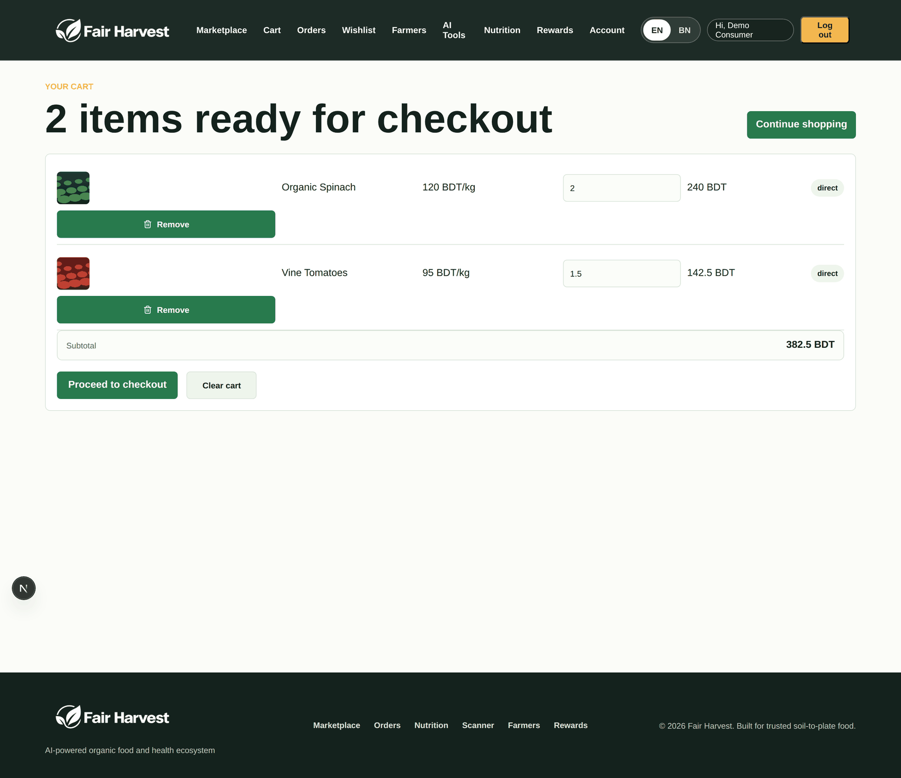
Cart-এ যোগ করার সময় stock যথেষ্ট আছে কি না তা যাচাই করা হয় না — শুধু পণ্যটি ACTIVE কি না দেখা হয়। Stock-এর প্রকৃত যাচাই হয় checkout-এর সময় (অধ্যায় 19)। ফলে ক্রেতা ১০০ কেজি cart-এ রাখতে পারেন যদিও মজুদ ৪০ কেজি, এবং ত্রুটিটি কেবল checkout-এ গিয়ে দেখতে পান।
এই প্রজেক্টে কোনো প্রকৃত payment gateway নেই। bKash, Nagad, SSLCommerz, Stripe — কোনোটির সাথেই সংযোগ নেই। কোনো আসল টাকা কখনো লেনদেন হয় না। enum-এর নামই সেটি স্বীকার করে: PaymentMethod { COD, DEMO_CARD } এবং Payment.demoTransactionRef। এটিকে কখনোই “real payment integration” বলবেন না।
| পদ্ধতি | UI-তে লেখা | Payment.status | বাস্তবে কী ঘটে |
|---|---|---|---|
| DEMO_CARD | “Demo card (charged instantly)” | PAID, paidAt = now() | কোনো কার্ড নম্বর চাওয়াই হয় না; কোড সরাসরি PAID লিখে দেয় SIMULATED |
| COD | “Cash on delivery” | PENDING, paidAt = null | বাস্তবসম্মত — হাতে হাতে টাকা নেওয়ার ধারণা। তবে পরে PAID করার কোনো ব্যবস্থা নেই আংশিক |
POST /api/v1/orders/{userId}/checkout — এখানে ছয়টি কাজ একটিমাত্র ডাটাবেস transaction-এর ভিতরে হয়। অর্থাৎ হয় সবগুলো হবে, নয়তো একটিও হবে না।
const order = await prisma.$transaction(async (tx) => {
// ১. Order + সব OrderItem তৈরি (nameSnapshot ও দাম কপি করে)
const created = await tx.order.create({ data: { userId, totalBdt: total, …,
items: { create: cart.items.map(item => ({ productId, farmerId,
nameSnapshot: item.product.name, quantityKg, unitPriceBdt, lineTotalBdt })) },
statusEvents: { create: [{ status: "PENDING", note: "Order placed" }] } } });
// ২. প্রতিটি পণ্যের মজুদ কমানো
for (const item of cart.items)
await tx.product.update({ where: { id: item.productId },
data: { quantityKg: { decrement: item.quantityKg } } });
// ৩. Payment সারি
await tx.payment.create({ data: { orderId: created.id, method, amountBdt: total,
status: isDemoCardPaid ? "PAID" : "PENDING",
demoTransactionRef: `DEMO-${created.id.slice(0, 8)}`,
paidAt: isDemoCardPaid ? new Date() : null } });
// ৪. পুরস্কার পয়েন্ট
await tx.rewardsLedger.create({ data: { userId, points: 20, reason: "Healthy purchase" } });
// ৫. Cart খালি করা
await tx.cartItem.deleteMany({ where: { cartId: cart.id } });
return created;
});
“ধরুন order তৈরি হলো, কিন্তু stock কমানোর ঠিক আগে server বন্ধ হয়ে গেল। তাহলে একটি order থাকত যার জন্য কোনো stock কাটা হয়নি — হিসাব চিরতরে ভুল হয়ে যেত। $transaction নিশ্চিত করে যে পাঁচটি কাজই একসাথে সফল হবে, নাহলে ডাটাবেস আগের অবস্থায় ফিরে যাবে (rollback)। এটিকে বলে atomicity — ACID-এর A।”
| যাচাই | ব্যর্থ হলে | বার্তা |
|---|---|---|
| requireOwnerOrRole(request, userId, ["ADMIN"]) | 403 | অন্যের হয়ে checkout করা যায় না |
| Zod: ঠিকানার line1 ও city আবশ্যক | 422 | “Delivery address is required” |
| Cart খালি কি না | 400 | “Your cart is empty” |
| প্রতিটি item-এর জন্য product.quantityKg < item.quantityKg | 409 | “Not enough stock for <পণ্যের নাম>” |
OrderItem-এ পণ্যের নাম ও দাম কপি করে রাখা হয়। কেন? কারণ কৃষক আগামীকাল নাম বা দাম বদলাতে পারেন। কিন্তু ক্রেতার রসিদে সেই দিনের নাম ও দামই থাকা উচিত। এটিকে বলে denormalization for historical accuracy — ইচ্ছাকৃতভাবে তথ্য দুইবার রাখা, যাতে ইতিহাস বদলে না যায়।
Frontend-এ const DELIVERY_FEE = 60; — একটি স্থির সংখ্যা। Server-এ deliveryFeeInput ?? 60, অর্থাৎ client যা পাঠায় server তাই মেনে নেয়। সীমাবদ্ধতা — দূরত্ব বা ওজনভিত্তিক কোনো হিসাব নেই, এবং client ইচ্ছে করলে ০ পাঠাতে পারে।
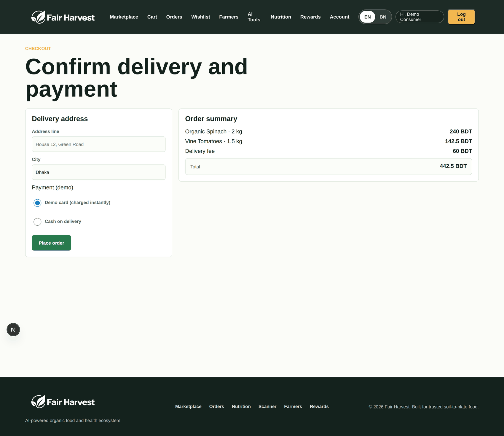
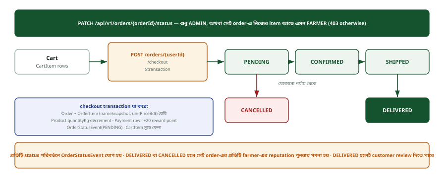
| Status | অর্থ | কখন বসে |
|---|---|---|
| PENDING | অর্ডার দেওয়া হয়েছে, কৃষক এখনো নিশ্চিত করেননি | checkout-এ স্বয়ংক্রিয়ভাবে |
| CONFIRMED | কৃষক/admin নিশ্চিত করেছেন | হাতে পরিবর্তন করতে হয় |
| SHIPPED | পাঠিয়ে দেওয়া হয়েছে | হাতে |
| DELIVERED | ক্রেতা পেয়ে গেছেন | হাতে — এর পরেই review দেওয়া সম্ভব হয় |
| CANCELLED | বাতিল | হাতে, যেকোনো পর্যায় থেকে |
Status পরিবর্তনে কোনো ক্রম জোর করে চাপানো হয় না। অর্থাৎ PENDING → DELIVERED সরাসরি করা যায়, এমনকি DELIVERED → PENDING-ও যায়। একটি প্রকৃত state machine থাকলে এটি আটকানো যেত। বর্তমানে শুধু enum-এর পাঁচটি মানের মধ্যে সীমাবদ্ধ থাকাটুকু যাচাই হয়।
// app/api/v1/orders/[id]/status/route.js
if (session.role !== "ADMIN") {
const farmerProfile = await prisma.farmerProfile.findUnique({ where: { userId: session.userId } });
const ownsAnItem = farmerProfile && order.items.some(item => item.farmerId === farmerProfile.id);
if (!ownsAnItem) throw new ApiError("You do not have permission to update this order", 403);
}
অর্থাৎ ADMIN সব order বদলাতে পারে; একজন কৃষক শুধু সেই order বদলাতে পারেন যেখানে তার অন্তত একটি পণ্য আছে। ক্রেতা নিজের order-এর status বদলাতে পারেন না (এমনকি বাতিলও করতে পারেন না — সীমাবদ্ধতা)।
প্রতিবার status বদলালে একটি নতুন সারি লেখা হয়; পুরোনোটি কখনো মোছা বা সম্পাদনা হয় না:
data: { status: nextStatus,
statusEvents: { create: { status: nextStatus, note: parsed.data.note } } }
এটি একটি append-only log। ফলে /orders/<id> পেজে সম্পূর্ণ timeline দেখানো যায় — কখন কী হলো, কে কী নোট লিখল।
if (nextStatus === "DELIVERED" || nextStatus === "CANCELLED") {
const farmerIds = [...new Set(updated.items.map(item => item.farmerId))];
await Promise.all(farmerIds.map(id => recomputeFarmerReputation(id)));
}
একটি order-এ একাধিক কৃষকের পণ্য থাকতে পারে, তাই Set দিয়ে আলাদা আলাদা farmerId বের করে প্রত্যেকের reputation নতুন করে গণনা করা হয়।
| কে | Endpoint | কী দেখে |
|---|---|---|
| ক্রেতা | GET /api/v1/orders/{userId} | নিজের সব order, সর্বশেষটি আগে |
| ক্রেতা | GET /api/v1/orders/detail/{orderId} | একটি order-এর সম্পূর্ণ বিবরণ + timeline + payment |
| কৃষক | GET /api/v1/farmer/orders | শুধু নিজের item — বহু-কৃষকের order থেকেও অন্যের অংশ দেখতে পান না |
| Admin | GET /api/v1/admin/orders | সব order, ক্রেতার নাম ও ইমেইল সহ |
farmer/orders route ক্লায়েন্ট থেকে farmerId নেয় না; সেটি session থেকে বের করে। এবং OrderItem-এর উপর query করে, পুরো Order-এর উপর নয়। ফলে দুই কৃষকের পণ্য থাকা একটি order-এ প্রত্যেকে কেবল নিজেরটুকুই দেখেন — ক্রেতার পুরো ঝুড়ি বা মোট বিল নয়।
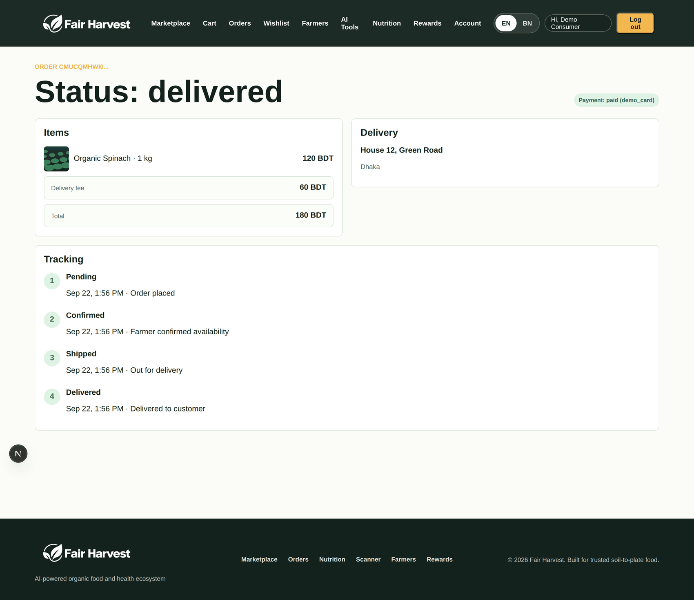
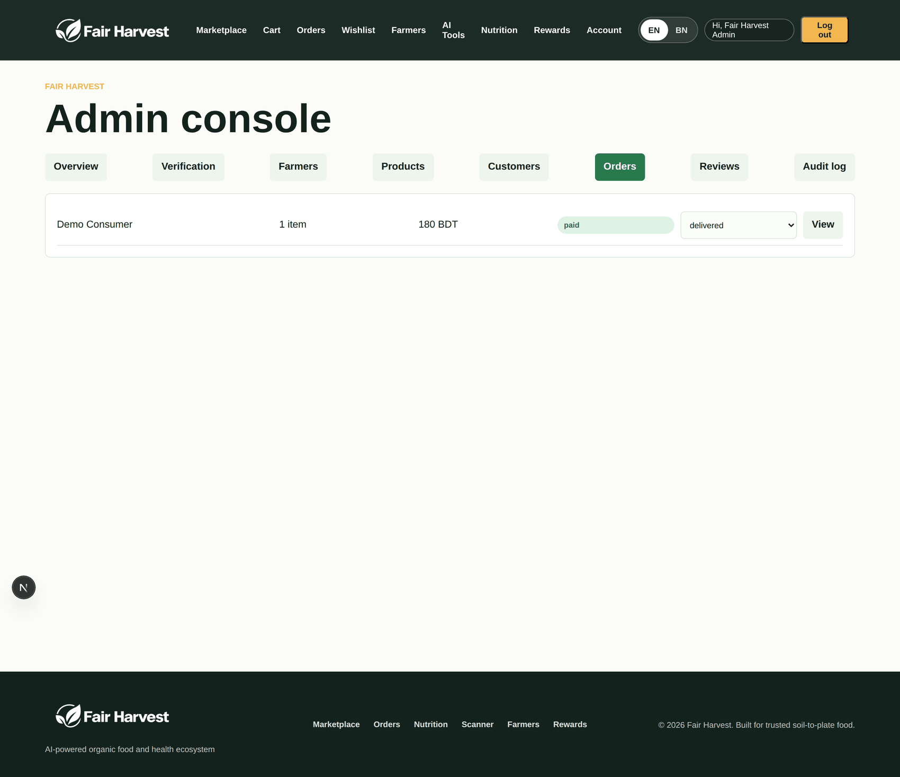
এই একটি নিয়মই review ব্যবস্থাকে বিশ্বাসযোগ্য করে। এটি তিন স্তরে প্রয়োগ করা হয়েছে — যার যেকোনো একটি ভাঙলেও বাকিগুলো আটকে দেয়।
| স্তর | কোথায় | কী করে |
|---|---|---|
| ১ | Frontend ReviewsSection.js |
form-টি কেবল তখনই render হয় যখন user.role === "consumer" |
| ২ | Server logic getReviewEligibility() |
DELIVERED order item খুঁজে দেখে, এবং আগে review দেওয়া আছে কি না দেখে |
| ৩ | Database Review model |
orderItemId @unique + @@unique([customerId, productId]) — কোড ভুল করলেও ডাটাবেস দ্বিতীয় review ঢুকতে দেবে না |
// lib/server/reviews.js
const [deliveredOrderItem, existingReview] = await Promise.all([
prisma.orderItem.findFirst({
where: { productId, order: { userId: customerId, status: "DELIVERED" } },
orderBy: { id: "desc" } }),
prisma.review.findUnique({ where: { customerId_productId: { customerId, productId } } })
]);
return decideEligibility({ deliveredOrderItem, alreadyReviewed: Boolean(existingReview) });
// lib/server/reviewEligibility.js (pure — টেস্ট করা যায়)
export function decideEligibility({ deliveredOrderItem, alreadyReviewed }) {
if (alreadyReviewed) return { eligible: false, reason: "already_reviewed" };
if (!deliveredOrderItem) return { eligible: false, reason: "not_purchased" };
return { eligible: true, orderItemId: deliveredOrderItem.id };
}
| Constraint | কী ঠেকায় |
|---|---|
| orderItemId @unique | একটি নির্দিষ্ট ক্রয়ের বিপরীতে একটির বেশি review নয় |
| @@unique([customerId, productId]) | একই ক্রেতা একই পণ্য পাঁচবার কিনে পাঁচটি ৫-তারা দিতে পারবেন না — অর্থাৎ review farming আটকানো |
Admin PATCH /api/v1/admin/reviews/{reviewId} দিয়ে status published ↔ hidden করতে পারেন। Review সারিটি কখনো মুছে ফেলা হয় না। GET /api/v1/reviews সবসময় where.status = "PUBLISHED" দিয়ে filter করে, তাই hidden review জনসমক্ষে আসে না — কিন্তু ইতিহাস থেকে যায়। প্রতিটি moderation audit log-এ review_moderated হিসেবে লেখা হয়, এবং কৃষকের reputation সাথে সাথে নতুন করে গণনা হয় (কারণ hidden review আর গোনা হবে না)।
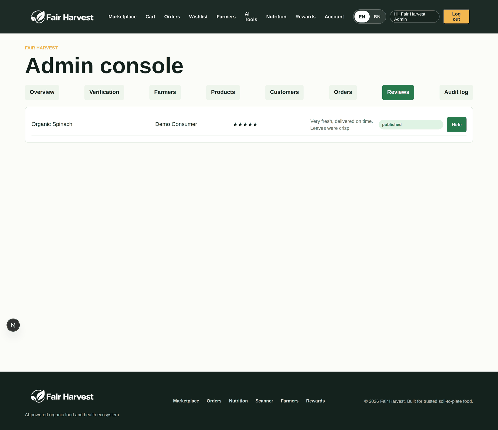
model WishlistItem {
id String @id @default(cuid())
userId String ; productId String
createdAt DateTime @default(now())
@@unique([userId, productId]) // একই পণ্য দুইবার নয়
@@index([userId]) // "আমার wishlist" query দ্রুত করার জন্য
}
| Method | Endpoint | কাজ |
|---|---|---|
| GET | /api/v1/wishlist | নিজের সম্পূর্ণ wishlist (পণ্যের বিস্তারিত সহ) |
| POST | /api/v1/wishlist | upsert — বারবার চাপলেও ত্রুটি হয় না |
| GET | /api/v1/wishlist/{productId} | { wishlisted: true/false } — হার্ট আইকনের অবস্থার জন্য |
| DELETE | /api/v1/wishlist/{productId} | সরিয়ে ফেলা |
লক্ষ্য করুন — কোনো endpoint-এ userId নেই। প্রতিটি route সবসময় session.userId ব্যবহার করে। ফলে “অন্যের wishlist দেখা” চেষ্টা করার উপায়ই থাকে না — কোনো id পাঠানোর জায়গাই নেই। কোডের কমেন্টে লেখা: “always scoped to the authenticated session, never to a client-supplied user id.”
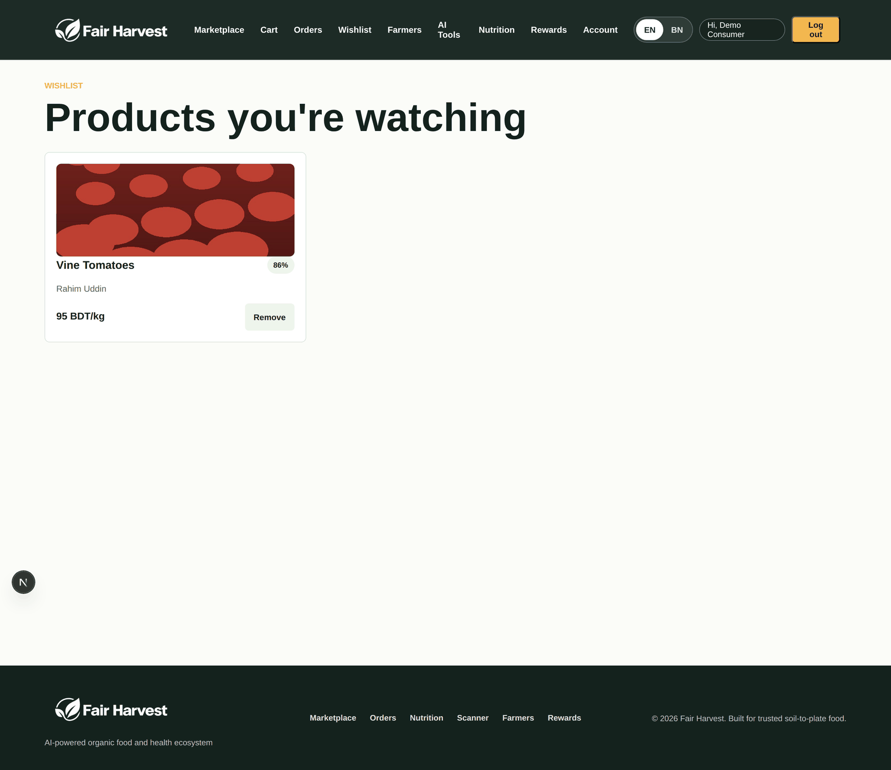
একটি ledger (খতিয়ান) — অর্থাৎ ব্যবহারকারীর উপর একটি “points” কলাম না রেখে প্রতিটি অর্জনকে আলাদা সারি হিসেবে রাখা হয়। মোট পয়েন্ট প্রতিবার যোগ করে বের করা হয়।
const points = ledgerEntries.reduce((sum, entry) => sum + entry.points, 0);
সুবিধা — কখন, কেন পয়েন্ট পেয়েছেন তার পূর্ণ ইতিহাস থাকে; শুধু একটি যোগফল থাকলে সেটি হারিয়ে যেত।
| ঘটনা | পয়েন্ট | reason |
|---|---|---|
| Checkout সম্পন্ন | +20 | "Healthy purchase" |
| POST /api/v1/nutrition/log | +8 | "Meal log" |
পাঁচটি badge, পয়েন্টের সীমা পেরোলেই স্বয়ংক্রিয়ভাবে অর্জিত হয়: First Harvest (১০০), Organic Warrior (৫০০), 7-Day Streak (১০০০), Zero Pesticide Week (২৫০০), Health Champion (৫০০০)।
(১) “Streak” আসলে streak নয়। কোডে এটি গণনা হয় এভাবে — new Set(entries.map(e => new Date(e.createdAt).toDateString())).size। অর্থাৎ এটি কতগুলো আলাদা দিনে পয়েন্ট পেয়েছেন তার সংখ্যা, টানা কত দিন নয়। তাই UI-তে লেখা আছে “Distinct active days”, “streak” নয়। (২) পয়েন্ট দিয়ে কিছুই কেনা যায় না — কোনো redemption ব্যবস্থা নেই।
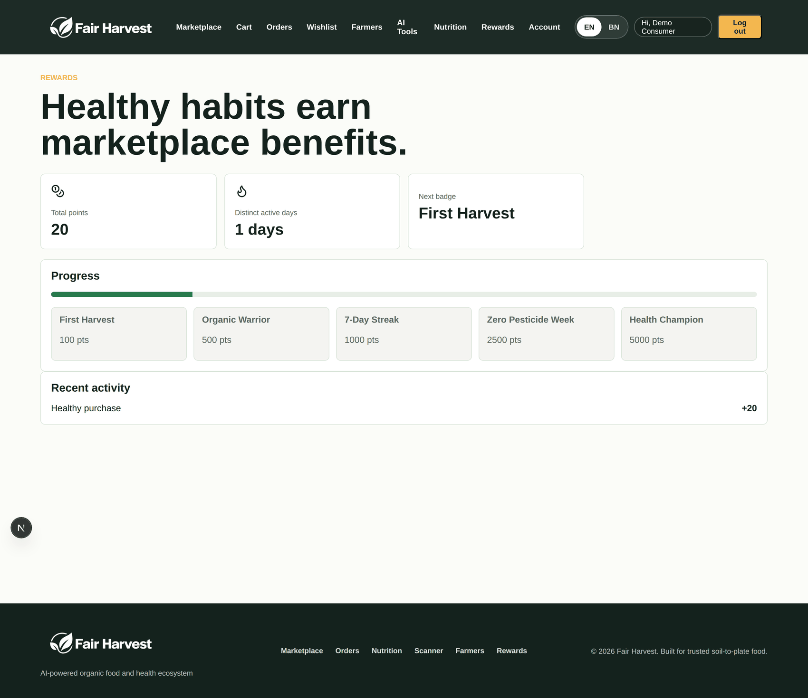
ফাইল: app/farmer/dashboard/page.js · রক্ষাকবচ: app/farmer/layout.js → <RoleGuard role="farmer">
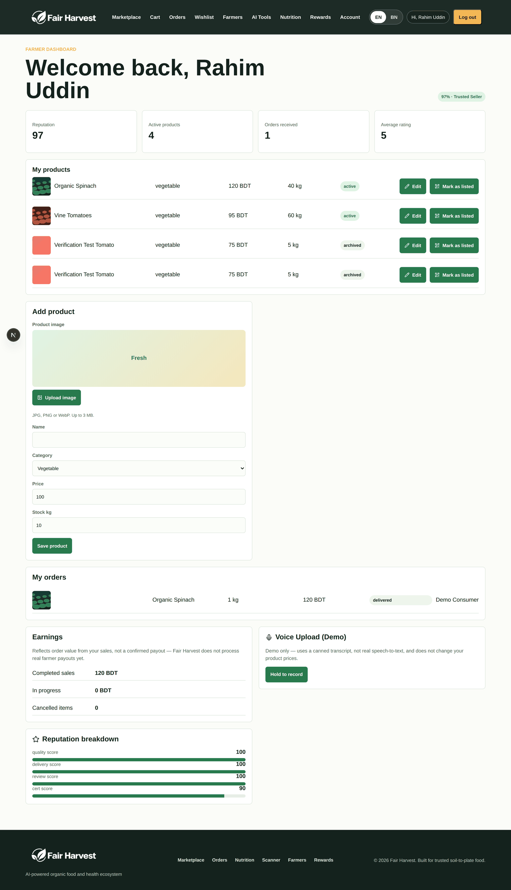
| অংশ | কৃষক যা দেখেন | কোন API | টীকা |
|---|---|---|---|
| শিরোনাম ও badge | “Welcome back, <নাম>” এবং ডানে “97% · Trusted Seller” | GET /farmers/{id}/score | score না এলে badge দেখানোই হয় না |
| Reputation টাইল | ৯৭ | একই | লোড হওয়ার আগে “—” দেখায়। কোডে কমেন্ট আছে: হার্ডকোড করা মান দেখালে সেটি কৃষকের অর্জিত নয় এমন সংখ্যা হতো |
| Active products টাইল | সংখ্যা | GET /products?farmer_id= | ছোট বাগ লেবেলে “Active” লেখা থাকলেও এটি archived সহ সব পণ্য গোনে |
| Orders received টাইল | নিজের order item-এর সংখ্যা | GET /farmer/orders | — |
| Average rating টাইল | গড় তারকা, বা “No reviews yet (0)” | /score | শূন্য না দেখিয়ে সৎ বার্তা |
| Verification প্যানেল | verified না হলেই কেবল দেখায় — লাল সতর্কতা ও verify বোতাম | session-এর farmer_verification_status | একই সাথে “Add product” ফর্ম সম্পূর্ণ লুকিয়ে যায় |
| My products | প্রতিটি সারিতে ছবি, নাম, category, দাম, stock, status + Edit ও “Mark as listed” | GET /products?farmer_id= | Edit চাপলে সারিটি inline form হয়ে যায় (FarmerProductRow.js) |
| Add product | ছবি uploader + নাম, category, দাম, stock | POST /uploads/product-image → POST /products | category drop-down-এ এখানে শুধু তিনটি (vegetable/fruit/grain) — herb বাদ পড়েছে ছোট অসঙ্গতি |
| My orders | সর্বোচ্চ ৮টি order item — পণ্য, পরিমাণ, মোট, status, ক্রেতার নাম | GET /farmer/orders | শুধু নিজের item |
| Earnings | Completed sales, In progress, Cancelled items | GET /farmer/earnings | প্যানেলেই লেখা: “not a confirmed payout — Fair Harvest does not process real farmer payouts yet” |
| Voice Upload | একটি বোতাম ও নির্দিষ্ট একটি বাংলা বাক্য | POST /voice/upload | DEMO — UI-তেই লেখা “uses a canned transcript, not real speech-to-text” |
| Reputation breakdown | চারটি বার: quality, delivery, review, cert | /score | quality ও review একই মান দেখায় (দুটোই review_score) |
// lib/server/earnings.js
// Deliberately calls this "earnings", never "paid out" or "balance" — no real
// payout processing exists in this system (COD/demo payment only).
note: "Reflects order value, not an actual payout — no payment gateway/payout
processing exists in this system."
এমনকি একটি unit test আছে যার নামই "never calls this a payout" — যা assert.match(result.note, /not an actual payout/i) দিয়ে নিশ্চিত করে যে ভবিষ্যতে কেউ ভুল করে শব্দটি বদলে দিতে পারবে না।
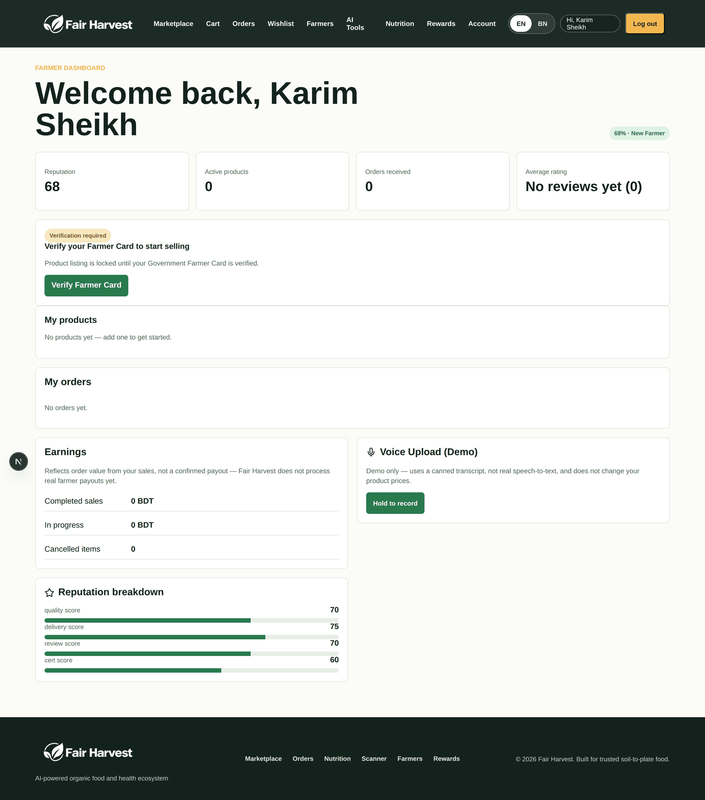
ফাইল: app/account/page.js · রক্ষাকবচ: app/account/layout.js → <RoleGuard role="consumer">
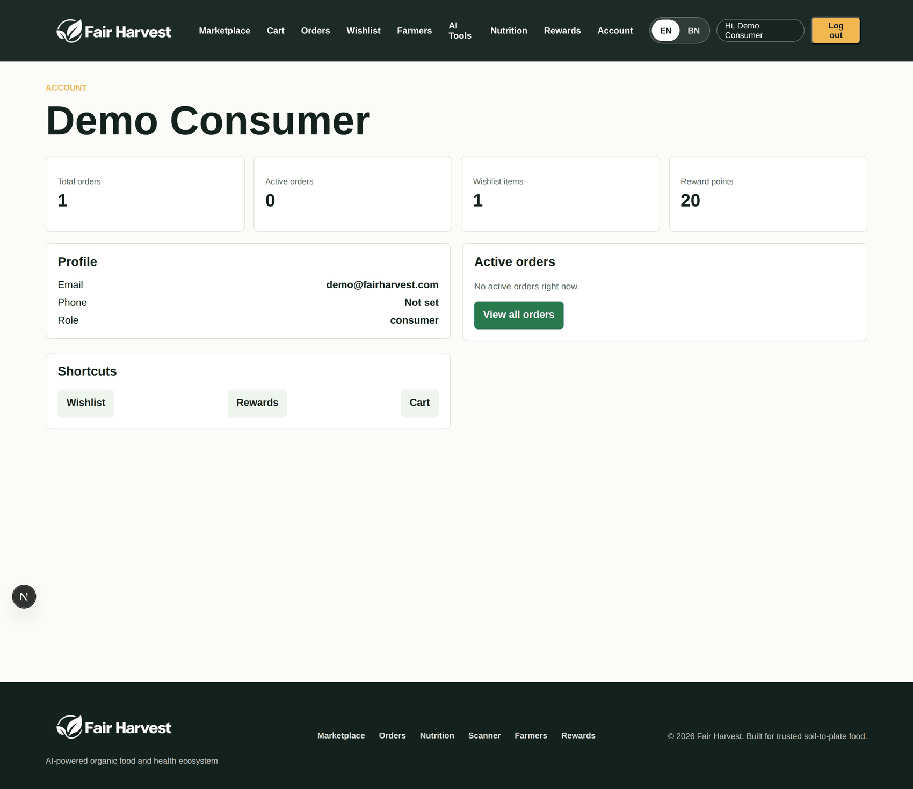
| অংশ | কী দেখায় | কোথা থেকে আসে |
|---|---|---|
| Total orders | মোট order সংখ্যা | GET /orders/{userId} |
| Active orders | যেগুলো delivered বা cancelled নয় | একই তালিকা থেকে client-side filter |
| Wishlist items | সংখ্যা | GET /wishlist |
| Reward points | মোট পয়েন্ট | GET /users/{userId}/rewards |
| Profile | ইমেইল, ফোন, রোল | localStorage-এ রাখা session user object |
| Active orders তালিকা | সর্বোচ্চ ৫টি, প্রতিটিতে “Track” বোতাম | — |
| Shortcuts | Wishlist · Rewards · Cart | — |
Profile সম্পাদনা করার কোনো ব্যবস্থা নেই — নাম, ফোন বা পাসওয়ার্ড বদলানোর কোনো UI বা API কোনোটিই নেই। পাসওয়ার্ড ভুলে গেলে পুনরুদ্ধারেরও উপায় নেই। Not implemented
| ধাপ | পেজ | কাজ | চিত্র |
|---|---|---|---|
| 1 | / বা /marketplace | পণ্য খোঁজা ও filter | চিত্র 1, 16 |
| 2 | /marketplace/[id] | বিস্তারিত, trust, কৃষকের তথ্য | চিত্র 17 |
| 3 | /trace/[id] | উৎস যাচাই (ঐচ্ছিক) | চিত্র 19 |
| 4 | /auth/customer | login বা register | চিত্র 6 |
| 5 | /cart | পরিমাণ ঠিক করা | চিত্র 20 |
| 6 | /checkout | ঠিকানা ও payment (demo) | চিত্র 21 |
| 7 | /orders/[id] | status timeline দেখা | চিত্র 23 |
| 8 | /marketplace/[id] | DELIVERED হলে review দেওয়া | চিত্র 17 |
| 9 | /account | সারসংক্ষেপ | চিত্র 30 |
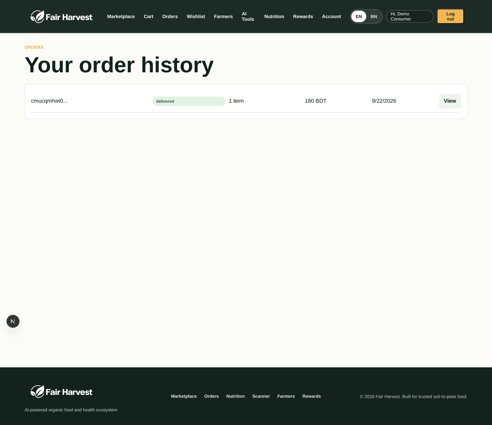
/admin স্বয়ংক্রিয়ভাবে /admin/dashboard-এ পাঠিয়ে দেয়। app/admin/layout.js-এ একটি বিশেষ ব্যবস্থা আছে: /admin/login পেজটি RoleGuard-এর বাইরে render হয় — নাহলে লগ-ইন না করা ব্যবহারকারীকে login পেজ থেকেই login পেজে পাঠানোর অসীম চক্র তৈরি হতো।
| পেজ | API | কী করা যায় | Audit হয়? |
|---|---|---|---|
| Overview | GET /admin/metrics | ৬টি সংখ্যা দেখা | না (শুধু পড়া) |
| Verification | GET /admin/farmers/verifications POST …/approve · …/reject |
pending কৃষক approve/reject | হ্যাঁ |
| Farmers | GET /admin/farmers PATCH /admin/farmers/{id} |
সব কৃষক দেখা; account suspend/reinstate | হ্যাঁ |
| Products | GET /admin/products PATCH/DELETE /products/{id} |
search ও filter; যেকোনো পণ্য edit/archive/restore | archive-এ হ্যাঁ |
| Customers | GET /admin/customers PATCH /admin/customers/{id} |
ক্রেতা তালিকা; suspend/reinstate | হ্যাঁ |
| Orders | GET /admin/orders PATCH /orders/{id}/status |
সব order; drop-down দিয়ে status বদল | না ফাঁক |
| Reviews | GET /admin/reviews PATCH /admin/reviews/{id} |
Hide / Republish | হ্যাঁ |
| Audit log | GET /admin/audit-log | সর্বশেষ ২০০টি কাজ দেখা | না (শুধু পড়া) |
const [totalUsers, totalFarmers, pendingVerifications,
activeProducts, totalOrders, revenue] = await Promise.all([
prisma.user.count(),
prisma.user.count({ where: { role: "FARMER" } }),
prisma.farmerProfile.count({ where: { verificationStatus: "PENDING" } }),
prisma.product.count({ where: { status: "ACTIVE" } }),
prisma.order.count(),
prisma.order.aggregate({ _sum: { totalBdt: true }, where: { paymentStatus: "PAID" } })
]);
ছয়টি query Promise.all-এ সমান্তরালে চলে, তাই মোট সময় সবচেয়ে ধীর query-টির সমান — একটির পর একটি চালালে ছয়গুণ সময় লাগত।
Revenue শুধু paymentStatus = PAID order-এর যোগফল। যেহেতু DEMO_CARD সাথে সাথে PAID হয়ে যায়, এটি বাস্তবে “demo কার্ডে দেওয়া order-এর মোট মূল্য” — প্রকৃত আয় নয়।
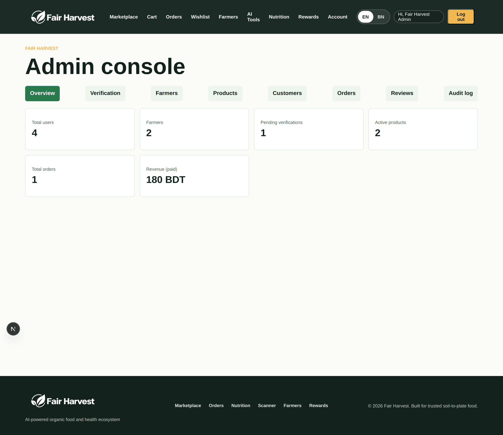
User.status = SUSPENDED হয়ে গেলে POST /auth/login-এ 401 "Invalid email or password" ফেরত আসে। অর্থাৎ তিনি আর login করতে পারেন না।
যদি ব্যবহারকারীর কাছে ইতিমধ্যে একটি বৈধ JWT থাকে, সেটি মেয়াদ (২ ঘণ্টা) শেষ না হওয়া পর্যন্ত কাজ করতেই থাকবে — কারণ প্রতিটি request-এ ডাটাবেসে গিয়ে status দেখা হয় না। এটি stateless JWT-র স্বাভাবিক বৈশিষ্ট্য। সমাধান হতো একটি token blacklist বা প্রতিটি request-এ status যাচাই।
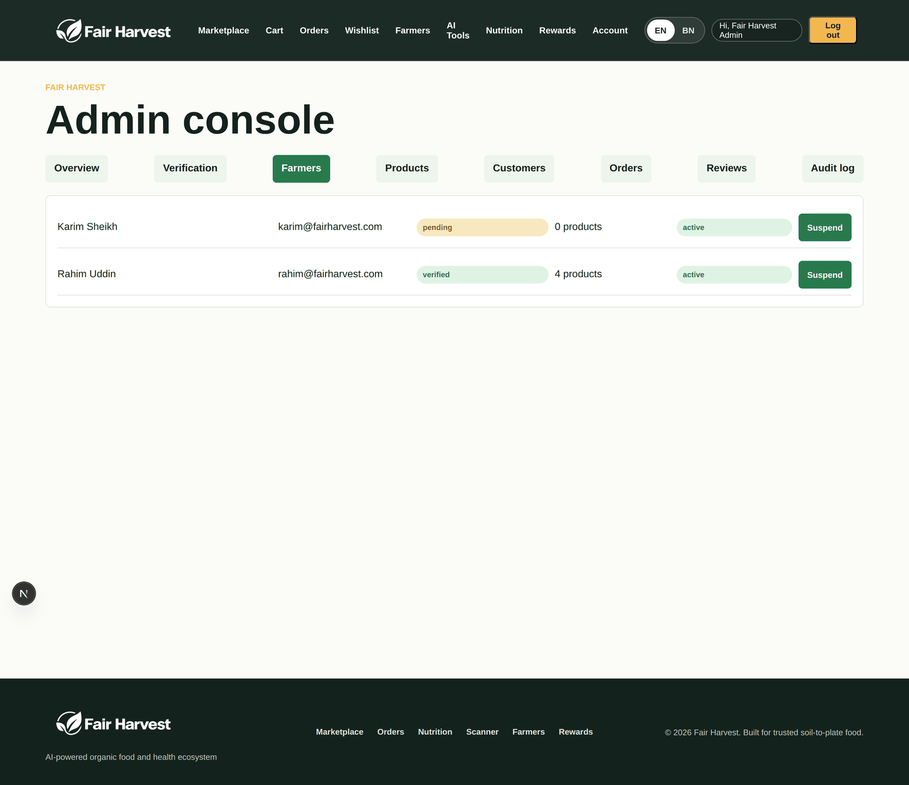
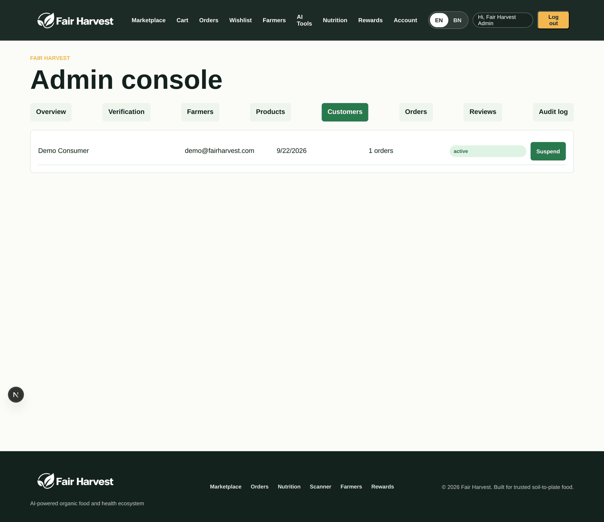
Admin-এর হাতে অনেক ক্ষমতা — কারও অ্যাকাউন্ট বন্ধ করা, কারও review লুকিয়ে ফেলা, কাউকে verified করা। এই ক্ষমতার সাথে জবাবদিহি থাকা দরকার। Audit log সেই জবাবদিহির খাতা: কে, কখন, কার উপর, কী করল — সব লেখা থাকে।
model AuditLog {
id String @id @default(cuid())
actorId String // কে করল (plain string, FK নয়)
actorRole String
action String // যেমন "farmer_verification_approved"
targetType String // "FarmerProfile" | "User" | "Review" | "Product"
targetId String
metadata String? // JSON.stringify করা অতিরিক্ত তথ্য
createdAt DateTime @default(now())
@@index([targetType, targetId])
@@index([createdAt])
}
কোডের কমেন্টেই উত্তরটি লেখা আছে: “an audit record must survive even if the target row is later deleted.” যদি actorId একটি FK হতো, তাহলে সেই admin-এর অ্যাকাউন্ট মুছে গেলে audit সারিটিও cascade-এ মুছে যেত বা লেখা যেত না। অর্থাৎ যে জিনিসটির পুরো উদ্দেশ্যই “প্রমাণ রেখে দেওয়া”, সেটিই হারিয়ে যেত। তাই id গুলো নিছক string snapshot হিসেবে রাখা হয়েছে।
| action | targetType | metadata | কোন route |
|---|---|---|---|
| farmer_verification_approved | FarmerProfile | — | admin/farmers/[id]/verification/approve |
| farmer_verification_rejected | FarmerProfile | — | …/verification/reject |
| farmer_status_updated | FarmerProfile | { account_status } | PATCH admin/farmers/[id] |
| customer_status_updated | User | { status } | PATCH admin/customers/[id] |
| review_moderated | Review | { status } | PATCH admin/reviews/[id] |
| product_archived | Product | { previousStatus, farmerId } | DELETE products/[id] |
শেষেরটি লক্ষণীয় — এটি শুধু admin নয়, কৃষক নিজে archive করলেও লেখা হয়, কারণ route-টি দুজনেরই সাধারণ। তাই actorRole ফিল্ডে FARMER বা ADMIN — যেটি প্রযোজ্য — লেখা থাকে।
| নিয়ম | কেন |
|---|---|
| Audit লেখা কখনো request ব্যর্থ করে না recordAudit()-এর ভিতরে পুরোটা try/catch |
audit টেবিলে সমস্যা হলে একজন কৃষকের verification আটকে যাওয়া উচিত নয়। মূল কাজ আগে, লগ পরে। |
| Audit লেখা হয় সফল হওয়ার পরে | তাহলে যে কাজটি আসলে ঘটেনি (যেমন 403-এ আটকে গেছে) তার কোনো ভুয়া এন্ট্রি থাকবে না |
GET /api/v1/admin/audit-log — শুধু ADMIN, সর্বশেষ take: 200টি, createdAt desc। Response-এ metadata আবার JSON.parse করে object হিসেবে পাঠানো হয়।
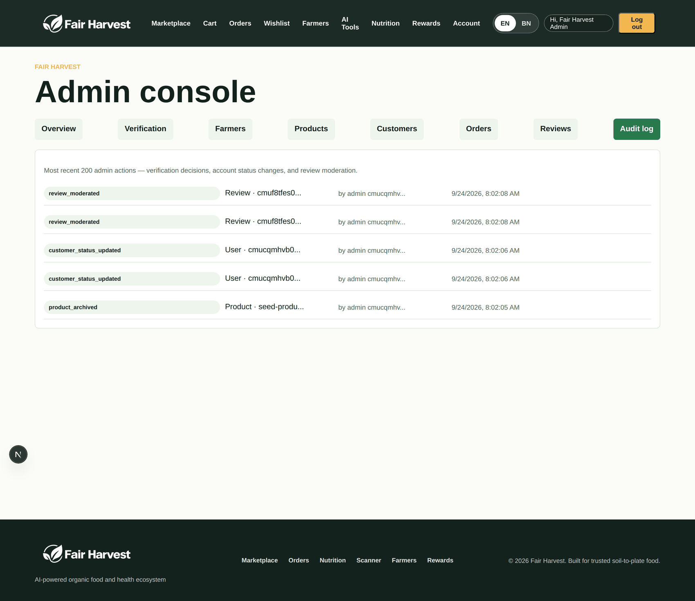
Order status পরিবর্তন · পণ্য সম্পাদনা (PATCH) · পণ্য তৈরি · login (সফল বা ব্যর্থ) · ছবি আপলোড বা মুছে ফেলা · Farmer Card verification জমা দেওয়া (শুধু admin-এর সিদ্ধান্তটি লেখা হয়)। এছাড়া তালিকায় pagination বা filter নেই — শুধু সর্বশেষ ২০০টি।
একই ব্যক্তি অল্প সময়ে অসংখ্যবার একই কাজ করার চেষ্টা করলে সেটি আটকে দেওয়া। উদ্দেশ্য — পাসওয়ার্ড অনুমান করার চেষ্টা (brute force), অসংখ্য ভুয়া অ্যাকাউন্ট তৈরি, আর storage ভরে ফেলা ঠেকানো।
const buckets = new Map(); // key → timestamp[]
function clientKey(request, scope) {
const forwarded = request.headers.get("x-forwarded-for");
const ip = forwarded ? forwarded.split(",")[0].trim() : "unknown";
return `${scope}:${ip}`;
}
export function enforceRateLimit(request, scope, { max = 10, windowMs = 60_000 } = {}) {
const now = Date.now();
const recent = (buckets.get(key) || []).filter(ts => now - ts < windowMs);
if (recent.length >= max) throw new ApiError("Too many requests — please try again shortly", 429);
recent.push(now);
buckets.set(key, recent);
}
“Sliding window” মানে — শেষ ৬০ সেকেন্ডের ভিতরে পড়া timestamp গোনা হয়, ঘড়ির নির্দিষ্ট মিনিট নয়। ফলে মিনিট বদলের মুহূর্তে দ্বিগুণ request পাঠানোর ফাঁক থাকে না।
| Scope | Endpoint | সর্বোচ্চ | সময়সীমা |
|---|---|---|---|
| auth-login | POST /api/v1/auth/login | 10 | 60s |
| auth-register | POST /api/v1/auth/register | 6 | 60s |
| farmer-verify | POST /api/v1/farmers/{id}/verify | 8 | 60s |
| product-image-upload | POST /api/v1/uploads/product-image | 20 | 60s |
| product-archive | DELETE /api/v1/products/{id} | 20 | 60s |
সীমা ছাড়ালে HTTP 429 এবং বার্তা “Too many requests — please try again shortly”।
এটি একটি in-memory ব্যবস্থা — গণনা server process-এর RAM-এ থাকে। Vercel-এর মতো serverless পরিবেশে একাধিক instance চলতে পারে, এবং প্রতিটির নিজস্ব Map থাকবে। তাই বাস্তব production-এ সীমাটি নিখুঁতভাবে কার্যকর নয়। সঠিক সমাধান হতো Redis-এর মতো একটি ভাগাভাগি করা store। কোডে লেখা: “a real multi-instance production deployment would need a shared store (e.g. Redis) instead.”
| ব্যবস্থা | কীভাবে | ফাইল |
|---|---|---|
| পাসওয়ার্ড hashing | bcrypt, cost factor 10; plain text কোথাও রাখা হয় না | lib/server/auth.js |
| JWT signature | HS256, JWT_SECRET দিয়ে; মেয়াদ ২ ঘণ্টা | একই |
| Production-এ secret বাধ্যতামূলক | JWT_SECRET না থাকলে app চালুই হয় না | একই |
| Role-based access | requireRole | একই |
| Ownership (IDOR) যাচাই | requireOwnerOrRole, assertOwnerOrAdmin | একই + route |
| Session থেকে পরিচয় | wishlist, farmer/orders, farmer/earnings — কোথাও client-এর id নেওয়া হয় না | সংশ্লিষ্ট route |
| Input validation | প্রতিটি write-route-এ Zod schema; ব্যর্থ হলে 422 | সব route |
| SQL injection প্রতিরোধ | Prisma সবসময় parameterized query তৈরি করে; কাঁচা SQL শুধু SELECT 1 | app/ready/route.js |
| Identifier masking | NID ও Farmer Card কখনো পুরো পাঠানো হয় না — admin-কেও নয় | mask.js |
| CORS allow-list | ডিফল্ট same-origin; wildcard বা reflected Origin নেই | middleware.js |
| Upload MIME ও আকার যাচাই | তিনটি ফরম্যাট, ৩ MB; byte দুইবার গোনা হয় | imageValidation.js |
| SVG নিষিদ্ধ | XSS ঝুঁকির কারণে ইচ্ছাকৃতভাবে বাদ | একই |
| Path traversal প্রতিরোধ | isSafeStorageKey() + প্রকৃত path resolve করে root-এর ভিতরে আছে কি না যাচাই | localDiskProvider.js |
| Download-এ nosniff | X-Content-Type-Options: nosniff | uploads/[...key]/route.js |
| Rate limiting | ৫টি endpoint-এ | rateLimit.js |
| Audit trail | ৬ ধরনের কাজ | audit.js |
| Error message সমান রাখা | ভুল ইমেইল ও ভুল পাসওয়ার্ড — দুটোতেই একই বার্তা | auth/login/route.js |
| Internal error লুকানো | handleRoute() অপ্রত্যাশিত ত্রুটিতে শুধু “Internal server error” পাঠায়, stack trace নয় | respond.js |
| Admin self-registration বন্ধ | register schema-তে admin নেই | auth/register/route.js |
| Database constraint | unique ও foreign key দিয়ে ডাটাবেস স্তরেই নিয়ম প্রয়োগ | schema.prisma |
| ডাটাবেস | PostgreSQL (production-এ Neon) | মডেল সংখ্যা | ১৫ |
| enum সংখ্যা | ১৩ | Foreign key | ১৮ |
| Unique index | ৯ | সাধারণ index | ১২ |
| Primary key | সবগুলোই String @id @default(cuid()) | Migration | ১টি (20260922135451_init) |
(১) URL-এ /marketplace/7 দেখলে যে কেউ বুঝে যায় মোট কতগুলো পণ্য আছে এবং ১, ২, ৩ … করে সব দেখে ফেলতে পারে (enumeration)। (২) cuid একাধিক server থেকে একসাথে তৈরি করলেও সংঘর্ষ হয় না। (৩) id ক্লায়েন্টেও তৈরি করা যায়, ডাটাবেসের অপেক্ষা না করে।
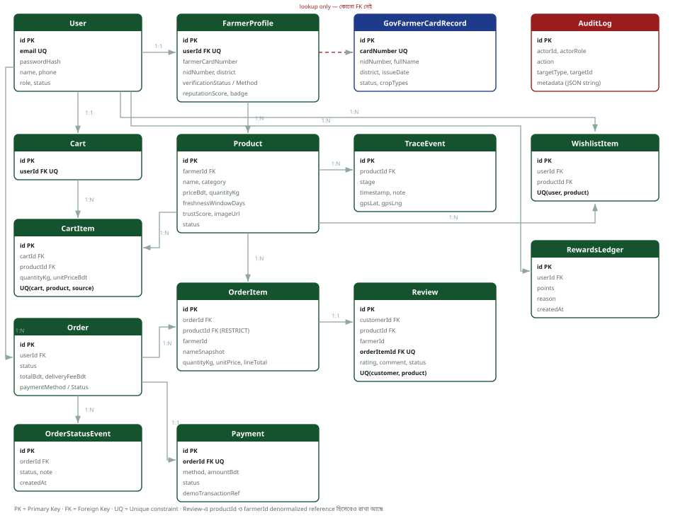
| মডেল | উদ্দেশ্য | গুরুত্বপূর্ণ ফিল্ড | সম্পর্ক |
|---|---|---|---|
| User | সব ধরনের অ্যাকাউন্টের ভিত্তি — তিন রোলই এখানে | email @unique, passwordHash, role, status | 1:1 FarmerProfile · 1:1 Cart · 1:N Order, Review, WishlistItem, RewardsLedger |
| FarmerProfile | কৃষক-নির্দিষ্ট তথ্য User থেকে আলাদা রাখা | userId @unique, verificationStatus, reputationScore, badge | 1:1 User (Cascade) · 1:N Product · verifiedByAdmin → User |
| GovFarmerCardRecord | সরকারি রেজিস্ট্রির অনুকরণ (demo) | cardNumber @unique, nidNumber, status | কোনো relation নেই — ইচ্ছাকৃত |
| Product | বিক্রয়যোগ্য পণ্য | priceBdt, quantityKg, status, imageUrl | N:1 FarmerProfile · 1:N CartItem, OrderItem, TraceEvent, Review, WishlistItem |
| Cart | প্রতি ব্যবহারকারীর একটিমাত্র ঝুড়ি | userId @unique | 1:1 User · 1:N CartItem |
| CartItem | ঝুড়ির একটি সারি | quantityKg, unitPriceBdt, source | @@unique([cartId, productId, source]) |
| Order | একটি সম্পূর্ণ ক্রয় | status, totalBdt, ঠিকানা, paymentStatus | N:1 User · 1:N OrderItem, OrderStatusEvent · 1:1 Payment |
| OrderItem | order-এর একটি লাইন — নাম ও দাম snapshot সহ | nameSnapshot, unitPriceBdt, lineTotalBdt, farmerId | N:1 Order (Cascade) · N:1 Product (RESTRICT) · 1:1 Review |
| OrderStatusEvent | status পরিবর্তনের অপরিবর্তনীয় ইতিহাস | status, note, createdAt | N:1 Order (Cascade) |
| Payment | লেনদেনের রেকর্ড (demo) | orderId @unique, demoTransactionRef, paidAt | 1:1 Order |
| TraceEvent | মাটি-থেকে-প্লেট ইতিহাস | stage, timestamp, gpsLat/Lng | N:1 Product (Cascade) |
| Review | ক্রয়-নির্ভর মূল্যায়ন | rating, orderItemId @unique, status | N:1 User, Product · 1:1 OrderItem (Restrict) · @@unique([customerId, productId]) |
| WishlistItem | পছন্দের তালিকা | @@unique([userId, productId]) | N:1 User, Product (Cascade) |
| RewardsLedger | পয়েন্টের খতিয়ান | points, reason | N:1 User (Cascade) |
| AuditLog | admin কাজের প্রমাণ | action, targetType/Id, metadata | কোনো FK নেই — ইচ্ছাকৃত |
| Enum | মান |
|---|---|
| Role | CONSUMER · FARMER · ADMIN |
| UserStatus | ACTIVE · SUSPENDED |
| VerificationStatus | PENDING · VERIFIED · REJECTED |
| VerificationMethod | DEMO_REGISTRY · OFFICIAL_API · MANUAL |
| GovCardStatus | ACTIVE · REVOKED |
| ProductCategory | vegetable · fruit · grain · herb (ছোট হরফে — enum-গুলোর মধ্যে একমাত্র ব্যতিক্রম) |
| ProductStatus | ACTIVE · OUT_OF_STOCK · ARCHIVED |
| CartItemSource | DIRECT · MEAL_PLAN · PRESCRIPTION |
| OrderStatus | PENDING · CONFIRMED · SHIPPED · DELIVERED · CANCELLED |
| PaymentMethod | COD · DEMO_CARD |
| PaymentStatus | PENDING · PAID · FAILED (FAILED কোথাও বসানো হয় না) |
| TraceStage | PLANTED · HARVESTED · LAB_TESTED · PACKAGED · SHIPPED · LISTED |
| ReviewStatus | PUBLISHED · HIDDEN |
| সম্পর্ক | আচরণ | কেন |
|---|---|---|
| User → FarmerProfile | Cascade | ব্যবহারকারী না থাকলে তার profile অর্থহীন |
| User → Cart, WishlistItem, RewardsLedger | Cascade | ব্যক্তিগত, অন্য কারও কাজে লাগে না |
| FarmerProfile → Product | Cascade | কৃষক না থাকলে তার listing থাকা উচিত নয় |
| Order → OrderItem, OrderStatusEvent, Payment | Cascade | order-এর অংশ, আলাদা অর্থ নেই |
| Product → OrderItem | RESTRICT
(ডিফল্ট) |
সবচেয়ে গুরুত্বপূর্ণ: order থাকলে পণ্য মোছা যাবে না — এটিই soft delete-কে বাধ্যতামূলক করে তোলে |
| OrderItem → Review | Restrict | যে ক্রয়ের ভিত্তিতে review হয়েছে, সেটি মুছে গেলে review-এর প্রমাণ হারাত |
| Order → User | ডিফল্ট (Restrict) | order আছে এমন ব্যবহারকারী মোছা যাবে না — হিসাব রক্ষা |
| Index | যে query-কে দ্রুত করে |
|---|---|
| User @@index([role]) | admin-এর “সব কৃষক” / “সব ক্রেতা” তালিকা |
| FarmerProfile @@index([verificationStatus]) | verification queue ও pending গণনা |
| Product @@index([category]) | marketplace-এর category filter |
| Product @@index([status]) | public marketplace-এর status = ACTIVE filter |
| Order @@index([userId]) | “আমার order” তালিকা |
| OrderItem @@index([farmerId]) | কৃষকের order ও earnings |
| Review @@index([productId]), ([farmerId]) | পণ্যের ও কৃষকের review |
| WishlistItem @@index([userId]) | “আমার wishlist” |
| AuditLog @@index([targetType, targetId]), ([createdAt]) | নির্দিষ্ট বস্তুর ইতিহাস; এবং সাম্প্রতিক ২০০টি |
| সিদ্ধান্ত | ব্যাখ্যা |
|---|---|
| স্বাভাবিকীকরণ মানা হয়েছে | Cart/CartItem, Order/OrderItem, User/FarmerProfile — প্রতিটি ধারণা আলাদা টেবিলে, পুনরাবৃত্তি নেই |
| ইচ্ছাকৃত denormalization ১ OrderItem.nameSnapshot ও দাম |
ঐতিহাসিক নির্ভুলতার জন্য — কৃষক পরে নাম/দাম বদলালেও পুরোনো রসিদ বদলাবে না |
| ইচ্ছাকৃত denormalization ২ OrderItem.farmerId |
কৃষকের order query-তে Product হয়ে join করা লাগে না — সরাসরি index ব্যবহার হয় |
| ইচ্ছাকৃত denormalization ৩ Review.farmerId |
কৃষকের সব review একবারে আনা যায়, প্রতিটি product-এ join ছাড়াই |
| গণনা করা মান সংরক্ষণ FarmerProfile.reputationScore |
প্রতিবার গণনা করলে marketplace-এর প্রতিটি কার্ডে বহু query লাগত; তাই ঘটনার পরে একবার গণনা করে লিখে রাখা হয় |
ORM (Object-Relational Mapping) — যে স্তরটি ডাটাবেসের সারি (row) আর কোডের object-এর মধ্যে অনুবাদক হিসেবে কাজ করে। হাতে SQL লেখার বদলে আমরা লিখি prisma.product.findMany({ where: { status: "ACTIVE" } }), আর Prisma সেটিকে নিরাপদ SQL-এ রূপান্তর করে।
| সুবিধা | ব্যাখ্যা |
|---|---|
| Single source of truth | একটি schema.prisma থেকেই ডাটাবেস, migration ও TypeScript টাইপ — সব তৈরি হয় |
| SQL injection প্রতিরোধ | Prisma সবসময় parameterized query তৈরি করে; ব্যবহারকারীর লেখা কখনো SQL-এর অংশ হয় না |
| Auto-complete ও টাইপ | ভুল ফিল্ডের নাম লিখলে সম্পাদকেই ধরা পড়ে |
| Migration ইতিহাস | প্রতিটি schema পরিবর্তন একটি SQL ফাইল হিসেবে git-এ সংরক্ষিত |
| Relation query | include: { farmer: { include: { user: true } } } — জটিল join এক লাইনে |
datasource db {
provider = "postgresql"
url = env("DATABASE_URL") // pooled — অ্যাপ্লিকেশন চলার সময়
directUrl = env("DIRECT_URL") // direct — শুধু migration-এর সময়
}
| Variable | সংযোগের ধরন | কে ব্যবহার করে ও কেন |
|---|---|---|
| DATABASE_URL | pooled (Neon-এ -pooler host) | Serverless function ক্ষণস্থায়ী ও অসংখ্য। প্রত্যেকে নিজের সংযোগ খুললে PostgreSQL-এর সীমা ফুরিয়ে যেত। Pooler কয়েকটি সংযোগ ভাগ করে দেয়। |
| DIRECT_URL | direct (pooler ছাড়া) | prisma migrate DDL চালায় (CREATE TABLE ইত্যাদি), যার জন্য একটি স্থায়ী session দরকার — pooler সেটি দিতে পারে না। |
// lib/server/db.js const globalForPrisma = globalThis; export const prisma = globalForPrisma.__fairHarvestPrisma || new PrismaClient(); if (process.env.NODE_ENV !== "production") globalForPrisma.__fairHarvestPrisma = prisma;
Next.js development-এ hot-reload হলে module আবার লোড হয়। প্রতিবার new PrismaClient() হলে কয়েক মিনিটেই ডাটাবেসের সংযোগ-সীমা ফুরিয়ে যেত। তাই client-টি globalThis-এ রেখে পুনর্ব্যবহার করা হয়।
প্রজেক্টে একটিমাত্র migration আছে: prisma/migrations/20260922135451_init/migration.sql। এটি সম্পূর্ণ PostgreSQL SQL — ১৩টি CREATE TYPE, ১৫টি CREATE TABLE, ৯টি unique index, ১২টি index এবং ১৮টি foreign key। migration_lock.toml-এ লেখা provider = "postgresql"।
| কমান্ড | কোথায় চলে | কী করে |
|---|---|---|
| prisma migrate dev | ডেভেলপমেন্ট | schema-র পরিবর্তন দেখে নতুন migration ফাইল তৈরি করে ও প্রয়োগ করে |
| prisma migrate deploy | production | শুধু যে migration এখনো প্রয়োগ হয়নি সেগুলো চালায়; নতুন ফাইল তৈরি করে না, কিছু মোছেও না |
| prisma generate | উভয় | schema থেকে Prisma Client কোড তৈরি করে |
| prisma db seed | ডেভেলপমেন্ট/ডেমো | prisma/seed.mjs চালায় |
Vercel-এর build কমান্ডেই migration যুক্ত করা আছে, তাই deploy করলেই ডাটাবেস হালনাগাদ হয়ে যায়:
"build": "prisma generate && prisma migrate deploy && next build"
prisma/seed.mjs তৈরি করে: ৮টি Gov Farmer Card, ৪ জন ব্যবহারকারী, ২টি farmer profile, ২টি পণ্য, ৬টি trace event এবং ১টি সম্পূর্ণ DELIVERED order (payment ও reward সহ)।
প্রতিটি রেকর্ড upsert বা অস্তিত্ব-যাচাই দিয়ে তৈরি হয়, তাই বারবার চালালেও ডেটা দ্বিগুণ হয় না। একটি বিশেষ ক্ষেত্র সমাধান করতে হয়েছিল:
// TraceEvent-এর কোনো স্বাভাবিক unique key নেই, তাই upsert করা যায় না।
// দ্বিতীয়বার seed চালালে প্রতিটি ধাপ দুইবার দেখা যেত।
const existing = await prisma.traceEvent.findFirst({
where: { productId: spinach.id, stage: step.stage } });
if (existing) continue;
| রোল | ইমেইল | পাসওয়ার্ড | বিশেষত্ব |
|---|---|---|---|
| Admin | admin@fairharvest.com | Admin123! | সম্পূর্ণ admin console |
| Farmer (verified) | rahim@fairharvest.com | Farmer123! | BD-FARM-0001 দিয়ে আগেই verified; ২টি পণ্য আছে |
| Farmer (pending) | karim@fairharvest.com | Farmer123! | কার্ড রেজিস্ট্রিতে নেই (BD-FARM-9999) — manual review পথ দেখানোর জন্য |
| Consumer | demo@fairharvest.com | FairHarvest123 | একটি DELIVERED order আছে → review দিতে পারে |
Rahim (verified) আর Karim (pending) — একই dashboard দুজনের কাছে সম্পূর্ণ আলাদা দেখায়। এটিই verification gate-এর সবচেয়ে ভালো লাইভ প্রমাণ (চিত্র 28 ও 29 তুলনা করুন)।
| নীতি | বিস্তারিত |
|---|---|
| Versioned base path | সব endpoint /api/v1/-এর নিচে; ভবিষ্যতে v2 যোগ করলেও পুরোনো client ভাঙবে না |
| File-system routing | ফোল্ডারের পথই URL। app/api/v1/cart/[userId]/items/route.js → /api/v1/cart/:userId/items |
| HTTP method = function | একই ফাইলে export async function GET / POST / PATCH / DELETE |
| একটিই response খাম | { success, data, message } — সব route-এ একই |
| Snake_case বাইরে, camelCase ভিতরে | API-তে price_bdt, ডাটাবেসে priceBdt; অনুবাদ করে serializers.js |
| Serializer স্তর | Prisma model কখনো সরাসরি পাঠানো হয় না — তাহলে passwordHashও চলে যেত |
// lib/server/respond.js — সব route-এর সাধারণ মোড়ক
export function ok(data, { message = "OK", status = 200 } = {}) {
return NextResponse.json({ success: true, data, message }, { status });
}
export async function handleRoute(fn) {
try { return await fn(); }
catch (error) {
if (error instanceof ApiError) return fail(error.message, { status: error.status });
console.error(error);
return fail("Internal server error", { status: 500 }); // বিস্তারিত ফাঁস করা হয় না
}
}
| মোট route ফাইল | ৫৪ (app/api/v1-এ ৫১ + root-এ ৩) |
| মোট HTTP method handler | ৬৪ — GET ৩১ · POST ২৩ · PATCH ৬ · DELETE ৪ |
| OpenAPI নথি | GET /openapi.json (হাতে লেখা সারাংশ) |
সারণি ১ — Authentication
| Method | Endpoint | Auth | Request | ডাটাবেসে প্রভাব |
|---|---|---|---|---|
| POST | /auth/register | নেই · ৬/মিনিট | {name, email, password, role} | User তৈরি (+ farmer হলে FarmerProfile) |
| POST | /auth/login | নেই · ১০/মিনিট | {email, password} | কিছু লেখা হয় না; JWT ফেরত |
| GET | /auth/me | যেকোনো login | — | শুধু পড়া |
সারণি ২ — কৃষক ও যাচাই
| Method | Endpoint | Auth | কাজ |
|---|---|---|---|
| POST | /farmers/{farmerId}/verify | মালিক বা ADMIN · ৮/মিনিট | Farmer Card যাচাই; profile ও reputation আপডেট |
| GET | /farmers/{farmerId}/verification-status | মালিক বা ADMIN | বর্তমান status |
| GET | /farmers/{farmerId}/score | public | reputation ও breakdown (কিছু লেখে না) |
| GET | /farmers/{farmerId}/profile | public | profile + active পণ্য + ২০টি review (masked card) |
| GET | /farmer/orders | FARMER | শুধু নিজের order item |
| GET | /farmer/earnings | FARMER | বিক্রির সারাংশ (payout নয়) |
সারণি ৩ — পণ্য ও আপলোড
| Method | Endpoint | Auth | কাজ |
|---|---|---|---|
| GET | /products | public | তালিকা; farmer_id ছাড়া হলে শুধু ACTIVE |
| POST | /products | VERIFIED farmer বা ADMIN | নতুন পণ্য (201) |
| GET | /products/{productId} | public | বিস্তারিত |
| PATCH | /products/{productId} | মালিক বা ADMIN | আংশিক আপডেট; পুরোনো ছবি মুছে ফেলে |
| DELETE | /products/{productId} | মালিক বা ADMIN · ২০/মিনিট | Archive (soft delete) + audit |
| GET | /products/{productId}/scores | public | eco/health/pesticide — trustScore থেকে সূত্রে বের করা derived |
| POST | /products/verify | নেই | seller-history heuristic; ডাটাবেসে কিছুই লেখে না stateless |
| POST | /uploads/product-image | VERIFIED farmer বা ADMIN · ২০/মিনিট | multipart ছবি → { image_url } |
| GET | /uploads/product-image | নেই | অনুমোদিত MIME ও আকারের সীমা |
| GET | /uploads/{...key} | public | local provider-এর ফাইল পরিবেশন (object হলে 404) |
সারণি ৪ — Cart, Order ও Payment
| Method | Endpoint | Auth | কাজ |
|---|---|---|---|
| GET | /cart/{userId} | মালিক/ADMIN | cart + subtotal |
| DELETE | /cart/{userId} | মালিক/ADMIN | সব item মুছে ফেলা |
| POST | /cart/{userId}/items | মালিক/ADMIN | যোগ বা পরিমাণ বৃদ্ধি (শুধু ACTIVE পণ্য) |
| PATCH | /cart/{userId}/items/{itemId} | মালিক/ADMIN | পরিমাণ বদল |
| DELETE | /cart/{userId}/items/{itemId} | মালিক/ADMIN | item মুছে ফেলা |
| POST | /orders/{userId}/checkout | মালিক/ADMIN | Transaction: Order+Items+Payment+Reward, stock কমানো, cart খালি |
| GET | /orders/{userId} | মালিক/ADMIN | order তালিকা |
| GET | /orders/detail/{orderId} | order-এর মালিক বা ADMIN | বিস্তারিত + timeline + payment |
| PATCH | /orders/{orderId}/status | ADMIN বা সংশ্লিষ্ট FARMER | status বদল + event; DELIVERED/CANCELLED হলে reputation পুনর্গণনা |
সারণি ৫ — Review, Wishlist, Trace, Rewards
| Method | Endpoint | Auth | কাজ |
|---|---|---|---|
| GET | /reviews?product_id= | farmer_id= | public | শুধু PUBLISHED + গড় ও সংখ্যা |
| POST | /reviews | CONSUMER + DELIVERED থাকতে হবে | review তৈরি + reputation পুনর্গণনা |
| GET | /wishlist | যেকোনো login | নিজের তালিকা |
| POST | /wishlist | যেকোনো login | upsert |
| GET | /wishlist/{productId} | যেকোনো login | { wishlisted } |
| DELETE | /wishlist/{productId} | যেকোনো login | সরিয়ে ফেলা |
| GET | /trace/{productId} | public | ছয় ধাপের timeline |
| POST | /trace/{productId} | মালিক farmer বা ADMIN | নতুন TraceEvent |
| GET | /users/{userId}/rewards | মালিক/ADMIN | পয়েন্ট, badge, সাম্প্রতিক কার্যক্রম |
| GET | /farms/nearby | নেই | শীর্ষ ১০ verified কৃষক; distance_km তালিকার ক্রম থেকে বানানো দূরত্ব বাস্তব নয় |
সারণি ৬ — Admin (সবগুলোতেই requireRole(["ADMIN"]))
| Method | Endpoint | কাজ |
|---|---|---|
| GET | /admin/metrics | ৬টি platform সংখ্যা |
| GET | /admin/farmers | সব কৃষক (masked id সহ) |
| PATCH | /admin/farmers/{farmerId} | account suspend/reinstate + audit |
| GET | /admin/farmers/verifications | pending queue (FIFO) |
| POST | /admin/farmers/{farmerId}/verification/approve | VERIFIED + audit |
| POST | /admin/farmers/{farmerId}/verification/reject | REJECTED + audit |
| GET | /admin/products | সব status; search/category/status/farmer filter |
| GET | /admin/customers | সব ক্রেতা + order সংখ্যা |
| PATCH | /admin/customers/{userId} | suspend/reinstate + audit |
| GET | /admin/orders | সব order + ক্রেতার তথ্য |
| GET | /admin/reviews | সব review (hidden সহ) |
| PATCH | /admin/reviews/{reviewId} | hide/republish + reputation + audit |
| GET | /admin/audit-log | সর্বশেষ ২০০টি কাজ |
সারণি ৭ — Heuristic / demo endpoint কোনোটিই প্রকৃত AI নয়
| Method | Endpoint | বাস্তবে কী করে |
|---|---|---|
| POST | /nutrition/recommend | Mifflin-St Jeor-ধাঁচের ক্যালরি সূত্র + রোগভিত্তিক খাবারের স্থির তালিকা + ৩টি meal combo ঘুরিয়ে ৭ দিন |
| POST | /nutrition/log | একমাত্র যেটি ডাটাবেসে লেখে — RewardsLedger-এ +৮ পয়েন্ট |
| POST | /scanner/analyze | ছবি বিশ্লেষণ করে না; পণ্যের নামের hash থেকে সংখ্যা বানায় |
| POST | /voice/upload | একটি নির্দিষ্ট বাংলা বাক্য ফেরত দেয়; কোনো speech-to-text নেই |
| POST | /health/predict | glucose ও BP থেকে একটি রৈখিক সূত্র |
| POST | /dna/diet | দুটি if — lactose ও gluten |
| POST | /soil/nutrients | pH, nitrogen, iron থেকে গড় |
| POST | /waste/donate | kg × 2.4 = meals, kg × 1.9 = CO₂ kg |
| POST | /doctors/consultations/book | শুধু {status:"requested"} echo করে |
| POST | /meal-planner/auto-delivery | শুধু {status:"scheduled"} echo করে |
সারণি ৮ — অবকাঠামো
| Method | Endpoint | কাজ |
|---|---|---|
| GET | /health | Liveness — শুধু “ok” |
| GET | /ready | Readiness — SELECT 1 চালিয়ে DB সংযোগ যাচাই; ব্যর্থ হলে 503 |
| GET | /openapi.json | OpenAPI 3.0.3 সারাংশ |
(১) /openapi.json-এ /orders/{orderId}/status POST হিসেবে লেখা, কিন্তু কোডে এটি PATCH। (২) SDK-তে দুটি method আছে যার বিপরীতে কোনো route নেই: oauth() (/auth/oauth) এবং pushPrescriptionCart() (/cart/{userId}/prescription) — এগুলো ডাকলে 404 আসবে।
Next.js-এর App Router-এ app/-এর প্রতিটি ফোল্ডার একটি URL, আর সেই ফোল্ডারের page.js ফাইলটিই সেই পেজ। [productId]-এর মতো বর্গাকার বন্ধনী মানে dynamic segment।
| ফাইল | URL / ভূমিকা |
|---|---|
| app/layout.js | মূল কাঠামো — <html>, Navbar, Footer, LanguageRuntime |
| app/page.js | / — হোমপেজ |
| app/marketplace/page.js | /marketplace |
| app/marketplace/[productId]/page.js | /marketplace/:id |
| app/farmer/layout.js | /farmer/*-এ RoleGuard মোড়ক |
| app/admin/layout.js | /admin/*-এ RoleGuard + AdminNav (login বাদে) |
| app/account/layout.js | /account-এ consumer guard |
| app/globals.css | সম্পূর্ণ CSS — কোনো CSS framework ব্যবহার করা হয়নি |
| ধরন | কীভাবে চেনা যায় | এই প্রজেক্টে কোথায় |
|---|---|---|
| Server Component (ডিফল্ট) |
ফাইলের শুরুতে "use client" নেই; প্রায়ই async function | app/page.js (হোম) · marketplace/[productId] · trace/[productId] · farmers/[farmerId] |
| Client Component | প্রথম লাইনে "use client" | যেখানেই useState, useEffect বা ক্লিক লাগে — marketplace তালিকা, cart, checkout, সব dashboard, সব form |
কেন এই ভাগ? Server Component-এর JavaScript ব্রাউজারে পাঠানোই হয় না, তাই পেজ হালকা ও দ্রুত হয় এবং HTML-এ সব লেখা থাকায় SEO ভালো হয়। কিন্তু সেখানে state বা event handler রাখা যায় না — সেজন্যই interaction-নির্ভর অংশগুলো client component।
| Component | দায়িত্ব |
|---|---|
| ui/Navbar.js | শীর্ষ নেভিগেশন, ভাষা toggle, login/logout, মোবাইল hamburger |
| ui/Footer.js | তিন অংশের footer |
| ui/BrandLogo.js | লোগোর একমাত্র উৎস — header ও footer দুটোই এটিই ব্যবহার করে |
| RoleGuard.js | রোল অনুযায়ী পেজ রক্ষা (UI স্তর) |
| auth/AuthForm.js | login ও register — তিনটি দরজাতেই একই form |
| auth/useSession.js | localStorage থেকে session পড়া; custom event দিয়ে সব component-কে জানানো |
| cart/useCart.js | cart-এর সব কাজ এক hook-এ |
| cart/AddToCartButton.js | idle → loading → “Added” অবস্থা |
| products/ProductImage.js | ছবি বা fallback টাইল — সব পেজে একই আচরণ |
| products/ProductImageUploader.js | আপলোড, preview, Replace/Remove |
| products/FarmerProductRow.js | কৃষকের পণ্যের সারি + inline edit + archive |
| reviews/ReviewsSection.js | review তালিকা ও form |
| wishlist/WishlistButton.js | হার্ট আইকন toggle |
| orders/StatusTimeline.js | order-এর ধাপ দেখানো |
| trace/TraceEventForm.js, FarmerTraceControls.js | trace event যোগ করার form |
| admin/AdminNav.js | admin-এর আটটি ট্যাব |
| i18n/LanguageRuntime.js, LanguageToggle.js | বাংলা/ইংরেজি পরিবর্তন |
Redux, Zustand বা Context API — কোনো state library ব্যবহার করা হয়নি। তিনটি সহজ কৌশলই যথেষ্ট ছিল:
// lib/api.js — একটিই request helper
const API_ROOT = process.env.NEXT_PUBLIC_API_URL || "/api/v1";
async function request(path, options = {}) {
const headers = { "Content-Type": "application/json", ...(options.headers || {}) };
if (typeof window !== "undefined") {
const token = window.localStorage.getItem("fairHarvestToken");
if (token) headers.Authorization = `Bearer ${token}`; // স্বয়ংক্রিয়ভাবে যুক্ত
}
const response = await fetch(`${API_ROOT}${path}`, { ...options, headers, cache: "no-store" });
const body = await response.json().catch(() => ({ success: false, message: "Invalid API response" }));
if (!response.ok) {
if (response.status === 401 && typeof window !== "undefined") window.location.href = "/auth";
throw new Error(body.message || "Request failed");
}
return body.data; // খাম খুলে শুধু data ফেরত
}
এই একটিমাত্র ফাংশনের উপর ৫০-এর বেশি নামকরা helper তৈরি করা হয়েছে (getProducts, checkout, archiveProduct …), তাই কোনো component-কে কখনো URL বা header নিয়ে ভাবতে হয় না।
cache: "no-store" গুরুত্বপূর্ণ — নাহলে Next.js পুরোনো উত্তর cache করে রাখত এবং cart বা order-এর সংখ্যা পুরোনো দেখাত।
কোনো CSS framework নেই; app/globals.css-এ হাতে লেখা media query ব্যবহার করা হয়েছে। প্রধান breakpoint: 767px (মোবাইল), 768–1280px (ট্যাবলেট)। Header-এর উচ্চতা একটি CSS variable (--header-h) দিয়ে নিয়ন্ত্রিত, আর লোগোর আকার clamp(36px, 11vw, 56px) দিয়ে পর্দার সাথে মানিয়ে নেয়।
Browser
│ fetch("/api/v1/products", { method:"POST", Authorization:"Bearer …" })
▼
middleware.js ─────────── CORS: Origin অনুমোদিত তালিকায় আছে কি?
▼
app/api/v1/products/route.js → export async function POST(request)
▼
handleRoute(async () => { ← সব ত্রুটি এখানে ধরা পড়ে
requireUser(request) ← ১. তুমি কে? (401)
enforceRateLimit(...) ← ২. খুব বেশি বার? (429)
schema.safeParse(body) ← ৩. ইনপুট ঠিক আছে? (422)
prisma.farmerProfile.findUnique ← ৪. বস্তুটি আছে? (404)
ownership / verification check ← ৫. অনুমতি আছে? (403)
prisma.product.create(...) ← ৬. আসল কাজ
recordAudit(...) ← ৭. প্রমাণ রাখা (ঐচ্ছিক)
return ok(toPublicProduct(...)) ← ৮. serializer দিয়ে উত্তর
})
▼
{ success: true, data: {...}, message: "Product listed" } HTTP 201
এই ক্রমটি প্রায় সব route-এ একই, এবং ক্রমটি ইচ্ছাকৃত — সবচেয়ে সস্তা যাচাই আগে। কে তুমি (টোকেন পড়া, কোনো DB call নেই) → কতবার (memory lookup) → ইনপুট (CPU) → তারপর সবচেয়ে ব্যয়বহুল ডাটাবেস query।
| ফাইল | গুরুত্বপূর্ণ ফাংশন | কেন আছে |
|---|---|---|
| lib/server/db.js | prisma | একটিই Prisma Client, hot-reload-এ পুনর্ব্যবহার |
| lib/server/auth.js | hashPassword, verifyPassword, signToken, decodeToken, requireUser, requireRole, requireOwnerOrRole | authentication ও authorization-এর একমাত্র উৎস |
| lib/server/respond.js | ok, fail, handleRoute | একক response আকার ও কেন্দ্রীয় ত্রুটি ব্যবস্থাপনা |
| lib/server/apiError.js | ApiError | ইচ্ছাকৃতভাবে next/server-মুক্ত, যাতে rateLimit-এর মতো module টেস্ট করা যায় |
| lib/server/rateLimit.js | enforceRateLimit | অপব্যবহার প্রতিরোধ |
| lib/server/audit.js | recordAudit | best-effort লগ, কখনো request ব্যর্থ করে না |
| lib/server/mask.js | maskIdentifier | NID ও card নম্বর কখনো পুরো না পাঠানো |
| lib/server/serializers.js | toPublicUser, toPublicProduct, toPublicCart, toPublicOrder, toAdminFarmer, toPublicTrace… | ডাটাবেস মডেল → API আকার; passwordHash কখনো বাইরে যায় না |
| lib/server/reputation.js | computeReputation, badgeForScore | pure — টেস্টযোগ্য |
| lib/server/reputationSync.js | getFarmerReputationBreakdown, recomputeFarmerReputation | একটি শুধু পড়ে, অন্যটি লেখে — GET route-এ যেন কিছু লেখা না হয় |
| lib/server/reviews.js + reviewEligibility.js | getReviewEligibility, decideEligibility | DB অংশ ও সিদ্ধান্ত অংশ আলাদা |
| lib/server/earnings.js | summarizeEarnings | pure; “payout” শব্দ ব্যবহার না করা নিশ্চিত করে |
| lib/server/verification/ | verifyFarmerCard | provider abstraction |
| lib/server/storage/ | putObject, getObject, deleteObject, storageKeyFromUrl | একই ধরনের provider abstraction |
| lib/server/heuristics/nutrition.js | computeDailyCalories… | demo পুষ্টি সূত্র |
| সুবিধা | ব্যাখ্যা |
|---|---|
| একটিই deploy | একবার push করলেই frontend ও backend দুটোই হালনাগাদ হয় |
| CORS সমস্যা নেই | একই origin, তাই ব্রাউজারের cross-origin বাধা নেই |
| কোড ভাগাভাগি | serializers.js-এর আকার frontend-ও ব্যবহার করতে পারে |
| এক জায়গায় environment variable | দুটি প্রজেক্টে দুবার সেট করতে হয় না |
| খরচ | একটি Vercel প্রজেক্ট, একটি ডাটাবেস |
অসুবিধা (সৎভাবে): frontend ও backend আলাদাভাবে scale করা যায় না, এবং অন্য কোনো ক্লায়েন্ট (যেমন মোবাইল অ্যাপ) এই একই deployment-এর উপর নির্ভরশীল হয়ে পড়ে। সেই কারণেই আলাদা SDK প্যাকেজটি রাখা হয়েছে — API-র contract যাতে স্পষ্ট থাকে।
প্রতিটি প্রবাহ একই ছাঁচে: ব্যবহারকারীর কাজ → Frontend → API → যাচাই → ডাটাবেস/Storage → উত্তর → UI।
Form (/auth/farmer, mode=register) → register() → POST /auth/register
→ rate limit 6/min → Zod (role ∈ consumer|farmer) → email unique? (409 না হলে)
→ bcrypt.hash(password, 10) → User.create + FarmerProfile.create({})
→ signToken() → { access_token, user } → localStorage → /farmer/dashboard
Form (/farmer/verify) → verifyFarmerCard() → POST /farmers/{id}/verify
→ rate limit 8/min → requireOwnerOrRole → Zod
→ verifyFarmerCard() → demoRegistryProvider → GovFarmerCardRecord lookup
→ FarmerProfile.update(status/method/verifiedAt) → recomputeFarmerReputation()
→ getMe() → localStorage সতেজ → dashboard unlock
/admin/verification → approve() → POST /admin/farmers/{id}/verification/approve
→ requireRole(["ADMIN"]) → FarmerProfile.update(VERIFIED, MANUAL, verifiedByAdminId)
→ recordAudit("farmer_verification_approved") → load() → queue রিফ্রেশ
file input → uploadProductImage(file) → POST /uploads/product-image (multipart)
→ requireUser → rate limit 20/min → VERIFIED farmer? → validateImageUpload(MIME, size)
→ byte দ্বিতীয়বার যাচাই → buildStorageKey(products/<uuid>.jpg)
→ putObject() → [local disk | Vercel Blob] → { image_url }
│
Add product form ─────────────────►│ POST /products { …, image_url }
→ verification gate → Product.create → 201 → তালিকা রিফ্রেশ
useEffect([filters]) → getProducts(filters) → GET /products?category=&min_trust=&max_price= → where তৈরি (farmer_id না থাকলে status=ACTIVE) → findMany(include farmer.user) → orderBy trustScore desc → toPublicProduct[] → setProducts → card grid → (search box শুধু client-side ফিল্টার করে)
AddToCartButton → useCart.addItem() → login? না হলে /auth/customer
→ POST /cart/{userId}/items → requireOwnerOrRole
→ product ACTIVE? (না হলে 404) → cart.upsert
→ একই (cart, product, source) থাকলে quantity যোগ, নাহলে নতুন CartItem
→ refresh() → GET /cart/{userId} → subtotal server-এ গোনা
/checkout submit → checkout(user.id, {address, fee, method}) → POST /orders/{id}/checkout
→ requireOwnerOrRole → Zod → cart খালি? (400) → প্রতিটি item-এর stock যাচাই (409)
→ $transaction:
Order.create + OrderItem[] (nameSnapshot, দাম কপি) + OrderStatusEvent(PENDING)
প্রতিটি Product.quantityKg decrement
Payment.create (DEMO_CARD → PAID, COD → PENDING)
RewardsLedger.create(+20)
CartItem.deleteMany
→ 201 → window.location = /orders/{orderId}
Admin drop-down বা কৃষক → PATCH /orders/{orderId}/status
→ requireUser → ADMIN? নাহলে এই order-এ নিজের item আছে কি? (403)
→ Zod (৫টি status) → Order.update + নতুন OrderStatusEvent
→ DELIVERED বা CANCELLED হলে: Set(farmerIds).map(recomputeFarmerReputation)
ReviewsSection submit → POST /reviews
→ requireUser → role CONSUMER? (403) → Zod (rating 1–5)
→ Product আছে? (404) → getReviewEligibility(customerId, productId)
├─ DELIVERED OrderItem খোঁজা
└─ আগের review আছে? → already_reviewed / not_purchased → 403
→ Review.create(orderItemId ← eligibility) → recomputeFarmerReputation(farmerId)
→ 201 → তালিকা রিফ্রেশ → farmer-এর badge বদলে যেতে পারে
TraceEventForm → POST /trace/{productId} → requireUser
→ ADMIN বা মালিক কৃষক? (403) → Zod (stage, note ≤500, GPS সীমা)
→ TraceEvent.create → পুনরায় লোড → toPublicTrace()
→ ছয়টি ধাপের মধ্যে সম্পন্নগুলো completed:true, বাকিগুলো Pending
Archive বোতাম → window.confirm → না বললে থেমে যায়
→ DELETE /products/{id} → requireUser → rate limit 20/min
→ assertOwnerOrAdmin → Product.update({ status: "ARCHIVED" })
→ recordAudit("product_archived", { previousStatus, farmerId })
→ marketplace থেকে অদৃশ্য; order, review, trace অক্ষত
/admin/audit-log → GET /admin/audit-log → requireRole(["ADMIN"])
→ auditLog.findMany({ orderBy: createdAt desc, take: 200 })
→ metadata JSON.parse → টেবিল
Header-এ EN / BN বোতাম দুটি localStorage-এ fairHarvestLanguage লিখে একটি custom event ছাড়ে। LanguageRuntime.js সেটি শুনে পুরো পেজের লেখা বদলে দেয়।
কৌশলটি অস্বাভাবিক — সাধারণ i18n library-র মতো t("key") ব্যবহার না করে এটি DOM-এর text node ঘুরে ঘুরে ইংরেজি লেখা খুঁজে বাংলা বসিয়ে দেয়, এবং MutationObserver দিয়ে নতুন যোগ হওয়া অংশেও একই কাজ করে। আসল লেখা WeakMap-এ রাখা হয়, যাতে আবার ইংরেজিতে ফেরা যায়।
| দিক | মূল্যায়ন |
|---|---|
| সুবিধা | একটিও component বদলাতে হয়নি — পুরো অ্যাপে কাজ করে |
| অসুবিধা ১ | শুধু হুবহু মিলে যাওয়া বাক্যই অনুবাদ হয়; অভিধানে না থাকলে ইংরেজিই থেকে যায় (বর্তমানে ১৭৭টি এন্ট্রি) আংশিক অনুবাদ |
| অসুবিধা ২ | ডাটাবেস থেকে আসা লেখা (পণ্যের নাম, বিবরণ) অনুবাদ হয় না — হওয়া উচিতও নয় |
| অসুবিধা ৩ | DOM ঘুরে দেখা React-এর নিজস্ব render-এর সাথে সংঘর্ষ করতে পারে; সেজন্যই একটি isApplying পতাকা ও ৩০ms-এর debounce রাখা হয়েছে |
| পেজ | কী করে | অবস্থা |
|---|---|---|
| /scan | ক্যামেরা বা ছবি আপলোড করে “freshness” ও “chemical risk” দেখায়; সর্বশেষ ৩টি ফলাফল localStorage-এ রাখে | DEMO — ছবি সার্ভারে বিশ্লেষণই হয় না; পণ্যের নামের hash থেকে সংখ্যা |
| /nutrition | বয়স, ওজন, রোগ ও লক্ষ্য নিয়ে ৭ দিনের meal plan | DEMO — সূত্র ও স্থির তালিকা, কোনো AI মডেল নেই |
| /rewards | পয়েন্ট ও badge | সত্যিকারের ডেটা (RewardsLedger থেকে) |
| /health, /ready | Liveness ও readiness probe | কার্যকর |
| /openapi.json | API-র সারাংশ নথি | হাতে লেখা, একটি method ভুল |
fair-harvest-sdk/src/index.js — একটি FairHarvestClient class, যেখানে baseUrl, accessToken ও fetchImpl দেওয়া যায়। এটি প্রতিটি উত্তরে {success, data, message} খাম আছে কি না যাচাই করে — না থাকলে ত্রুটি ছোড়ে।
হোমপেজ এই SDK দিয়েই ১৬টি module-এর ডেটা আনার চেষ্টা করে, এবং প্রতিটির জন্য একটি fallback রাখে (safeApi())। Build-এর সময় অ্যাপ নিজেই নিজের HTTP endpoint-এ পৌঁছাতে পারে না, তাই server-side-এ relative base থাকলে সরাসরি fallback ব্যবহার হয় — এই সমাধানটিই Vercel-এর “homepage took more than 60 seconds” build ত্রুটি ঠিক করেছিল।
const REQUEST_TIMEOUT_MS = 5000;
function fetchWithTimeout(input, init = {}) {
return fetch(input, { ...init, signal: AbortSignal.timeout(REQUEST_TIMEOUT_MS) });
}
export async function safeApi(call, fallback) {
if (isServer && !hasAbsoluteBase) return fallback; // build-এ ঝুলে থাকা ঠেকায়
try { return await call(); } catch { return fallback; }
}
ভাইভা বোর্ড দুর্বলতা খোঁজেন না — তাঁরা দেখতে চান আপনি নিজের প্রজেক্ট কতটা বোঝেন। নিজে থেকে “এই অংশটি এখনো demo” বলতে পারা মানেই আপনি জানেন কোথায় কী আছে। লুকিয়ে ধরা পড়ার চেয়ে এটি অনেক ভালো।
| মডিউল | বাস্তবে কী করে | UI-তে স্বীকার করা আছে? |
|---|---|---|
| Payment | কোনো gateway নেই। DEMO_CARD সাথে সাথে PAID লিখে দেয়; demoTransactionRef = "DEMO-" + id.slice(0,8)। কার্ড নম্বর চাওয়াই হয় না। | হ্যাঁ — checkout-এ লেখা “Payment (demo)” ও “Demo card (charged instantly)” |
| Government API | নিজের ডাটাবেসের GovFarmerCardRecord টেবিলে খোঁজা হয়। officialGovApiProvider.js লেখা আছে কিন্তু কোনো প্রকৃত endpoint নেই। | হ্যাঁ — verify পেজে লেখা “the demo Government Farmer Card registry” |
| Voice / বাংলা কণ্ঠ | সবসময় একই বাক্য ফেরত দেয়: “আমার পালং শাকের দাম ১২০ টাকা কেজি”। কোনো অডিও প্রক্রিয়াই হয় না, দামও বদলায় না। | হ্যাঁ — “Demo only — uses a canned transcript, not real speech-to-text” |
| Food scanner | ছবি পাঠানো হয় কিন্তু ব্যবহার হয় না; পণ্যের নামের hash থেকে 70 + (hash % 26) দিয়ে freshness বানানো হয়। | আংশিক — “AI Tools” লেখা থাকলেও পেজে স্পষ্ট দাবিত্যাগ নেই উন্নতির সুযোগ |
| Nutrition AI | BMR সূত্র + রোগভিত্তিক স্থির খাবার তালিকা + ৩টি meal combo ঘুরিয়ে ৭ দিন। | হোমপেজের ব্যানারে স্বীকার করা আছে |
| Health prediction | (glucose−80)×0.8 + (systolic−110)×0.5 — একটি রৈখিক সূত্র। | হোমপেজের ব্যানারে |
| DNA diet | দুটি if: lactose → দুধ বাদ, gluten → গম বাদ। | হোমপেজের ব্যানারে |
| Soil nutrients | pH, nitrogen, iron থেকে গড়; কোনো প্রকৃত মাটি পরীক্ষা নেই। | হোমপেজের ব্যানারে |
| Waste donation | kg × 2.4 = meals, kg × 1.9 = CO₂; ডাটাবেসে কিছুই লেখা হয় না। | হোমপেজের ব্যানারে |
| Doctor consultation | শুধু {status:"requested"} echo করে। | হোমপেজের ব্যানারে |
| Auto delivery | শুধু {status:"scheduled"} echo করে। | হোমপেজের ব্যানারে |
| Nearby farms | শীর্ষ ১০ verified কৃষক; distance_km = 3 + index × 2.4 — অর্থাৎ দূরত্ব তালিকার ক্রম থেকে বানানো, কোনো GPS হিসাব নয়। | না উন্নতির সুযোগ |
| QR code | শুধু "qr_<productId>" স্ট্রিং; কোনো ছবি তৈরি বা স্ক্যান নেই। | না |
| Blockchain | একেবারেই নেই। trace API নিজেই ledger_type: "database" বলে দেয়। | হ্যাঁ, trace পেজে স্পষ্ট — তবে হোমপেজে একটি অবশিষ্ট “On-chain” লেবেল আছে |
| Product trustScore | ডিফল্ট ৮০, seed-এ হাতে বসানো; কোনো API এটি স্বয়ংক্রিয়ভাবে বদলায় না। | না |
| “Eco A” badge | marketplace কার্ডে স্থির লেখা; গণনা করা হয় না। | না |
প্রতিটি route handler-এর ভিতরের কোড handleRoute()-এ মোড়ানো। ফলে কোথাও try/catch লিখতে হয় না, আর ত্রুটির উত্তরের আকারও সব জায়গায় এক।
export class ApiError extends Error {
constructor(message, status = 400) { super(message); this.status = status; }
}
export async function handleRoute(fn) {
try { return await fn(); }
catch (error) {
if (error instanceof ApiError) return fail(error.message, { status: error.status });
console.error(error); // সার্ভারের লগে বিস্তারিত
return fail("Internal server error", { status: 500 }); // ক্লায়েন্টকে শুধু এইটুকু
}
}
অপ্রত্যাশিত ত্রুটির বিস্তারিত (stack trace, SQL, ফাইলের পথ) কখনো ব্রাউজারে পাঠানো হয় না। সেগুলো শুধু server log-এ যায়। নাহলে আক্রমণকারী ত্রুটির বার্তা থেকে ডাটাবেসের গঠন বুঝে ফেলতে পারত।
| Code | অর্থ | কখন হয় | উদাহরণ বার্তা |
|---|---|---|---|
| 200 | সফল | পড়া বা আপডেট | “OK”, “Product updated” |
| 201 | তৈরি হয়েছে | register, product, review, order, cart item, trace event | “Order placed” |
| 400 | অনুরোধ ভুল | খালি cart নিয়ে checkout | “Your cart is empty” |
| 401 | পরিচয় নেই/ভুল | টোকেন নেই, মেয়াদোত্তীর্ণ, ভুল পাসওয়ার্ড, suspended | “Authentication required”, “Invalid email or password” |
| 403 | অনুমতি নেই | অন্যের জিনিস, ভুল রোল, unverified কৃষক, না-কিনে review | “Only verified farmers can list products” |
| 404 | পাওয়া যায়নি | ভুল id; অথবা ইচ্ছাকৃতভাবে অন্যের cart item | “Product not found”, “Cart item not found” |
| 409 | দ্বন্দ্ব | ইমেইল আগে থেকেই আছে; stock যথেষ্ট নয় | “Not enough stock for Organic Spinach” |
| 422 | ইনপুট অবৈধ | প্রতিটি Zod ব্যর্থতা | “Rating must be 1-5”, “Enter a valid email” |
| 429 | অতিরিক্ত অনুরোধ | rate limit | “Too many requests — please try again shortly” |
| 500 | সার্ভার ত্রুটি | অপ্রত্যাশিত কিছু | “Internal server error” |
| 503 | প্রস্তুত নয় | /ready-তে ডাটাবেস অনুপলব্ধ | “Database unavailable” |
অন্যের cart item ধরতে চাইলে 403 না দিয়ে 404 দেওয়া হয়:
if (!item || item.cart.userId !== userId) throw new ApiError("Cart item not found", 404);
কারণ 403 বললে আক্রমণকারী বুঝে যেত “এই id-টি সত্যিই আছে, শুধু আমার নয়” — অর্থাৎ অস্তিত্ব ফাঁস হতো। 404 দিলে সে কিছুই জানতে পারে না।
| কৌশল | কোথায় | কী হয় |
|---|---|---|
| 401 হলে স্বয়ংক্রিয় redirect | lib/api.js | সরাসরি /auth-এ পাঠিয়ে দেয় |
| Form-এ লাল বার্তা | AuthForm, verify, checkout, product edit | setError(err.message) → <p class="errorText"> |
| Fallback ডেটা + ব্যানার | marketplace, homepage | ডেমো মান দেখায় কিন্তু স্পষ্ট করে বলে দেয় |
| Skeleton loader | প্রায় সব পেজ | <div className="skeletonCard tall" /> — খালি সাদা পর্দা নয় |
| খালি অবস্থার বার্তা | cart, orders, wishlist, review | “Your cart is empty. Browse the marketplace…” |
| বোতামের অবস্থা | AddToCart, upload, archive | idle → loading → done/error, এবং disabled |
| ধ্বংসাত্মক কাজে confirmation | archive ও restore | window.confirm |
| ধরন | কমান্ড | ফলাফল | টীকা |
|---|---|---|---|
| Web unit tests | npm test (node --test test/) | 26 / 26 পাস | ডাটাবেস বা Next.js runtime ছাড়াই চলে |
| SDK contract tests | cd fair-harvest-sdk && npm test | 5 / 5 পাস | URL গঠন, header, envelope যাচাই |
| Lint | npm run lint | 0 error | ৯টি warning — সবই আগে থেকেই ছিল (<img> বনাম <Image /> ইত্যাদি) |
| Production build | npm run build | সফল | prisma generate + migrate deploy + next build |
| Manual UI যাচাই | চালু অ্যাপে | ২৯টি পেজ | এই ডকুমেন্টের প্রতিটি screenshot প্রকৃত চালু অ্যাপ থেকে নেওয়া |
| ফাইল | টেস্ট | কী পরীক্ষা হয় |
|---|---|---|
| imageValidation.test.js | 9 | তিনটি অনুমোদিত MIME, charset প্যারামিটার উপেক্ষা করা, SVG/GIF/PDF/HTML প্রত্যাখ্যান, ০ byte ও ৩ MB-এর বেশি, storage key গঠন, path traversal (..) প্রত্যাখ্যান, URL থেকে key উদ্ধার |
| mask.test.js | 4 | শেষ ৪ অক্ষর ছাড়া সব লুকানো, ছোট ইনপুট পুরো লুকানো, null ইনপুট, “কখনো মূল মান ফেরত দেয় না” |
| reputation.test.js | 4 | ইতিহাসহীন নতুন কৃষকের নিরপেক্ষ score, verified+ভালো review > rejected+খারাপ, ০–১০০ সীমা, badge-এর ধাপ |
| earnings.test.js | 3 | completed/pending/cancelled ভাগ, খালি তালিকায় শূন্য, এবং “never calls this a payout” |
| rateLimit.test.js | 3 | সীমার নিচে অনুমোদন, সীমা ছাড়ালে 429, আলাদা IP আলাদা হিসাব |
| reviews.test.js | 3 | আগে review দিলে already_reviewed, না কিনলে not_purchased, DELIVERED থাকলে যোগ্য |
কারণ যে logic পরীক্ষা করা হচ্ছে সেগুলো ইচ্ছাকৃতভাবে pure function হিসেবে আলাদা রাখা হয়েছে — কোনো Prisma বা next/server import নেই। এমনকি ApiError-কে আলাদা apiError.js ফাইলে রাখা হয়েছে শুধু এই কারণেই, যাতে rateLimit.js টেস্ট করতে গিয়ে পুরো Next.js runtime টেনে আনতে না হয়। এটি testability-র জন্য একটি সচেতন স্থাপত্য সিদ্ধান্ত।
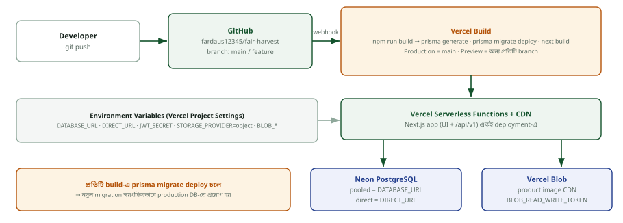
"build": "prisma generate && prisma migrate deploy && next build"অর্থাৎ প্রতিটি deploy-এ ডাটাবেসের migration নিজে থেকেই প্রয়োগ হয়ে যায়।
| Deployment | কোন branch | ব্যবহার |
|---|---|---|
| Production | main | প্রকৃত লাইভ সাইট |
| Preview | অন্য প্রতিটি branch (যেমন feature/marketplace-completion) | merge করার আগে আলাদা URL-এ পরীক্ষা করা |
| সমস্যা | মূল কারণ | সমাধান |
|---|---|---|
| Build ব্যর্থ — “Failed to build / because it took more than 60 seconds” | হোমপেজ static generation-এর সময় নিজের HTTP API-তে কল করছিল, কিন্তু সেই সময় server তো এখনো চালুই হয়নি — request ঝুলে থাকত | safeApi()-তে server-side + relative base হলে সরাসরি fallback, এবং প্রতিটি fetch-এ ৫ সেকেন্ডের AbortSignal.timeout |
| Production login-এ “Internal server error” | main branch-এ তখনো provider = "sqlite" ছিল, অথচ DATABASE_URL PostgreSQL-এর | PostgreSQL migration branch-টি main-এ fast-forward merge করা |
| ছবি আপলোডে ENOENT … mkdir '/var/task/…/storage' | Production-এ STORAGE_PROVIDER সেট করা ছিল না, তাই ডিফল্ট local চলছিল — কিন্তু serverless ফাইল সিস্টেম read-only | Vercel-এ STORAGE_PROVIDER=object + Blob store যুক্ত করা |
এই তিনটি ঘটনা প্রমাণ করে প্রজেক্টটি সত্যিই deploy করা হয়েছে এবং বাস্তব সমস্যার মুখোমুখি হয়ে সমাধান করা হয়েছে। “আমি শুধু localhost-এ চালিয়েছি” বলার চেয়ে এটি অনেক শক্তিশালী উত্তর।
প্রজেক্টে একটি সরল Dockerfile আছে (node:22-alpine → npm install → npm run build → npm start, পোর্ট ৩০০০)। এটি Vercel ছাড়া অন্য কোথাও চালানোর সুযোগ রাখে, তবে প্রধান deployment পথ Vercel।
নিচের তালিকায় শুধু নাম ও উদ্দেশ্য আছে। প্রতিটি গোপন মানের জায়গায় [SECRET — NOT SHOWN] লেখা। ভাইভাতেও কখনো আসল টোকেন বা পাসওয়ার্ড স্ক্রিনে দেখাবেন না।
| Variable | উদ্দেশ্য | কোথায় লাগে | গোপন? | মান |
|---|---|---|---|---|
| DATABASE_URL | অ্যাপ চলার সময়ের pooled PostgreSQL সংযোগ | dev + production | হ্যাঁ | [SECRET — NOT SHOWN] |
| DIRECT_URL | prisma migrate-এর জন্য direct সংযোগ | dev + production | হ্যাঁ | [SECRET — NOT SHOWN] |
| JWT_SECRET | JWT signature-এর চাবি | dev + production | হ্যাঁ | [SECRET — NOT SHOWN] · production-এ না থাকলে অ্যাপ চালুই হয় না |
| JWT_EXPIRES_IN | টোকেনের মেয়াদ | উভয় | না | 2h (ডিফল্ট) |
| VERIFICATION_PROVIDER | কোন Farmer Card provider | উভয় | না | demo | official |
| GOV_API_BASE_URL | ভবিষ্যতের সরকারি API-র ঠিকানা | ঐচ্ছিক | না | বর্তমানে খালি |
| GOV_API_KEY | সেই API-র credential | ঐচ্ছিক | হ্যাঁ | [SECRET — NOT SHOWN] · বর্তমানে খালি |
| STORAGE_PROVIDER | ছবি কোথায় রাখা হবে | উভয় | না | local (dev) | object (production-এ আবশ্যক) |
| UPLOAD_DIR | local provider-এর ফোল্ডার | শুধু dev | না | ./storage/uploads |
| BLOB_READ_WRITE_TOKEN | Vercel Blob-এ লেখার অনুমতি | production | হ্যাঁ | [SECRET — NOT SHOWN] · Blob store যুক্ত করলে Vercel নিজেই দেয় |
| BLOB_PUBLIC_BASE_URL | ছবির CDN base — ছবি মোছার জন্য দরকার | production | না | https://<store-id>.public.blob.vercel-storage.com |
| NEXT_PUBLIC_API_BASE_URL | SDK client-এর base | dev | না | Vercel-এ সেট করা যাবে না — করলে build timeout হয় |
| NEXT_PUBLIC_API_URL | lib/api.js-এর base | dev | না | খালি থাকলে /api/v1 (same-origin) |
| ALLOWED_ORIGINS | CORS allow-list (কমা দিয়ে আলাদা) | ঐচ্ছিক | না | খালি = same-origin only |
| SEED_DEMO_DATA | "false" দিলে seed এড়িয়ে যায় | ঐচ্ছিক | না | true |
| NODE_ENV | Next.js নিজেই সেট করে | স্বয়ংক্রিয় | না | development | production |
একটি ফাঁদ যা এই প্রজেক্টে বাস্তবে সমস্যা করেছিল: Prisma CLI শুধু .env পড়ে, কিন্তু Next.js .env ও .env.local দুটোই পড়ে। তাই DATABASE_URL ও DIRECT_URL অবশ্যই .env-এ রাখতে হয়, নাহলে prisma migrate ডাটাবেস খুঁজে পায় না। README-তেও এটি লেখা আছে।
দুটি ফাইলই .gitignore-এ আছে, তাই কোনো গোপন মান কখনো git-এ যায়নি। .env.example শুধু গঠন দেখানোর জন্য — এতে কোনো আসল মান নেই।
চারটি শ্রেণিতে ভাগ করা: নেই আংশিক DEMO — এবং কিছু ছোট বাগ।
| বিষয় | বিস্তারিত |
|---|---|
| প্রকৃত payment gateway | bKash/Nagad/SSLCommerz/Stripe কিছুই নেই |
| কৃষকের payout | টাকা কৃষকের কাছে পাঠানোর কোনো ব্যবস্থা নেই |
| প্রকৃত সরকারি API | শুধু নিজের ডাটাবেসের demo registry |
| ডেলিভারি ব্যবস্থাপনা | কোনো courier, tracking নম্বর, বা delivery partner নেই |
| Notification | ইমেইল, SMS, push — কোনোটিই নেই। Notification মডেলও নেই। |
| পাসওয়ার্ড পুনরুদ্ধার | “Forgot password” নেই |
| ইমেইল যাচাই | যেকোনো ইমেইল দিয়ে অ্যাকাউন্ট খোলা যায় |
| Profile সম্পাদনা | নাম, ফোন, পাসওয়ার্ড বদলানোর কোনো UI বা API নেই |
| ক্রেতার order বাতিল | শুধু কৃষক বা admin status বদলাতে পারে |
| Refund / return | কোনো ধারণাই নেই |
| Pagination | কোনো তালিকায় নেই — সব একবারে আসে (audit log-এ শুধু ২০০-র সীমা) |
| Chat / messaging | ক্রেতা-কৃষক যোগাযোগের উপায় নেই |
| প্রকৃত QR তৈরি/স্ক্যান | শুধু একটি স্ট্রিং |
| Blockchain | নেই — এবং API নিজেই তা ঘোষণা করে |
| 2FA, CSP, account lockout | নেই |
| CI/CD pipeline | .github/workflows নেই |
| Integration ও E2E test | নেই |
| বিষয় | কী আছে, কী নেই |
|---|---|
| Marketplace search | আছে, কিন্তু শুধু client-side — ইতিমধ্যে লোড হওয়া তালিকার উপর। Admin search অবশ্য server-side। |
| sort_by filter | frontend পাঠায় কিন্তু server ব্যবহার করে না; সবসময় trustScore অনুসারে সাজানো |
| Rate limiting | আছে, কিন্তু in-memory — একাধিক server instance-এ নির্ভরযোগ্য নয় |
| Order status ক্রম | কোনো state machine নেই; যেকোনো status থেকে যেকোনোটিতে যাওয়া যায় |
| Token বাতিলকরণ | logout বা suspend করলেও পুরোনো JWT ২ ঘণ্টা পর্যন্ত বৈধ থাকে |
| i18n | ১৭৭টি স্ট্রিং অনুবাদিত; বাকি লেখা ইংরেজিই থাকে |
| Audit coverage | ৬ ধরনের কাজ লেখা হয়; order status বদল, পণ্য সম্পাদনা ও login লেখা হয় না |
| Cart-এ stock যাচাই | শুধু checkout-এ হয়, cart-এ যোগ করার সময় নয় |
| Wishlist-এ archived পণ্য | থেকে যায় কিন্তু “আর পাওয়া যাচ্ছে না” বলে চিহ্নিত হয় না |
| ডেলিভারি ফি | স্থির ৬০ টাকা; client ইচ্ছেমতো মান পাঠাতে পারে |
| Product.trustScore | ফিল্ড আছে ও দেখানো হয়, কিন্তু স্বয়ংক্রিয়ভাবে গণনা হয় না |
| PaymentStatus.FAILED | enum-এ আছে, কোথাও বসানো হয় না |
| CartItemSource | তিনটি মান আছে, UI থেকে শুধু DIRECT তৈরি হয় |
| বিষয় | বিবরণ |
|---|---|
| Farmer dashboard-এ “Active products” | লেবেলে “Active” লেখা, কিন্তু archived সহ সব পণ্য গোনে |
| Add product-এ category | drop-down-এ শুধু তিনটি — herb বাদ পড়েছে (edit form-এ চারটিই আছে) |
| হোমপেজের “On-chain” লেবেল | একটি অবশিষ্ট স্থির লেখা; trace পেজ স্পষ্টভাবে উল্টো কথা বলে |
| Marketplace-এর “Eco A” badge | স্থির লেখা, গণনা করা নয় |
| Reputation breakdown | quality_score ও review_score একই মান |
| OpenAPI নথি | /orders/{orderId}/status POST লেখা, বাস্তবে PATCH |
| SDK-তে অস্তিত্বহীন endpoint | oauth() ও pushPrescriptionCart() — কোনো route নেই |
| README-র architecture নোট | এখনো লেখা “Database: SQLite by default” — PostgreSQL-এ যাওয়ার পর হালনাগাদ হয়নি (README-র শুরুতে অবশ্য PostgreSQL-ই লেখা) |
| getRewards()-এ ডিফল্ট | userId = "u001" — একটি অবশিষ্ট prototype মান (বাস্তবে সব কল আসল id দেয়) |
যে শিক্ষার্থী নিজের প্রজেক্টের ২০টি সীমাবদ্ধতা মুখস্থ বলতে পারে, বোর্ড বোঝেন তিনি কোড নিজে লিখেছেন এবং বুঝে লিখেছেন। কোনো প্রশ্নে আটকে গেলে বলুন: “ওই অংশটি এই সংস্করণে বাস্তবায়িত হয়নি, আমি জানি এটি কীভাবে যোগ করতে হবে — …”।
প্রতিটি প্রস্তাব উপরের কোনো একটি প্রকৃত সীমাবদ্ধতা থেকে এসেছে — কল্পনা থেকে নয়।
| # | উন্নয়ন | কোন সীমাবদ্ধতা দূর করে | বাস্তবায়নের পথ |
|---|---|---|---|
| 1 | প্রকৃত payment gateway | demo payment | bKash/SSLCommerz-এর sandbox; PaymentMethod enum-এ নতুন মান, webhook দিয়ে PaymentStatus হালনাগাদ। বর্তমান Payment মডেলই যথেষ্ট। |
| 2 | প্রকৃত সরকারি API | demo registry | officialGovApiProvider.js-এ আসল URL ও key বসানো, তারপর VERIFICATION_PROVIDER=official। অন্য কোনো ফাইল বদলাতে হবে না — abstraction-টি ঠিক এই জন্যই তৈরি। |
| 3 | Notification | কোনো জানানোর ব্যবস্থা নেই | একটি Notification মডেল + ইমেইল (Resend) বা SMS। Trigger point ইতিমধ্যেই আছে: verification সিদ্ধান্ত, order status, নতুন review। |
| 4 | Distributed rate limiting | in-memory সীমা | Upstash Redis; enforceRateLimit()-এর ভিতরের Map-কে Redis দিয়ে বদলানো — interface একই থাকে। |
| 5 | Refresh token + HttpOnly cookie | টোকেন localStorage-এ, বাতিল করা যায় না | স্বল্পমেয়াদি access token + দীর্ঘমেয়াদি refresh token ডাটাবেসে; logout-এ refresh token মুছে ফেলা। |
| 6 | Server-side search + pagination | client-side search, pagination নেই | Admin product search-এর মতোই mode: "insensitive" + skip/take; PostgreSQL full-text search ব্যবহার করা যায়। |
| 7 | Order state machine | যেকোনো status থেকে যেকোনোটিতে | অনুমোদিত পরিবর্তনের একটি map; অবৈধ হলে 422। |
| 8 | সম্পূর্ণ audit coverage | ৬টি কাজ লেখা হয় | recordAudit() ইতিমধ্যেই আছে — শুধু বাকি route-এ যোগ করা; সাথে filter ও pagination। |
| 9 | প্রকৃত QR কোড | শুধু স্ট্রিং | একটি QR library দিয়ে /trace/<id>-এর ছবি তৈরি, যা পণ্যের প্যাকেটে ছাপা যাবে। |
| 10 | প্রকৃত ছবি বিশ্লেষণ | scanner ভুয়া | একটি image classification মডেল; বর্তমান API contract অপরিবর্তিত রেখে ভিতরটা বদলানো যায়। |
| 11 | ডেলিভারি সংযোগ | ডেলিভারি নেই | Courier partner API + Order-এ tracking নম্বর; SHIPPED event-এর সাথে সংযুক্ত। |
| 12 | সুপারিশ ব্যবস্থা | নেই | Order ইতিহাস থেকে collaborative filtering — ডেটা ইতিমধ্যেই আছে। |
| 13 | মোবাইল অ্যাপ | শুধু ওয়েব | @fair-harvest/sdk ইতিমধ্যেই REST client হিসেবে প্রস্তুত — React Native অ্যাপ সরাসরি এটি ব্যবহার করতে পারবে। |
| 14 | CI/CD ও test সম্প্রসারণ | হাতে টেস্ট চালাতে হয় | GitHub Actions-এ lint + test + build; পরে route-level integration ও Playwright E2E। |
| 15 | Analytics dashboard | শুধু ৬টি সংখ্যা | সময়ভিত্তিক বিক্রয় গ্রাফ, জেলাভিত্তিক বিশ্লেষণ, শীর্ষ কৃষক — সব ডেটা ইতিমধ্যেই আছে। |
প্রতিটি প্রশ্নে চারটি অংশ আছে — সহজ উত্তর (এক-দুই লাইন, প্রথমেই এটি বলুন), বিস্তারিত (বোর্ড আগ্রহ দেখালে), Technical (কোডের ভাষায়), এবং আরও প্রশ্ন করলে (পরের সম্ভাব্য প্রশ্নের প্রস্তুতি)। সহজ উত্তরগুলো মুখস্থ করুন, বাকিটা বুঝে রাখুন।
প্রশ্ন ১: আপনার প্রজেক্টটি কী নিয়ে?
সহজ উত্তর
Fair Harvest একটি full-stack digital agricultural marketplace, যেখানে সরকারি Farmer Card দিয়ে verified কৃষকরা সরাসরি ক্রেতাদের কাছে পণ্য বিক্রি করতে পারেন, আর ক্রেতা প্রতিটি পণ্যের মাটি-থেকে-প্লেট ইতিহাস দেখতে পারেন।
বিস্তারিত
এটি তিনটি সমস্যা একসাথে সমাধান করে — কৃষক যাচাইয়ের অভাব, বিক্রেতার ব্যাপারে অনাস্থা, এবং পণ্যের উৎস না জানা। এর জন্য তিনটি ব্যবস্থা আছে: Farmer Card verification, স্বয়ংক্রিয় reputation score, এবং TraceEvent-ভিত্তিক traceability। এর উপরে সাধারণ e-commerce অংশ — cart, checkout, order, review।
Technical
Next.js 15 App Router-এ একটিই deployment, যা UI এবং /api/v1-এর ৬৪টি REST endpoint দুটোই পরিবেশন করে। Prisma ORM দিয়ে PostgreSQL (Neon), JWT authentication, Vercel-এ deploy, ছবি Vercel Blob-এ।
আরও প্রশ্ন করলে — “তাহলে অন্য সাইট থেকে আলাদা কী?” → verification gate, purchase-gated review এবং soft delete-এর উদাহরণ দিন।
প্রশ্ন ২: এই প্রজেক্টটি কেন বেছে নিলেন?
সহজ উত্তর
বাংলাদেশের কৃষক মধ্যস্বত্বভোগীর কারণে ন্যায্য দাম পান না, আর শহরের ক্রেতা জানেন না তার খাবার কোথা থেকে এসেছে। একটি প্রযুক্তিগত সমাধান দুটি সমস্যাই একসাথে ধরতে পারে।
বিস্তারিত
শুধু একটি অনলাইন দোকান বানালে সমস্যা সমাধান হয় না — কারণ মূল সমস্যা বিশ্বাস। তাই আমি ইচ্ছাকৃতভাবে verification, reputation ও traceability-কে প্রজেক্টের কেন্দ্র বানিয়েছি, e-commerce অংশকে নয়।
আরও প্রশ্ন করলে — “এটি কি বাস্তবে ব্যবহার করা যাবে?” → “মূল কাঠামো প্রস্তুত; বাস্তব ব্যবহারের জন্য প্রকৃত payment gateway, ডেলিভারি সংযোগ ও সরকারি API দরকার — অধ্যায় 42-এ পথও বলা আছে।”
প্রশ্ন ৩: আপনার প্রজেক্টের সবচেয়ে গুরুত্বপূর্ণ অংশ কোনটি?
সহজ উত্তর
Farmer verification gate। কারণ পুরো প্ল্যাটফর্মের প্রতিশ্রুতিই হলো “verified কৃষকের কাছ থেকে কিনছেন”।
Technical
POST /api/v1/products-এ একটি শর্ত: if (farmer.verificationStatus !== "VERIFIED") throw new ApiError(…, 403)। এই একটি লাইনই পুরো ব্যবসায়িক নিয়মটি প্রয়োগ করে। একই নিয়ম ছবি আপলোডেও আছে।
কোথায় app/api/v1/products/route.js
প্রশ্ন ৪: কতটুকু কোড আপনি নিজে লিখেছেন?
সহজ উত্তর
সম্পূর্ণ application কোড — schema, ৬৪টি API handler, সব React পেজ ও component, এবং SDK প্যাকেজটিও।
বিস্তারিত
বাইরের লাইব্রেরি হিসেবে ব্যবহার করেছি Next.js, React, Prisma, Zod, bcryptjs, jsonwebtoken, lucide-react ও @vercel/blob। CSS কোনো framework ছাড়া হাতে লেখা।
প্রশ্ন ৫: Next.js কেন? শুধু React ব্যবহার করলে কী হতো?
সহজ উত্তর
শুধু React হলে API-র জন্য আলাদা একটি Express server লাগত। Next.js-এ frontend ও backend একই প্রজেক্টে থাকে।
বিস্তারিত
এতে চারটি সুবিধা পেয়েছি — (১) একবারে deploy, (২) CORS-এর জটিলতা নেই কারণ same-origin, (৩) Server Component দিয়ে SEO-বান্ধব HTML, (৪) একই কোড দুই দিকে ভাগ করা যায়।
Technical
App Router-এ app/api/v1/**/route.js ফাইলগুলোই backend। প্রতিটি HTTP method একটি export করা async function।
আরও প্রশ্ন করলে — “Server আর Client Component-এর পার্থক্য?” → “Server Component-এর JS ব্রাউজারে যায় না, তাই হালকা ও SEO-বান্ধব; কিন্তু সেখানে state বা onClick রাখা যায় না। আমার হোমপেজ, product detail ও trace পেজ server component; dashboard ও form-গুলো client।”
প্রশ্ন ৬: Prisma কেন? সরাসরি SQL লিখলে কী সমস্যা?
সহজ উত্তর
Prisma একটি ORM — schema থেকেই ডাটাবেস, migration ও query-র টাইপ সব তৈরি হয়, আর SQL injection-এর ঝুঁকি কমে।
Technical
Prisma সবসময় parameterized query তৈরি করে, তাই ব্যবহারকারীর লেখা কখনো SQL-এর অংশ হয় না। include দিয়ে relation একসাথে আনা যায়, আর $transaction দিয়ে atomic কাজ করা যায় — আমার checkout ঠিক এটাই ব্যবহার করে।
আরও প্রশ্ন করলে — “ORM-এর অসুবিধা?” → “খুব জটিল query-তে হাতে লেখা SQL দ্রুততর হতে পারে, এবং ORM কী SQL তৈরি করছে তা না জানলে N+1 সমস্যা হতে পারে। আমার প্রজেক্টে query সরল, তাই সমস্যা হয়নি।”
প্রশ্ন ৭: PostgreSQL কেন? MongoDB বা MySQL নয় কেন?
সহজ উত্তর
আমার ডেটা সম্পূর্ণ relational — user, farmer, product, order, review সব একে অন্যের সাথে যুক্ত। তাই relational database-ই স্বাভাবিক পছন্দ।
বিস্তারিত
MongoDB হলে foreign key, cascade, RESTRICT আর transaction-এর নিশ্চয়তা কোডে হাতে লিখতে হতো। আমার soft delete-এর পুরো ভিত্তিই OrderItem → Product-এর RESTRICT সম্পর্ক। PostgreSQL বেছে নেওয়ার বিশেষ কারণ — native enum সমর্থন (আমার ১৩টি enum আছে) এবং Neon-এর serverless free tier।
আরও প্রশ্ন করলে — “SQLite থেকে সরালেন কেন?” → “SQLite একটি ফাইল; Vercel-এর serverless ফাইল সিস্টেম read-only ও ক্ষণস্থায়ী, তাই production-এ ডেটা টিকত না।”
প্রশ্ন ৮: JWT কেন? Session কেন নয়?
সহজ উত্তর
JWT stateless — server-এ কোনো session টেবিল রাখতে হয় না, তাই serverless পরিবেশে ভালো কাজ করে।
Technical
Vercel-এ প্রতিটি request আলাদা function instance-এ চলতে পারে, যাদের মধ্যে কোনো ভাগ করা memory নেই। Session-ভিত্তিক auth-এ প্রতিবার ডাটাবেসে গিয়ে session দেখতে হতো। JWT-তে signature যাচাই করেই পরিচয় পাওয়া যায় — কোনো DB call ছাড়াই।
আরও প্রশ্ন করলে — “JWT-র অসুবিধা?” → “বাতিল করা কঠিন। আমার প্রজেক্টে logout শুধু localStorage মুছে; token তার ২ ঘণ্টার মেয়াদ পর্যন্ত প্রযুক্তিগতভাবে বৈধ থাকে। সমাধান হতো refresh token বা blacklist।” — এই স্বীকারোক্তিটি বোর্ড পছন্দ করেন।
প্রশ্ন ৯: REST কেন, GraphQL নয় কেন?
সহজ উত্তর
REST সরল, সবাই জানে, আর Next.js-এর route handler-এর সাথে স্বাভাবিকভাবে মেলে।
বিস্তারিত
GraphQL তখন লাগে যখন ক্লায়েন্টভেদে ভিন্ন ভিন্ন আকারের ডেটা দরকার। আমার ক্ষেত্রে ক্লায়েন্ট একটিই। তাছাড়া GraphQL-এ caching ও rate limiting বসানো তুলনামূলক জটিল।
প্রশ্ন ১০: Vercel কেন?
সহজ উত্তর
Vercel-ই Next.js-এর নির্মাতা, তাই App Router-এর সব সুবিধা সেখানে সরাসরি কাজ করে; সাথে git push করলেই স্বয়ংক্রিয় deploy।
Technical
Preview deployment (প্রতিটি branch-এর আলাদা URL), স্বয়ংক্রিয় HTTPS, CDN, environment variable ব্যবস্থাপনা এবং Vercel Blob — সব একই জায়গায়। build কমান্ডে prisma migrate deploy রাখায় প্রতিটি deploy-এ ডাটাবেসও হালনাগাদ হয়ে যায়।
প্রশ্ন ১১: Vercel Blob কেন? ছবি ডাটাবেসে রাখলেন না কেন?
সহজ উত্তর
ছবির bytes ডাটাবেসে রাখলে ডাটাবেস দ্রুত বড় হয়ে ধীর হয়ে যেত। তাই ছবি object storage-এ, আর ডাটাবেসে শুধু URL।
Technical
Production-এ local disk ব্যবহার করা সম্ভবই নয় — serverless ফাইল সিস্টেম /tmp ছাড়া read-only এবং প্রতিটি invocation-এর পর মুছে যায়। আমার প্রজেক্টে বাস্তবে এই ত্রুটিটি এসেছিল: ENOENT … mkdir '/var/task/…/storage'। সমাধান — STORAGE_PROVIDER=object।
কোথায় lib/server/storage/objectStorageProvider.js
প্রশ্ন ১২: Authentication আর Authorization-এর পার্থক্য কী?
সহজ উত্তর
Authentication = “তুমি কে?” (পরিচয় প্রমাণ)। Authorization = “তুমি কী করতে পারবে?” (অধিকার যাচাই)।
Technical
আমার কোডে দুটি আলাদা জায়গায়: authentication হয় /auth/login-এ bcrypt দিয়ে পাসওয়ার্ড মিলিয়ে JWT দেওয়ার সময়; authorization হয় প্রতিটি route-এ requireRole বা requireOwnerOrRole দিয়ে।
প্রশ্ন ১৩: পাসওয়ার্ড কীভাবে সংরক্ষণ করেন?
সহজ উত্তর
কখনোই plain text-এ নয়। bcrypt দিয়ে hash করে রাখি, cost factor ১০।
Technical
bcrypt.hash(password, 10)। bcrypt নিজে থেকেই প্রতিটি পাসওয়ার্ডের জন্য আলাদা salt তৈরি করে, তাই একই পাসওয়ার্ডের দুজন ব্যবহারকারীর hash আলাদা হয় — rainbow table আক্রমণ কাজ করে না। যাচাইয়ের সময় bcrypt.compare(), কারণ hash থেকে মূল পাসওয়ার্ড ফেরত পাওয়া যায় না।
আরও প্রশ্ন করলে — “cost 10 মানে কী?” → “২¹⁰ = ১০২৪ বার hashing round। ইচ্ছাকৃতভাবে ধীর, যাতে আক্রমণকারী সেকেন্ডে লক্ষ লক্ষ পাসওয়ার্ড পরীক্ষা করতে না পারে।”
প্রশ্ন ১৪: JWT-তে কী কী থাকে? কেউ কি সেটি পাল্টে ফেলতে পারে?
সহজ উত্তর
ভিতরে থাকে user id, role, email আর মেয়াদ। কেউ পাল্টালে signature মেলে না, তাই server সঙ্গে সঙ্গে বাতিল করে দেয়।
Technical
jwt.sign({ sub: user.id, role, email }, JWT_SECRET, { expiresIn: "2h" }) — HS256 অ্যালগরিদম। Payload base64-এ থাকে, তাই কেউ পড়তে পারে; কিন্তু বদলাতে পারে না, কারণ signature তৈরি করতে JWT_SECRET লাগে।
আরও প্রশ্ন করলে — “তাহলে payload-এ গোপন তথ্য রাখা যায়?” → “না, একেবারেই নয়। তাই আমি শুধু id, role আর email রেখেছি।”
প্রশ্ন ১৫: টোকেন localStorage-এ রাখা কি নিরাপদ?
সহজ উত্তর
সম্পূর্ণ নিরাপদ নয় — XSS হলে JavaScript সেটি পড়তে পারে। HttpOnly cookie বেশি নিরাপদ হতো।
বিস্তারিত
এটি আমি জেনেবুঝেই করেছি: localStorage সহজ এবং CSRF-মুক্ত। HttpOnly cookie নিলে XSS থেকে রক্ষা পেতাম, কিন্তু তখন CSRF token লাগত। বাস্তব production-এ আমি HttpOnly cookie + refresh token ব্যবহার করতাম — এটি অধ্যায় 42-এ future scope হিসেবে লেখা আছে।
টিপ এই প্রশ্নে “হ্যাঁ নিরাপদ” বলবেন না। trade-off বুঝে উত্তর দিলে নম্বর বেশি।
প্রশ্ন ১৬: ভুল পাসওয়ার্ড আর ভুল ইমেইল — দুটোতেই একই বার্তা কেন?
সহজ উত্তর
যাতে আক্রমণকারী বুঝতে না পারে কোন ইমেইলটি সিস্টেমে আছে।
Technical
এটিকে বলে user enumeration প্রতিরোধ। “এই ইমেইল নেই” বললে আক্রমণকারী আগে বৈধ ইমেইলের তালিকা বানিয়ে তারপর শুধু সেগুলোতে পাসওয়ার্ড অনুমান করত। আমার কোডে তিনটি ক্ষেত্রেই একই বার্তা — ব্যবহারকারী নেই, suspended, বা পাসওয়ার্ড ভুল।
প্রশ্ন ১৭: আমি যদি URL-এ অন্যের userId বসিয়ে দিই?
সহজ উত্তর
403 পাবেন। প্রতিটি route মালিকানা যাচাই করে।
Technical
এই আক্রমণকে বলে IDOR। requireOwnerOrRole(request, userId, ["ADMIN"]) JWT-র session.userId-এর সাথে URL-এর id মিলিয়ে দেখে। আর wishlist, farmer/orders ও farmer/earnings-এ আমি URL-এ id রাখিইনি — সেগুলো সবসময় session থেকে নেওয়া, তাই আক্রমণের সুযোগই নেই।
কোথায় lib/server/auth.js · app/api/v1/cart/[userId]/route.js
প্রশ্ন ১৮: RoleGuard দিয়েই তো পেজ আটকানো আছে — সেটাই কি যথেষ্ট নয়?
সহজ উত্তর
না। RoleGuard শুধু UI-এর সুবিধা। কেউ সরাসরি API-তে request পাঠালে সেটি কোনো কাজেই আসত না।
Technical
client-side যেকোনো কিছু ব্যবহারকারী বদলে ফেলতে পারে — JavaScript বন্ধ করা যায়, বা curl দিয়ে সরাসরি endpoint-এ যাওয়া যায়। তাই আসল সিদ্ধান্ত সবসময় server-এ। আমার RoleGuard ফাইলের কমেন্টেই লেখা আছে: “This is a user-experience guard only… that server check is what actually secures the data.”
প্রশ্ন ১৯: কেউ কি নিজেকে admin বানিয়ে register করতে পারবে?
সহজ উত্তর
না। register schema-তে role হিসেবে শুধু consumer ও farmer অনুমোদিত।
Technical
role: z.enum(["consumer", "farmer"]).default("consumer") — Zod "admin" পাঠালে 422 দেবে। Admin অ্যাকাউন্ট হাতে (seed দিয়ে) তৈরি করতে হয়, আর /admin/login পেজে register বোতামও নেই (allowRegister={false})।
প্রশ্ন ২০: JWT_SECRET ফাঁস হয়ে গেলে কী হবে?
সহজ উত্তর
যে কেউ নিজের জন্য admin token বানিয়ে ফেলতে পারত — তাই এটি সবচেয়ে গুরুত্বপূর্ণ গোপন মান।
Technical
সেজন্যই এটি কখনো কোডে লেখা হয়নি, শুধু environment variable-এ। এবং production-এ এটি না থাকলে অ্যাপ ইচ্ছাকৃতভাবে চালু হতেই অস্বীকার করে — নাহলে development-এর জানা ডিফল্ট secret দিয়ে যে কেউ token বানাতে পারত।
কোথায় lib/server/auth.js-এর প্রথম কয়েক লাইন
প্রশ্ন ২১: Farmer Card verification কীভাবে কাজ করে?
সহজ উত্তর
কৃষক Farmer Card নম্বর, NID আর নাম দেন। সিস্টেম সেটি একটি registry-তে খুঁজে দেখে। তিনটিই মিললে সঙ্গে সঙ্গে verified; না মিললে admin হাতে দেখেন।
Technical
POST /farmers/{id}/verify → rate limit ৮/মিনিট → requireOwnerOrRole → Zod → verifyFarmerCard() → GovFarmerCardRecord.findUnique({ cardNumber }) → status ACTIVE কি না → NID ও normalize করা নাম মিলিয়ে দেখা → মিললে matched: true, confidence: 0.98 → profile VERIFIED → recomputeFarmerReputation()।
কোথায় lib/server/verification/demoRegistryProvider.js
প্রশ্ন ২২: এটি কি সত্যিকারের সরকারি API?
সহজ উত্তর
না। এটি একটি demo registry — আমার নিজের ডাটাবেসের GovFarmerCardRecord টেবিল, যেখানে seed দিয়ে ৮টি নমুনা কার্ড রাখা।
বিস্তারিত
বাংলাদেশে শিক্ষার্থীর জন্য উন্মুক্ত কোনো Farmer Card API নেই। তাই আমি provider abstraction বানিয়েছি: demoRegistryProvider.js এখন চলে, আর officialGovApiProvider.js লেখা আছে সঠিক request/response আকারে। ভবিষ্যতে আসল API পেলে শুধু VERIFICATION_PROVIDER=official করে দিলেই হবে — route, schema বা frontend-এর একটি লাইনও বদলাতে হবে না।
টিপ এই প্রশ্নটি প্রায় নিশ্চিতভাবে আসবে। সরাসরি “না” বলে তারপর abstraction-এর কথা বলুন — এতে দুর্বলতা শক্তিতে বদলে যায়।
প্রশ্ন ২৩: কার্ড নম্বর ঠিক কিন্তু নাম ভুল হলে?
সহজ উত্তর
matched: false, confidence ০.৫, কারণ details_mismatch। profile PENDING থাকে এবং admin-এর কাছে চলে যায়।
Technical
নাম মেলানোর আগে trim().toLowerCase().replace(/\s+/g, " ") করা হয়, তাই বাড়তি স্পেস বা বড়-ছোট হরফে সমস্যা হয় না। তবে বানান ভুল হলে মিলবে না — fuzzy matching নেই।
প্রশ্ন ২৪: verified না হলে কৃষক কী করতে পারেন না?
সহজ উত্তর
পণ্য তালিকাভুক্ত করতে পারেন না এবং ছবিও আপলোড করতে পারেন না। login, dashboard দেখা ও verification জমা দেওয়া — এইটুকুই।
Technical
দুই জায়গায় gate: products/route.js-এর POST এবং uploads/product-image/route.js। দ্বিতীয়টি রাখার কারণ — নাহলে কেউ প্ল্যাটফর্মকে ফ্রি file hosting হিসেবে ব্যবহার করত।
ডেমোতে দেখান Rahim (verified) ও Karim (pending) — একই dashboard সম্পূর্ণ আলাদা দেখায় (চিত্র 28 ও 29)।
প্রশ্ন ২৫: Admin-এর সিদ্ধান্ত কোথাও রেকর্ড হয়?
সহজ উত্তর
হ্যাঁ। দুই জায়গায় — FarmerProfile.verifiedByAdminId-এ কোন admin, আর AuditLog-এ সম্পূর্ণ ঘটনা।
Technical
verifiedByAdminId একটি self-relation — User মডেলে verifiedFarmers FarmerProfile[] @relation("VerifiedByAdmin")। AuditLog-এ action হয় farmer_verification_approved নয়তো _rejected।
প্রশ্ন ২৬: Reputation score কীভাবে হিসাব হয়? সূত্রটি বলুন।
সহজ উত্তর
তিনটি সংকেতের weighted average — verification ৩৫%, review rating ৪০%, delivery সম্পূর্ণতা ২৫%।
Technical
Score = clamp(0.35 × Sver + 0.40 × Srev + 0.25 × Sdel)
যেখানে Sver = VERIFIED→90, PENDING→60, REJECTED→30; Srev = (গড় rating ÷ 5) × 100, review না থাকলে 70; Sdel = (delivered ÷ মোট order item) × 100, order না থাকলে 75।
উদাহরণ (আমার চালু সিস্টেম থেকে)
Rahim Uddin — verified (90), একটি ৫-তারা review (100), একটি DELIVERED item (100)। → 90×0.35 + 100×0.40 + 100×0.25 = 31.5 + 40 + 25 = 96.5 → 97 → badge “Trusted Seller”।
কোথায় lib/server/reputation.js
প্রশ্ন ২৭: নতুন কৃষক, যার কোনো review নেই — তার score কত?
সহজ উত্তর
review ও delivery-র জন্য নিরপেক্ষ ভিত্তি ধরা হয় (70 ও 75), শূন্য নয়।
বিস্তারিত
শূন্য ধরলে একজন সৎ নতুন কৃষক শুরুতেই “খারাপ” দেখাতেন, অথচ তিনি কিছু ভুল করেননি। এটি একটি সচেতন ন্যায্যতার সিদ্ধান্ত — কোডের কমেন্টেও লেখা আছে। তাই নতুন verified কৃষকের score হয় 90×0.35 + 70×0.40 + 75×0.25 = 31.5 + 28 + 18.75 = 78 → “Reliable Farmer”।
প্রশ্ন ২৮: Score কখন আপডেট হয়?
সহজ উত্তর
চারটি ঘটনায় — নতুন review, verification সিদ্ধান্ত, order DELIVERED/CANCELLED হওয়া, এবং admin কোনো review hide/republish করলে।
Technical
দুটি আলাদা ফাংশন আছে: getFarmerReputationBreakdown() শুধু গণনা করে (GET route-এ ব্যবহৃত, কিছু লেখে না), আর recomputeFarmerReputation() গণনা করে ডাটাবেসে লিখে রাখে। GET request-এ ডাটাবেস লেখা উচিত নয় বলেই এই দুটি আলাদা।
প্রশ্ন ২৯: প্রতিবার গণনা না করে ডাটাবেসে লিখে রাখেন কেন?
সহজ উত্তর
কারণ marketplace-এর প্রতিটি কার্ডে score দেখাতে গেলে প্রতিটি কৃষকের জন্য আলাদা করে review ও order গোনা লাগত — অনেক query।
Technical
এটিকে বলে materialized value বা computed-column caching। খরচ হলো — event-এ recompute করতে ভুলে গেলে মান পুরোনো হয়ে যেতে পারে। তাই আমি ঠিক চারটি জায়গায় recompute কল রেখেছি এবং সেগুলো নথিভুক্ত।
প্রশ্ন ৩০: Product-এর trust score আর farmer-এর reputation কি একই?
সহজ উত্তর
না, সম্পূর্ণ আলাদা। Farmer reputation স্বয়ংক্রিয়ভাবে গণনা হয়; Product.trustScore এখনো একটি স্থির মান (ডিফল্ট ৮০)।
সৎ স্বীকারোক্তি
marketplace কার্ডে যে “91%” দেখা যায় সেটি seed-এ হাতে বসানো। কোনো API এটি স্বয়ংক্রিয়ভাবে বদলায় না। ভবিষ্যতে trace-এর সম্পূর্ণতা, সেই পণ্যের review ও কৃষকের reputation মিলিয়ে এটিও গণনা করা যেত।
প্রশ্ন ৩১: পণ্য delete করলে কী হয়?
সহজ উত্তর
ডাটাবেস থেকে মুছে যায় না — শুধু status হয়ে যায় ARCHIVED। একে বলে soft delete।
Technical
Endpoint-এর নাম DELETE হলেও ভিতরে prisma.product.update({ data: { status: "ARCHIVED" } }) চলে। পণ্যটি marketplace থেকে অদৃশ্য হয়, কিন্তু পুরোনো order, review ও trace সব অক্ষত থাকে।
কোথায় app/api/v1/products/[productId]/route.js
প্রশ্ন ৩২: Hard delete রাখলেন না কেন?
সহজ উত্তর
কারণ পুরোনো order ওই পণ্যটিকে নির্দেশ করে। মুছে ফেললে ক্রেতার order history ভেঙে যেত।
Technical
ডাটাবেসই এটি আটকে দেয়: OrderItem.productId → Product সম্পর্কে কোনো onDelete: Cascade নেই, তাই Prisma-র ডিফল্ট RESTRICT কার্যকর। order থাকলে PostgreSQL সারিটি মুছতেই দেবে না। তাছাড়া Review ও TraceEvent cascade-এ মুছে যেত — অর্থাৎ কৃষকের reputation-ও হঠাৎ বদলে যেত।
আরও প্রশ্ন করলে — “তাহলে পণ্য কি চিরকাল থাকবে?” → “হ্যাঁ, এবং সেটিই উদ্দেশ্য। এটি একটি ঐতিহাসিক রেকর্ড। তবে চাইলে কোনো order নেই এমন পণ্যের জন্য admin-only hard delete যোগ করা যেত।”
প্রশ্ন ৩৩: Archive করা পণ্য কি ফেরত আনা যায়?
সহজ উত্তর
হ্যাঁ। PATCH /products/{id} দিয়ে status: "active" করলেই আবার marketplace-এ ফিরে আসে — ছবি ও সব তথ্যসহ।
Technical
Restore-এর জন্য আলাদা endpoint নেই, কারণ এটি নিছক একটি status পরিবর্তন। Admin console-এ archived সারিতে “Restore” বোতাম আসে, আর কৃষক edit form-এর status drop-down থেকে করতে পারেন। দুটোতেই window.confirm দেখানো হয়।
প্রশ্ন ৩৪: Archive হলে wishlist বা cart-এ কী হয়?
সহজ উত্তর
Wishlist-এ সারিটি থেকে যায় (কিন্তু “অনুপলব্ধ” বলে চিহ্নিত হয় না — এটি একটি সীমাবদ্ধতা)। Cart-এ নতুন করে যোগ করা যায় না, আর আগে থেকে থাকলে checkout-এ আটকে যায়।
Technical
POST /cart/{userId}/items-এ শর্ত: if (!product || product.status !== "ACTIVE") throw 404।
প্রশ্ন ৩৫: OUT_OF_STOCK আর ARCHIVED — পার্থক্য কী?
সহজ উত্তর
OUT_OF_STOCK মানে “এখন নেই, পরে আসবে”; ARCHIVED মানে “আর বিক্রি করছি না”। দুটোই marketplace থেকে লুকানো থাকে।
Technical
কোডগতভাবে পার্থক্য শুধু অর্থে — filter একটিই: where.status = "ACTIVE"। ভবিষ্যতে OUT_OF_STOCK পণ্যকে “stock এলে জানাবো” বোতামসহ ধূসর করে দেখানো যেত।
প্রশ্ন ৩৬: Cart আর CartItem আলাদা টেবিল কেন? Order আর OrderItem-ও?
সহজ উত্তর
এটি database normalization। একটি cart-এ অনেক item থাকে — এটি one-to-many সম্পর্ক, তাই আলাদা টেবিল।
Technical
এক টেবিলে রাখলে একই ব্যবহারকারীর ঠিকানা, মোট দাম ইত্যাদি প্রতিটি সারিতে পুনরাবৃত্তি হতো (update anomaly)। আলাদা রাখায় Cart-এ ব্যবহারকারীর তথ্য একবার, আর CartItem-এ প্রতিটি পণ্য একবার। Order/OrderItem-ও একই যুক্তি।
প্রশ্ন ৩৭: OrderItem-এ পণ্যের নাম আবার কেন রাখলেন? Product থেকে join করলেই তো হয়!
সহজ উত্তর
কারণ কৃষক আগামীকাল নাম বা দাম বদলাতে পারেন — কিন্তু পুরোনো রসিদে সেদিনের নাম ও দামই থাকা উচিত।
Technical
এটিকে বলে ঐতিহাসিক নির্ভুলতার জন্য ইচ্ছাকৃত denormalization। nameSnapshot, unitPriceBdt ও lineTotalBdt checkout-এর মুহূর্তে কপি করা হয়। এটি একটি চমৎকার প্রশ্ন, কারণ এতে বোঝা যায় আপনি normalization-এর নিয়ম শুধু মুখস্থ করেননি — কখন ভাঙতে হয় তাও জানেন।
প্রশ্ন ৩৮: Checkout-এর সময় ঠিক কী কী ঘটে?
সহজ উত্তর
একটিমাত্র ডাটাবেস transaction-এ পাঁচটি কাজ — Order ও OrderItem তৈরি, stock কমানো, Payment তৈরি, ২০ reward point দেওয়া, আর cart খালি করা।
Technical
prisma.$transaction(async (tx) => { … })। আগে যাচাই হয় — cart খালি কি না (400) এবং প্রতিটি item-এর জন্য product.quantityKg < item.quantityKg (409)।
কোথায় app/api/v1/orders/[id]/checkout/route.js
প্রশ্ন ৩৯: Transaction কেন দরকার?
সহজ উত্তর
যাতে হয় সব কাজ হয়, নয়তো একটিও না হয়।
বিস্তারিত
ধরুন order তৈরি হলো কিন্তু stock কমানোর আগে server বন্ধ হয়ে গেল — তাহলে এমন একটি order থাকত যার জন্য কোনো stock কাটা হয়নি। Transaction ব্যর্থ হলে ডাটাবেস আগের অবস্থায় ফিরে যায় (rollback)। এটি ACID-এর A — Atomicity।
প্রশ্ন ৪০: Payment কি আসল?
সহজ উত্তর
না, সম্পূর্ণ demo। কোনো payment gateway নেই, কোনো আসল টাকা লেনদেন হয় না।
বিস্তারিত
দুটি পদ্ধতি আছে: DEMO_CARD (কোড সরাসরি PAID লিখে দেয়, কার্ড নম্বর চাওয়াই হয় না) আর COD (PENDING থাকে)। enum-এর নাম, demoTransactionRef ফিল্ড আর UI-র “Payment (demo)” লেখা — সব জায়গায় এটি স্বীকার করা আছে।
আরও প্রশ্ন করলে — “আসল payment যোগ করতে কত কাজ?” → “Payment মডেল ইতিমধ্যেই আছে। bKash বা SSLCommerz-এর sandbox যোগ করে তাদের webhook দিয়ে PaymentStatus হালনাগাদ করলেই হবে — checkout-এর বাকি যুক্তি অপরিবর্তিত থাকবে।”
প্রশ্ন ৪১: Order-এর status কে বদলাতে পারে?
সহজ উত্তর
Admin যেকোনো order, আর কৃষক শুধু সেই order যেখানে তার নিজের পণ্য আছে। ক্রেতা পারেন না।
Technical
order.items.some(item => item.farmerId === farmerProfile.id) — না হলে 403। প্রতিটি পরিবর্তনে একটি OrderStatusEvent যোগ হয়, আর DELIVERED বা CANCELLED হলে ওই order-এর প্রতিটি কৃষকের reputation নতুন করে গণনা হয়।
সীমাবদ্ধতা স্বীকার করুন কোনো state machine নেই — PENDING থেকে সরাসরি DELIVERED-এ যাওয়া যায়।
প্রশ্ন ৪২: একই order-এ দুই কৃষকের পণ্য থাকলে?
সহজ উত্তর
দুজনেই শুধু নিজের item দেখেন। কেউ অন্যের অংশ বা ক্রেতার পুরো বিল দেখতে পান না।
Technical
GET /farmer/orders Order নয়, OrderItem-এর উপর query করে, এবং farmerId session থেকে নেওয়া। এটি একটি সচেতন privacy সিদ্ধান্ত।
প্রশ্ন ৪৩: ভুয়া review কীভাবে ঠেকান?
সহজ উত্তর
তিন স্তরে — UI-তে form লুকানো, server-এ DELIVERED order যাচাই, আর ডাটাবেসে দুটি unique constraint।
Technical
Server নিজে prisma.orderItem.findFirst({ where: { productId, order: { userId: customerId, status: "DELIVERED" } } }) চালায় — ক্লায়েন্টের দাবি বিশ্বাস করে না। তারপর ডাটাবেসে orderItemId @unique (এক ক্রয় = এক review) এবং @@unique([customerId, productId]) (এক ক্রেতা এক পণ্যে একবার) — কোড ভুল করলেও ডাটাবেস আটকে দেবে।
প্রশ্ন ৪৪: দুটি unique constraint কেন? একটিতে হতো না?
সহজ উত্তর
দুটি আলাদা আক্রমণ ঠেকায়। প্রথমটি একই ক্রয়ে দুইবার review; দ্বিতীয়টি একই পণ্য পাঁচবার কিনে পাঁচটি ৫-তারা দেওয়া (review farming)।
প্রশ্ন ৪৫: Admin কি খারাপ review মুছে দিতে পারেন?
সহজ উত্তর
মুছতে পারেন না, শুধু HIDDEN করতে পারেন। সারিটি ডাটাবেসে থেকে যায়।
Technical
Public GET /reviews সবসময় status: "PUBLISHED" দিয়ে filter করে। Moderation-এর পর কৃষকের reputation নতুন করে গণনা হয় (কারণ hidden review আর গোনা হবে না) এবং review_moderated audit entry লেখা হয়।
প্রশ্ন ৪৬: আপনার ডাটাবেসে কতটি টেবিল? প্রধানগুলো বলুন।
সহজ উত্তর
১৫টি মডেল ও ১৩টি enum। প্রধান হলো User, FarmerProfile, Product, Cart/CartItem, Order/OrderItem, Review, TraceEvent, AuditLog।
Technical
১৮টি foreign key, ৯টি unique constraint, ১২টি index। সব primary key String @id @default(cuid())।
প্রশ্ন ৪৭: cuid কেন, auto-increment integer নয় কেন?
সহজ উত্তর
ক্রমিক সংখ্যা হলে URL দেখে যে কেউ বুঝে যেত মোট কতগুলো পণ্য আছে, আর ১, ২, ৩ করে সব দেখে ফেলতে পারত।
Technical
এছাড়া cuid একাধিক server থেকে একসাথে তৈরি করলেও সংঘর্ষ হয় না, এবং ক্লায়েন্টেই তৈরি করা যায় — ডাটাবেসের অপেক্ষা না করে।
প্রশ্ন ৪৮: Cascade আর Restrict কোথায় কোথায় ব্যবহার করেছেন?
সহজ উত্তর
যে ডেটা মালিক ছাড়া অর্থহীন সেখানে Cascade (Cart, CartItem, TraceEvent, OrderStatusEvent); আর যেখানে ইতিহাস রক্ষা করতে হবে সেখানে Restrict (Product ← OrderItem, OrderItem ← Review)।
Technical
Prisma-তে onDelete না লিখলে required relation-এর ডিফল্ট Restrict। Product ← OrderItem-এ ইচ্ছাকৃতভাবে কিছু লিখিনি, তাই Restrict কার্যকর — এবং এটিই soft delete-কে বাধ্যতামূলক করে।
প্রশ্ন ৪৯: AuditLog-এ foreign key নেই কেন?
সহজ উত্তর
কারণ যাকে নিয়ে লগ, সে মুছে গেলেও লগটি টিকে থাকা দরকার।
Technical
actorId ও targetId শুধু string snapshot। FK হলে cascade বা restrict-এর কারণে লগ হারিয়ে যেত বা লেখাই যেত না — অথচ audit log-এর পুরো উদ্দেশ্যই প্রমাণ ধরে রাখা।
প্রশ্ন ৫০: Migration কী? আপনি কয়টি চালিয়েছেন?
সহজ উত্তর
Migration হলো ডাটাবেসের গঠন পরিবর্তনের নথিভুক্ত ইতিহাস। আমার একটি migration আছে — 20260922135451_init।
Technical
এটি সম্পূর্ণ PostgreSQL SQL: ১৩টি CREATE TYPE, ১৫টি CREATE TABLE, ২১টি index ও ১৮টি FK। Production-এ prisma migrate deploy শুধু অপ্রয়োগকৃত migration চালায়, কিছু মোছে না — তাই এটি নিরাপদ। এটি Vercel-এর build কমান্ডেই যুক্ত।
প্রশ্ন ৫১: Seed কী? বারবার চালালে ডেটা দ্বিগুণ হবে?
সহজ উত্তর
Seed হলো ডেমো ডেটা ঢোকানোর স্ক্রিপ্ট। না, দ্বিগুণ হয় না — প্রতিটি রেকর্ড upsert বা অস্তিত্ব-যাচাই দিয়ে তৈরি।
Technical
একটি বিশেষ ক্ষেত্র ছিল: TraceEvent-এর কোনো স্বাভাবিক unique key নেই, তাই upsert করা যায় না। তাই প্রতিটি ধাপের আগে findFirst দিয়ে দেখে নেওয়া হয় — নাহলে দ্বিতীয়বার seed চালালে timeline-এ প্রতিটি ধাপ দুইবার দেখাত।
প্রশ্ন ৫২: SQL injection ঠেকান কীভাবে?
সহজ উত্তর
Prisma সবসময় parameterized query তৈরি করে, তাই ব্যবহারকারীর লেখা কখনো SQL-এর অংশ হয় না।
Technical
আমার প্রজেক্টে কাঁচা SQL শুধু এক জায়গায় — app/ready/route.js-এ prisma.$queryRaw`SELECT 1`, যেখানে কোনো ব্যবহারকারীর ইনপুটই নেই। এছাড়া Zod প্রতিটি ইনপুটের ধরন আগেই যাচাই করে।
প্রশ্ন ৫৩: XSS নিয়ে কী ব্যবস্থা?
সহজ উত্তর
React নিজে থেকেই সব লেখা escape করে; আর আমি কোথাও dangerouslySetInnerHTML ব্যবহার করিনি।
Technical
এছাড়া ছবি আপলোডে SVG ইচ্ছাকৃতভাবে নিষিদ্ধ, কারণ SVG-তে JavaScript থাকতে পারে আর ফাইল আমাদেরই origin থেকে পরিবেশিত হয়। Download route-এ X-Content-Type-Options: nosniff দেওয়া আছে। তবে CSP header নেই — এটি একটি সীমাবদ্ধতা।
প্রশ্ন ৫৪: Rate limiting কীভাবে করেছেন?
সহজ উত্তর
একটি in-memory sliding-window limiter — যেমন login-এ এক মিনিটে সর্বোচ্চ ১০ বার। ছাড়ালে 429।
Technical
IP-ভিত্তিক key (x-forwarded-for থেকে), একটি Map-এ timestamp-এর তালিকা, আর প্রতিবার সময়-সীমার বাইরের entry বাদ দেওয়া। পাঁচটি endpoint-এ প্রয়োগ করা: login ১০, register ৬, farmer-verify ৮, image-upload ২০, product-archive ২০ — সবই প্রতি ৬০ সেকেন্ডে।
সীমাবদ্ধতা নিজে বলুন “এটি একক process-এর memory-তে থাকে, তাই একাধিক serverless instance-এ নির্ভরযোগ্য নয়। প্রকৃত production-এ Redis লাগত — কোডের কমেন্টেই আমি এটি লিখে রেখেছি।”
প্রশ্ন ৫৫: NID নম্বর কীভাবে সুরক্ষিত রাখেন?
সহজ উত্তর
কোনো API response-এ পুরো NID বা Farmer Card নম্বর কখনো যায় না — শেষ ৪ অক্ষর ছাড়া সব * করা থাকে, admin-এর জন্যও।
Technical
maskIdentifier("BD-FARM-0001") → "********0001"। এটি toAdminFarmer() ও public farmer profile — দুটোতেই প্রয়োগ করা, এবং এর জন্য ৪টি unit test আছে যার একটি নিশ্চিত করে “কখনো মূল মান ফেরত দেয় না”।
প্রশ্ন ৫৬: কতগুলো টেস্ট লিখেছেন? কী পরীক্ষা করে?
সহজ উত্তর
২৬টি unit test web অ্যাপে এবং ৫টি SDK-তে — মোট ৩১টি, সবগুলো পাস।
Technical
Reputation গণনা (৪), image validation ও path traversal (৯), identifier masking (৪), earnings সারাংশ (৩), rate limiting (৩), review eligibility (৩)। সবগুলো node --test দিয়ে চলে, কোনো ডাটাবেস ছাড়াই — কারণ এই logic-গুলো ইচ্ছাকৃতভাবে pure function হিসেবে আলাদা রাখা।
সীমাবদ্ধতা route-level integration test, component test ও E2E test নেই; ওগুলো হাতে যাচাই করা হয়েছে।
প্রশ্ন ৫৭: প্রজেক্টটি কোথায় deploy করা?
সহজ উত্তর
Vercel-এ, GitHub-এর সাথে যুক্ত। ডাটাবেস Neon PostgreSQL, ছবি Vercel Blob।
Technical
main branch = production, অন্য প্রতিটি branch = preview। Build কমান্ড: prisma generate && prisma migrate deploy && next build — অর্থাৎ প্রতিটি deploy-এ migration স্বয়ংক্রিয়ভাবে প্রয়োগ হয়।
প্রশ্ন ৫৮: Deploy করতে গিয়ে কোনো সমস্যায় পড়েছিলেন?
সহজ উত্তর
হ্যাঁ, তিনটি — এবং তিনটিরই মূল কারণ খুঁজে বের করে সমাধান করেছি।
বিস্তারিত
(১) Build-এ হোমপেজ ৬০ সেকেন্ডে টাইমআউট হচ্ছিল, কারণ সেটি static generation-এর সময় নিজের API-তে কল করছিল যখন server চালুই হয়নি — সমাধান: server-side-এ fallback + ৫ সেকেন্ডের timeout। (২) Production login-এ “Internal server error”, কারণ main branch-এ তখনো provider = "sqlite" — সমাধান: PostgreSQL branch merge করা। (৩) ছবি আপলোডে ENOENT mkdir /var/task/…, কারণ STORAGE_PROVIDER সেট করা ছিল না — সমাধান: object সেট করা।
টিপ এই প্রশ্নে বিস্তারিত উত্তর দিন — এটি প্রমাণ করে প্রজেক্ট সত্যিই deploy হয়েছে।
প্রশ্ন ৫৯: দুটি ডাটাবেস URL কেন?
সহজ উত্তর
DATABASE_URL pooled — অ্যাপ চলার জন্য; DIRECT_URL direct — শুধু migration-এর জন্য।
Technical
Serverless function ক্ষণস্থায়ী ও অসংখ্য; প্রত্যেকে নিজের সংযোগ খুললে PostgreSQL-এর সংযোগ-সীমা ফুরিয়ে যেত, তাই pooler। কিন্তু CREATE TABLE-এর মতো DDL-এর জন্য একটি স্থায়ী session লাগে, যা pooler দিতে পারে না — তাই migration সরাসরি সংযোগ ব্যবহার করে।
প্রশ্ন ৬০: আপনার প্রজেক্টের দুর্বলতা কী?
সহজ উত্তর
সবচেয়ে বড় তিনটি — প্রকৃত payment gateway নেই, Farmer Card verification একটি demo registry, আর rate limiting একক process-এর memory-তে।
বিস্তারিত
এছাড়া notification নেই, pagination নেই, profile সম্পাদনা নেই, integration test নেই। marketplace-এর search শুধু client-side। আমি এগুলো নথিভুক্ত করে রেখেছি এবং প্রতিটির সমাধানের পথও লিখেছি — কারণ কোনটা করা হয়নি তা জানাটাও প্রজেক্ট বোঝারই অংশ।
টিপ এই প্রশ্নে কখনো “কোনো দুর্বলতা নেই” বলবেন না। প্রস্তুত তালিকা থেকে ৩-৪টি বলুন, সাথে সমাধানের পথ।
প্রশ্ন ৬১: আবার শুরু করলে কী ভিন্নভাবে করতেন?
সহজ উত্তর
শুরু থেকেই PostgreSQL ব্যবহার করতাম, এবং route-level integration test লিখতাম।
বিস্তারিত
SQLite দিয়ে শুরু করে পরে PostgreSQL-এ যেতে গিয়ে case-sensitivity-র মতো সূক্ষ্ম পার্থক্য ধরা পড়েছিল (admin search ভেঙে যেত)। আর ownership/IDOR-এর জন্য স্বয়ংক্রিয় টেস্ট থাকলে প্রতিটি পরিবর্তনের পর নিশ্চিত থাকা যেত।
প্রশ্ন ৬২: “AI-Enabled” বলছেন — AI কোথায়?
সহজ উত্তর
সৎভাবে বললে — এই সংস্করণে কোনো প্রশিক্ষিত AI মডেল নেই। nutrition, scanner, health prediction — সবই সূত্র বা heuristic।
বিস্তারিত
শিরোনামের “AI-Enabled” বলতে বোঝানো হয়েছে যে স্থাপত্যটি AI যুক্ত করার জন্য প্রস্তুত — API contract নির্দিষ্ট, তাই /scanner/analyze-এর ভিতরের heuristic-টি একটি image classification মডেল দিয়ে বদলে দিলে বাইরের কিছুই বদলাবে না। আমি প্রতিটি demo module-এর UI-তে এটি স্পষ্ট করে লিখেও দিয়েছি।
টিপ এই প্রশ্নটি আসতে পারে এবং একটু কঠিন শোনায়। সরাসরি স্বীকার করে নিলে বোর্ড সন্তুষ্ট হন; লুকাতে গেলে বিপদ।
প্রশ্ন ৬৩: ১০,০০০ ব্যবহারকারী হলে কী হবে?
সহজ উত্তর
Vercel ও Neon নিজে থেকেই scale করে, কিন্তু তিনটি জায়গা আগে ঠিক করতে হবে — pagination, in-memory rate limiting, আর কিছু query-র index।
Technical
(১) কোনো তালিকায় pagination নেই, তাই ১০,০০০ পণ্য একবারে আসত। (২) Rate limit প্রতিটি instance-এ আলাদা — Redis লাগবে। (৩) Serverless-এ সংযোগ-সীমা: pooled DATABASE_URL ইতিমধ্যেই সেই সমস্যার সমাধান। index ইতিমধ্যেই প্রধান filter কলামগুলোতে আছে।
ভাইভায় এই প্রশ্নগুলো দ্রুত একটার পর একটা আসে। প্রতিটির উত্তর এক বাক্যে মুখস্থ রাখুন।
| প্রশ্ন | এক-বাক্যের উত্তর |
|---|---|
| Next.js কেন? | Frontend ও backend একই প্রজেক্টে রাখা যায়, একবারে deploy হয়, আর Server Component-এর কারণে পেজ দ্রুত ও SEO-বান্ধব। |
| React কেন? | Component-ভিত্তিক কাঠামোয় একই UI বারবার লেখা লাগে না — যেমন ProductImage সাতটি আলাদা পেজে ব্যবহৃত হয়। |
| Prisma কেন? | একটি schema ফাইল থেকেই ডাটাবেস, migration ও type-safe query — আর parameterized query-র কারণে SQL injection-এর ঝুঁকি কমে। |
| PostgreSQL কেন? | ডেটা সম্পূর্ণ relational, এবং foreign key, enum, cascade ও transaction — সবই আমার ব্যবসায়িক নিয়ম প্রয়োগে দরকার ছিল। |
| Neon কেন? | Serverless PostgreSQL, connection pooling দেয়, free tier আছে, আর Vercel-এর সাথে সহজে যুক্ত হয়। |
| JWT কেন? | Stateless — server-এ session রাখতে হয় না, যা serverless পরিবেশে অপরিহার্য। |
| bcrypt কেন? | ইচ্ছাকৃতভাবে ধীর ও প্রতিটি পাসওয়ার্ডে আলাদা salt দেয়, তাই brute-force ও rainbow table কাজ করে না। |
| Zod কেন? | ক্লায়েন্ট থেকে আসা প্রতিটি JSON-এর গঠন ও ধরন এক জায়গায় ঘোষণা করে যাচাই করা যায়; ব্যর্থ হলে 422। |
| Vercel কেন? | Next.js-এর নির্মাতার প্ল্যাটফর্ম — git push করলেই deploy, preview URL, HTTPS ও Blob storage একসাথে। |
| Vercel Blob কেন? | Serverless ফাইল সিস্টেম read-only ও ক্ষণস্থায়ী, তাই ছবি ডিস্কে রাখা যায় না। |
| REST কেন? | সরল, সর্বজনীন, আর Next.js-এর route handler-এর সাথে স্বাভাবিকভাবে মেলে; ক্লায়েন্ট একটিই বলে GraphQL-এর দরকার পড়েনি। |
| Soft delete কেন? | কারণ OrderItem → Product সম্পর্ক RESTRICT, আর পুরোনো order, review ও trace ইতিহাস অক্ষত রাখা প্ল্যাটফর্মের মূল প্রতিশ্রুতি। |
| Audit log কেন? | Admin-এর হাতে অনেক ক্ষমতা; কে কখন কী করল তার প্রমাণ না থাকলে জবাবদিহি থাকে না। |
| Rate limiting কেন? | পাসওয়ার্ড অনুমান, ভুয়া অ্যাকাউন্ট ও storage ভরে ফেলা ঠেকাতে। |
| Farmer verification কেন? | নাহলে যে কেউ “কৃষক” সেজে বিক্রি করত, আর প্ল্যাটফর্মের মূল প্রতিশ্রুতিই মিথ্যা হয়ে যেত। |
| Reputation কেন? | Verification বলে “সে কৃষক”; reputation বলে “সে ভালো কৃষক”। |
| Normalization কেন? | একই তথ্য একাধিক জায়গায় থাকলে একটি বদলালে অন্যটি পুরোনো থেকে যেত (update anomaly)। |
| Order ও OrderItem আলাদা কেন? | এক order-এ অনেক পণ্য — one-to-many সম্পর্ক; এক টেবিলে রাখলে ঠিকানা ও মোট দাম প্রতিটি সারিতে পুনরাবৃত্তি হতো। |
| Cart ও CartItem আলাদা কেন? | একই যুক্তি; সাথে Cart.userId @unique নিশ্চিত করে প্রতি ব্যবহারকারীর একটিই ঝুড়ি। |
| Environment variable কেন? | গোপন মান কোডে থাকলে git-এ চলে যেত; আর dev ও production-এ আলাদা মান দেওয়া যেত না। |
| Migration কেন? | ডাটাবেসের প্রতিটি পরিবর্তন git-এ নথিভুক্ত থাকে, এবং production-এ একই ক্রমে নিরাপদে প্রয়োগ করা যায়। |
| Provider abstraction কেন? | ভবিষ্যতে সরকারি API বা অন্য storage এলে শুধু একটি ফাইল বদলাতে হবে — route, schema বা frontend নয়। |
| Serializer কেন? | Prisma model সরাসরি পাঠালে passwordHashও চলে যেত; serializer ঠিক করে দেয় কোন ফিল্ড বাইরে যাবে। |
| SDK প্যাকেজ কেন? | API-র contract স্পষ্ট রাখে, আর ভবিষ্যতের মোবাইল অ্যাপ সরাসরি এটি ব্যবহার করতে পারবে। |
“Fair Harvest একটি full-stack digital agricultural marketplace, যেখানে সরকারি Farmer Card দিয়ে verified কৃষকরা সরাসরি ক্রেতাদের কাছে পণ্য বিক্রি করতে পারেন। এর তিনটি মূল বৈশিষ্ট্য — কৃষক যাচাই, স্বয়ংক্রিয় reputation score, এবং প্রতিটি পণ্যের মাটি-থেকে-প্লেট traceability। আমি এটি বানিয়েছি Next.js, React, Prisma আর PostgreSQL দিয়ে, Vercel-এ deploy করা।”
“Fair Harvest একটি full-stack digital agricultural marketplace। সমস্যাটি হলো — বাংলাদেশে কৃষক মধ্যস্বত্বভোগীর কারণে ন্যায্য দাম পান না, আর ক্রেতা জানেন না তার খাবার কোথা থেকে এসেছে।
আমার সমাধান তিনটি স্তম্ভের উপর দাঁড়িয়ে। এক — কৃষককে Government Farmer Card, NID ও নাম দিয়ে যাচাই করতে হয়; verified না হলে তিনি একটি পণ্যও তালিকাভুক্ত করতে পারেন না। দুই — প্রতিটি কৃষকের একটি reputation score আছে, যা verification, review rating ও delivery সম্পূর্ণতার হার থেকে স্বয়ংক্রিয়ভাবে গণনা হয়। তিন — প্রতিটি পণ্যের ছয় ধাপের trace timeline আছে, যা কৃষক নিজে লেখেন।
এর উপরে সাধারণ e-commerce অংশ — cart, checkout, order tracking আর review। তবে review দিতে হলে সেই পণ্যের একটি DELIVERED order থাকতেই হবে, যা server নিজে যাচাই করে।
প্রযুক্তিগতভাবে এটি Next.js 15 App Router-এ একটিই deployment, যা UI ও ৬৪টি REST endpoint দুটোই চালায়; Prisma ORM দিয়ে PostgreSQL, JWT authentication, আর Vercel-এ deploy করা।”
উপরের ১ মিনিটের অংশটি বলুন, তারপর যোগ করুন —
“ভূমিকা তিনটি: CONSUMER কেনে ও review দেয়, FARMER পণ্য ও trace ব্যবস্থাপনা করে, ADMIN verification, moderation ও তত্ত্বাবধান করে। প্রতিটি রোলের আলাদা login পেজ আছে, আর প্রতিটি API route server-এ নিজে থেকে রোল ও মালিকানা যাচাই করে — UI-র guard শুধু সুবিধার জন্য।
ডাটাবেসে ১৫টি মডেল ও ১৩টি enum। একটি গুরুত্বপূর্ণ নকশা সিদ্ধান্ত — পণ্য কখনো ডাটাবেস থেকে মুছি না, শুধু ARCHIVED করি। কারণ OrderItem-এর foreign key RESTRICT, আর পুরোনো order, review ও trace ইতিহাস নষ্ট হওয়া চলবে না।
Checkout একটিমাত্র ডাটাবেস transaction-এ পাঁচটি কাজ করে — order ও item তৈরি, stock কমানো, payment রেকর্ড, reward point, আর cart খালি করা। তাই হয় সব হবে, নয়তো একটিও না।
সৎভাবে বলি — payment gateway ও সরকারি API এখনো demo। তবে দুটোর জন্যই আমি provider abstraction রেখেছি, তাই আসল সংযোগ এলে শুধু একটি ফাইল বদলালেই চলবে।”
| সময় | বিষয় | কী বলবেন |
|---|---|---|
| ০:০০–০:৪৫ | সমস্যা ও সমাধান | উপরের ১ মিনিটের অংশ |
| ০:৪৫–১:৩০ | আর্কিটেকচার | “একটি monolithic Next.js অ্যাপ — app/-এ UI, app/api/v1/**-এ ৬৪টি REST handler। স্তরগুলো: route handler → auth layer → business logic → Prisma → PostgreSQL। ছবি Vercel Blob-এ, ডাটাবেসে শুধু URL।” |
| ১:৩০–২:১৫ | নিরাপত্তা | “bcrypt cost 10 দিয়ে পাসওয়ার্ড, HS256 JWT ২ ঘণ্টার মেয়াদে। তিনটি helper — requireUser, requireRole, requireOwnerOrRole — প্রতিটি route-এ IDOR ঠেকায়। Zod দিয়ে সব input validation, পাঁচটি endpoint-এ rate limiting, NID ও card নম্বর সবসময় masked।” |
| ২:১৫–৩:১৫ | মূল তিনটি ফিচার | Verification-এর দুটি পথ (instant ও manual), reputation-এর সূত্র ও Rahim-এর ৯৭ স্কোরের হিসাব, এবং trace-এর ছয় ধাপ — যেখানে অসম্পূর্ণ ধাপে কোনো বানানো তারিখ বসানো হয় না। |
| ৩:১৫–৪:০০ | ডাটাবেস | “১৫টি মডেল। Cascade বনাম Restrict-এর পার্থক্য, nameSnapshot-এর মতো ইচ্ছাকৃত denormalization, Review-এর দুটি unique constraint, আর AuditLog-এ ইচ্ছাকৃতভাবে FK না রাখা।” |
| ৪:০০–৪:৪৫ | Deployment ও পরীক্ষা | “GitHub → Vercel; build কমান্ডেই prisma migrate deploy। Neon-এ pooled ও direct দুটি URL। ৩১টি unit test পাস, lint-এ ০ error। deploy করতে গিয়ে তিনটি প্রকৃত সমস্যা হয়েছিল, তিনটিরই মূল কারণ খুঁজে সমাধান করেছি।” |
| ৪:৪৫–৫:০০ | সীমাবদ্ধতা | “সৎভাবে — payment ও সরকারি API demo, rate limit in-memory, integration test নেই। প্রতিটির সমাধানের পথ আমি নথিভুক্ত করে রেখেছি।” |
এই অধ্যায়টি মুখস্থ করুন। বোর্ড যদি বলেন “পুরো সিস্টেমটা একবার বলুন” — এটিই বলবেন।
রহিম (কৃষক) → /auth/farmer-এ register
↓ User + খালি FarmerProfile তৈরি হয়, status = PENDING
↓ dashboard বলে: "Verification required" — Add product ফর্ম নেই
রহিম → /farmer/verify-এ Card BD-FARM-0001 + NID + নাম দেন
↓ GovFarmerCardRecord-এ lookup → তিনটিই মেলে → confidence 0.98
↓ verificationStatus = VERIFIED, reputation পুনর্গণনা → 78 ("Reliable Farmer")
↓ dashboard unlock
রহিম → ছবি upload (3 MB সীমা, JPG/PNG/WebP) → products/<uuid>.jpg → URL
→ "Organic Spinach", 120 BDT/kg, 40 kg → POST /products (verification gate পাস)
→ Product তৈরি, status = ACTIVE
রহিম → trace event যোগ করেন: PLANTED → HARVESTED → LAB_TESTED → PACKAGED → SHIPPED → LISTED
↓
করিম (ক্রেতা) → /marketplace — শুধু ACTIVE পণ্য, trustScore অনুসারে সাজানো
→ product detail → "Verified farmer" badge, freshness window
→ /trace/<id> — ছয়টি ধাপ, GPS, এবং স্পষ্ট ঘোষণা: ledger_type = "database"
→ "Add" → login না থাকলে /auth/customer-এ পাঠায়
→ cart-এ যোগ (পণ্য ACTIVE কি না যাচাই হয়)
→ /checkout — ঠিকানা + Demo card
↓ একটি $transaction-এ:
Order + OrderItem (nameSnapshot, দাম কপি) + OrderStatusEvent(PENDING)
Product.quantityKg 40 → 38
Payment (DEMO_CARD → PAID, ref = DEMO-xxxxxxxx)
RewardsLedger +20
CartItem মুছে ফেলা
↓ 201 → /orders/<id>-এ redirect
রহিম/admin → status বদলান: CONFIRMED → SHIPPED → DELIVERED
↓ প্রতিবার একটি নতুন OrderStatusEvent যোগ হয় (পুরোনো কিছু মোছা হয় না)
↓ DELIVERED হওয়ায় রহিমের reputation পুনর্গণনা হয়
করিম → পণ্য পেজে এখন review ফর্ম দেখতে পান
↓ server যাচাই করে: DELIVERED OrderItem আছে? আগে review দিয়েছেন?
↓ ৫ তারা → Review তৈরি → reputation পুনর্গণনা → 97 ("Trusted Seller")
admin → /admin/dashboard — metrics
→ /admin/verification — অন্য pending কৃষকদের approve/reject (audit log-এ লেখা হয়)
→ /admin/reviews — আপত্তিকর review hide (reputation আবার বদলায়, audit লেখা হয়)
→ /admin/audit-log — সব সিদ্ধান্তের প্রমাণ
রহিম → পণ্যের মৌসুম শেষ → Archive (confirmation দেখায়)
↓ status = ARCHIVED — marketplace থেকে অদৃশ্য
↓ কিন্তু করিমের order, review ও trace সব অক্ষত (soft delete)
↓ audit log-এ product_archived লেখা হয়
এতে প্রজেক্টের প্রতিটি মডিউল একবার করে আসে, ক্রমানুসারে — verification, product, image, trace, marketplace, cart, transaction, order status, review, reputation, admin, audit, soft delete। একটিও অতিরিক্ত দাবি নেই, আর কোথাও কিছু বাদ পড়েনি।
ভাইভার ১৫–২০ মিনিট আগে এই অধ্যায়টুকু পড়লেই যথেষ্ট।
| নাম | Fair Harvest |
| এক লাইনে | Verified কৃষকদের agricultural marketplace, যেখানে soil-to-plate traceability ও স্বয়ংক্রিয় farmer reputation আছে |
| ব্যবহারকারী | CONSUMER · FARMER · ADMIN |
| তিনটি স্তম্ভ | Farmer Card verification · Reputation score · TraceEvent timeline |
| Frontend | Next.js 15 App Router · React 19 · হাতে লেখা CSS · lucide-react |
| Backend | Next.js Route Handler (app/api/v1/**) · Zod · bcryptjs · jsonwebtoken |
| Database | PostgreSQL (Neon) · Prisma 6.19.3 · ১৫ মডেল · ১৩ enum · ১টি migration |
| Storage | Vercel Blob (production) · local disk (dev) |
| Deploy | GitHub → Vercel · build-এ prisma migrate deploy |
| API endpoint (method) | ৬৪ |
| Route ফাইল | ৫৪ |
| ডাটাবেস মডেল | ১৫ |
| Enum | ১৩ |
| Foreign key | ১৮ |
| Index | ১২ + ৯ unique |
| Unit test | ২৬ + ৫ = ৩১ |
| Lint error | ০ |
| i18n স্ট্রিং | ১৭৭ |
| Rate-limited endpoint | ৫ |
Reputation = clamp( 0.35 × verification + 0.40 × review + 0.25 × delivery )
verification: VERIFIED 90 · PENDING 60 · REJECTED 30
review: (avg ÷ 5) × 100, না থাকলে 70 · delivery: (delivered ÷ মোট) × 100, না থাকলে 75
Badge: ≥90 Trusted Seller · ≥75 Reliable Farmer · ≥55 Growing Farmer · <55 New Farmer
| Role | CONSUMER · FARMER · ADMIN |
| VerificationStatus | PENDING · VERIFIED · REJECTED |
| ProductStatus | ACTIVE · OUT_OF_STOCK · ARCHIVED |
| OrderStatus | PENDING · CONFIRMED · SHIPPED · DELIVERED · CANCELLED |
| PaymentMethod | COD · DEMO_CARD |
| TraceStage | PLANTED · HARVESTED · LAB_TESTED · PACKAGED · SHIPPED · LISTED |
// ১. Verification gate — প্ল্যাটফর্মের মূল নিয়ম
if (farmer.verificationStatus !== "VERIFIED") throw new ApiError("Only verified farmers can list products", 403);
// ২. Soft delete
await prisma.product.update({ where: { id }, data: { status: "ARCHIVED" } });
// ৩. IDOR প্রতিরোধ
requireOwnerOrRole(request, userId, ["ADMIN"]);
// ৪. ক্রয়-নির্ভর review
prisma.orderItem.findFirst({ where: { productId, order: { userId: customerId, status: "DELIVERED" } } });
// ৫. Atomic checkout
await prisma.$transaction(async (tx) => { /* order + stock + payment + reward + cart clear */ });
// ৬. Reputation
clamp(verificationScore * 0.35 + reviewScore * 0.40 + deliveryScore * 0.25);
| Admin | admin@fairharvest.com / Admin123! |
| Farmer (verified) | rahim@fairharvest.com / Farmer123! |
| Farmer (pending) | karim@fairharvest.com / Farmer123! |
| Consumer | demo@fairharvest.com / FairHarvest123 |
| যাচাইয়ের কার্ড | BD-FARM-0001 · NID 1990123456789 · নাম Rahim Uddin |
| Term | সহজ বাংলা অর্থ | Fair Harvest-এ কোথায় |
|---|---|---|
| API | দুই সফটওয়্যারের কথা বলার নিয়মকানুন | ৬৪টি endpoint /api/v1-এ |
| REST API | URL + HTTP method দিয়ে সাজানো API-র একটি রীতি | GET /products, POST /reviews |
| Endpoint | API-র একটি নির্দিষ্ট ঠিকানা | /api/v1/auth/login |
| JWT | সিল করা ডিজিটাল পরিচয়পত্র | signToken(), HS256, ২ ঘণ্টা |
| Authentication | তুমি আসলেই কে, তা প্রমাণ করা | /auth/login |
| Authorization | তুমি কী করতে পারবে, তা নির্ধারণ করা | requireRole, requireOwnerOrRole |
| Hashing | এমনভাবে গোপন করা যা আর ফিরিয়ে আনা যায় না | bcrypt.hash(password, 10) |
| Salt | hash-এর সাথে মেশানো এলোমেলো টুকরো | bcrypt নিজেই যোগ করে |
| Middleware | request মূল কাজে পৌঁছানোর আগে যে স্তর দিয়ে যায় | middleware.js (CORS) |
| ORM | ডাটাবেসের সারি ও কোডের object-এর অনুবাদক | Prisma |
| Schema | ডাটাবেসের নকশা — কোন টেবিলে কী থাকবে | prisma/schema.prisma |
| Migration | ডাটাবেসের গঠন পরিবর্তনের নথিভুক্ত ধাপ | 20260922135451_init |
| Seed | শুরুতে ডেমো ডেটা ভরে দেওয়া | prisma/seed.mjs |
| CRUD | Create, Read, Update, Delete | পণ্য: POST / GET / PATCH / DELETE(archive) |
| Primary Key | প্রতিটি সারির অনন্য পরিচয় | সব মডেলে id String @id @default(cuid()) |
| Foreign Key | এক টেবিলের সারি অন্য টেবিলকে নির্দেশ করা | Product.farmerId → FarmerProfile.id |
| Index | দ্রুত খোঁজার জন্য ডাটাবেসের সূচিপত্র | @@index([status]) |
| Unique constraint | একই মান দুইবার থাকতে না দেওয়া | @@unique([customerId, productId]) |
| Cascade | মূল সারি মুছলে সন্তান সারিগুলোও মুছে যাওয়া | User → Cart |
| Restrict | নির্ভরশীল সারি থাকলে মুছতেই না দেওয়া | Product ← OrderItem |
| Soft Delete | না মুছে শুধু নিষ্ক্রিয় করে রাখা | status = ARCHIVED |
| Transaction | একগুচ্ছ কাজ — হয় সব, নয়তো কিছুই না | prisma.$transaction() checkout-এ |
| Normalization | তথ্যের পুনরাবৃত্তি এড়াতে টেবিল ভাগ করা | Cart/CartItem, Order/OrderItem |
| Denormalization | ইচ্ছাকৃতভাবে তথ্য দুইবার রাখা | OrderItem.nameSnapshot |
| Enum | নির্দিষ্ট কয়েকটি মানের তালিকা | ProductStatus ইত্যাদি ১৩টি |
| Validation | আসা তথ্য ঠিক আছে কি না যাচাই | Zod schema, ব্যর্থ হলে 422 |
| Rate Limiting | নির্দিষ্ট সময়ে সর্বোচ্চ কতবার — তার সীমা | enforceRateLimit() |
| Audit Log | কে কখন কী করল তার খাতা | AuditLog মডেল |
| Blob Storage | ফাইল রাখার আলাদা ভান্ডার | Vercel Blob |
| CDN | ফাইল দ্রুত পরিবেশনের বিতরণ নেটওয়ার্ক | Blob-এর public URL |
| Deployment | কোড ইন্টারনেটে চালু করা | Vercel |
| Environment Variable | কোডের বাইরে রাখা সেটিংস ও গোপন মান | JWT_SECRET ইত্যাদি |
| Server Component | সার্ভারে render হয়, JS ব্রাউজারে যায় না | হোমপেজ, product detail, trace |
| Client Component | ব্রাউজারে চলে, state ও ক্লিক সামলায় | "use client" লেখা প্রতিটি ফাইল |
| Hook | React-এ পুনর্ব্যবহারযোগ্য যুক্তি | useSession(), useCart() |
| Serializer | ডাটাবেস object → API উত্তরের আকার | toPublicProduct() ইত্যাদি |
| IDOR | URL-এ অন্যের id বসিয়ে তার ডেটা দেখা | requireOwnerOrRole দিয়ে প্রতিরোধ |
| XSS | পেজে ক্ষতিকর script ঢুকিয়ে দেওয়া | React auto-escape; SVG নিষিদ্ধ |
| SQL Injection | ইনপুটে SQL লিখে ডাটাবেস দখল | Prisma-র parameterized query |
| CORS | অন্য ডোমেইন থেকে API ডাকার নিয়ম | middleware.js allow-list |
| Connection Pooling | কয়েকটি ডাটাবেস সংযোগ ভাগ করে ব্যবহার | Neon pooler (DATABASE_URL) |
| Idempotent | একাধিকবার করলেও ফল একই | upsert-ভিত্তিক seed |
| Stateless | server কোনো তথ্য মনে রাখে না | JWT auth |
| Pure function | শুধু ইনপুট থেকে আউটপুট, কোনো পার্শ্বপ্রতিক্রিয়া নেই | computeReputation() |
বোর্ড যদি বলেন “এই অংশটা কোথায় লেখা?” — এই টেবিল থেকে সরাসরি দেখাতে পারবেন।
| বিষয় | ফাইল | গুরুত্বপূর্ণ অংশ |
|---|---|---|
| Authentication | lib/server/auth.js | hashPassword, signToken, decodeToken, তিনটি require helper |
| app/api/v1/auth/login|register|me/route.js | তিনটি endpoint | |
| components/auth/AuthForm.js · useSession.js | form ও localStorage session | |
| Authorization | lib/server/auth.js | requireUser / requireRole / requireOwnerOrRole |
| components/RoleGuard.js | UI-স্তরের guard (নিরাপত্তা নয়) | |
| Farmer verification | lib/server/verification/index.js | provider বাছাই |
| …/demoRegistryProvider.js | card + NID + নাম মেলানো, confidence | |
| app/api/v1/farmers/[farmerId]/verify/route.js | rate limit → ownership → provider → update | |
| Reputation | lib/server/reputation.js | computeReputation, badgeForScore (pure) |
| lib/server/reputationSync.js | পড়া বনাম লেখা — দুটি আলাদা ফাংশন | |
| Product | app/api/v1/products/route.js | GET তালিকা · POST (verification gate) |
| app/api/v1/products/[productId]/route.js | GET · PATCH · DELETE (archive + audit) | |
| components/products/FarmerProductRow.js | inline edit + archive confirmation | |
| Image storage | lib/server/storage/index.js | provider বাছাই · storageKeyFromUrl |
| …/imageValidation.js | MIME, ৩ MB, key গঠন, traversal guard (pure) | |
| app/api/v1/uploads/product-image/route.js | multipart → validate → putObject | |
| Marketplace | app/marketplace/page.js | filter, search, product card |
| Traceability | app/api/v1/trace/[productId]/route.js | ownership check · ছয় ধাপ · ledger_type |
| Cart | app/api/v1/cart/[userId]/** · components/cart/useCart.js | upsert, quantity যোগ, ownership |
| Checkout | app/api/v1/orders/[id]/checkout/route.js | $transaction — পাঁচটি কাজ |
| Order status | app/api/v1/orders/[id]/status/route.js | farmer/admin যাচাই · event · reputation |
| Review | lib/server/reviews.js + reviewEligibility.js | DELIVERED যাচাই (pure অংশ আলাদা) |
| app/api/v1/reviews/route.js | CONSUMER only · eligibility · reputation | |
| Wishlist | app/api/v1/wishlist/** | সবসময় session-এর userId |
| Rewards | lib/server/serializers.js → toPublicRewards | ledger যোগ, badge, distinct days |
| Admin | app/api/v1/admin/** · app/admin/** | ১৩টি endpoint · ৮টি পেজ |
| Audit log | lib/server/audit.js | try/catch — কখনো request ব্যর্থ করে না |
| Rate limiting | lib/server/rateLimit.js | sliding window, IP-ভিত্তিক |
| Masking | lib/server/mask.js | শেষ ৪ অক্ষর ছাড়া সব লুকানো |
| Error handling | lib/server/respond.js · apiError.js | ok, fail, handleRoute |
| Serializers | lib/server/serializers.js | ১০টি ফাংশন — API-র আকার এখানেই ঠিক হয় |
| Database | prisma/schema.prisma · migrations/ · seed.mjs | মডেল, enum, SQL, ডেমো ডেটা |
| Frontend API client | lib/api.js | একটি request() + ৫০+ helper |
| SDK | fair-harvest-sdk/src/index.js | FairHarvestClient class |
| i18n | components/i18n/ · lib/i18nDictionary.js | DOM walker + ১৭৭টি স্ট্রিং |
| CORS | middleware.js | allow-list, wildcard নেই |
| Tests | test/*.test.js · ../fair-harvest-sdk/test/ | ২৬ + ৫ |
প্রতিটি screenshot এই ডকুমেন্ট তৈরির সময় চালু অ্যাপ থেকে নেওয়া (PostgreSQL ডাটাবেস, seed করা ডেটা, Chromium ১৪৪০px ও মোবাইলের জন্য ৩৯০px)। কোনোটিই কল্পিত নয়।
| চিত্র | পেজ | কোন রোল | কী দেখায় |
|---|---|---|---|
| 1 | / | public | হোমপেজ ও cockpit |
| 4 | /auth | public | রোল বাছাই |
| 6 | /auth/customer | public | ক্রেতার login |
| 8 | /farmer/verify | farmer (pending) | Farmer Card ফর্ম |
| 9 | /admin/verification | admin | pending queue, masked card |
| 12 | /farmers/[id] | public | কৃষকের public profile |
| 13 | /admin/products | admin | search, filter, archive/restore |
| 16 | /marketplace | public | filter ও product card |
| 17 | /marketplace/[id] | consumer | বিস্তারিত + review |
| 18 | /marketplace (৩৯০px) | public | মোবাইল layout |
| 19 | /trace/[id] | public | ছয় ধাপের timeline |
| 20 | /cart | consumer | cart ও subtotal |
| 21 | /checkout | consumer | ঠিকানা ও demo payment |
| 23 | /orders/[id] | consumer | order বিবরণ ও timeline |
| 24 | /admin/orders | admin | status drop-down |
| 25 | /admin/reviews | admin | moderation |
| 26 | /wishlist | consumer | সংরক্ষিত পণ্য |
| 27 | /rewards | consumer | পয়েন্ট ও badge |
| 28 | /farmer/dashboard | farmer (verified) | সম্পূর্ণ dashboard |
| 29 | /farmer/dashboard | farmer (pending) | verification lock |
| 30 | /account | consumer | ক্রেতার dashboard |
| 31 | /orders | consumer | order history |
| 32 | /admin/dashboard | admin | ৬টি metric |
| 33 | /admin/farmers | admin | suspend/reinstate |
| 34 | /admin/customers | admin | ক্রেতা ব্যবস্থাপনা |
| 35 | /admin/audit-log | admin | ৫টি প্রকৃত audit entry |
এছাড়া /auth/farmer ও /admin/login-এর screenshotও নেওয়া হয়েছে, যা /auth/customer-এর মতোই দেখতে (একই AuthForm)।
| চিত্র | Diagram | কী বোঝায় |
|---|---|---|
| 2 | System Architecture | client → Next.js স্তর → Prisma → PostgreSQL/Blob |
| 3 | User Role Architecture | তিন রোল ও তাদের অনুমোদিত কাজ |
| 5 | Authentication Sequence | login-এর ১২টি ধাপ |
| 7 | Farmer Verification Flow | instant ও manual — দুটি পথ |
| 10 | Farmer Card Decision Tree | পাঁচটি ক্ষেত্র ও তাদের ফলাফল |
| 11 | Reputation Computation | তিনটি সংকেত → score → badge |
| 14 | Product Lifecycle | ACTIVE ↔ OUT_OF_STOCK ↔ ARCHIVED |
| 15 | Image Upload Flow | ১০টি ধাপ, নিরাপত্তা যাচাই সহ |
| 22 | Order Lifecycle | cart → checkout transaction → পাঁচটি status |
| 36 | Database ERD | ১৫টি মডেল ও ১৮টি সম্পর্ক |
| 37 | Deployment Architecture | GitHub → Vercel → Neon + Blob |
নিরীক্ষার চূড়ান্ত যাচাই — প্রতিটি ফিচার কোডে আছে কি না, ডকুমেন্টে ব্যাখ্যা করা হয়েছে কি না, screenshot আছে কি না।
| ফিচার | কোডে আছে? | ডকুমেন্টেড | Screenshot | API | DB | ভাইভা প্রশ্ন | অধ্যায় |
|---|---|---|---|---|---|---|---|
| Authentication | ✔ | ✔ | ✔ চিত্র 6 | ✔ | ✔ | প্র ১২–২০ | 8 |
| Authorization | ✔ | ✔ | — | ✔ | ✔ | প্র ১৭, ১৮ | 9 |
| Customer role | ✔ | ✔ | ✔ চিত্র 30 | ✔ | ✔ | ✔ | 25 |
| Farmer role | ✔ | ✔ | ✔ চিত্র 28 | ✔ | ✔ | ✔ | 24 |
| Admin role | ✔ | ✔ | ✔ চিত্র 32 | ✔ | ✔ | ✔ | 26 |
| Farmer verification | ✔ | ✔ | ✔ চিত্র 8, 9 | ✔ | ✔ | প্র ২১–২৫ | 10 |
| Gov Farmer Card | ✔ demo | ✔ | ✔ চিত্র 8 | ✔ | ✔ | প্র ২২ | 11 |
| Reputation / trust | ✔ | ✔ | ✔ চিত্র 12, 28 | ✔ | ✔ | প্র ২৬–৩০ | 12 |
| Product CRUD | ✔ | ✔ | ✔ চিত্র 13, 28 | ✔ | ✔ | ✔ | 13 |
| Product image | ✔ | ✔ | ✔ চিত্র 13, 16 | ✔ | ✔ | প্র ১১ | 15 |
| Product status | ✔ | ✔ | ✔ চিত্র 13 | ✔ | ✔ | প্র ৩৫ | 14 |
| Archive (soft delete) | ✔ | ✔ | ✔ চিত্র 13 | ✔ | ✔ | প্র ৩১, ৩২ | 14 |
| Restore | ✔ | ✔ | ✔ চিত্র 13 | ✔ | ✔ | প্র ৩৩ | 14 |
| Marketplace | ✔ | ✔ | ✔ চিত্র 16, 18 | ✔ | ✔ | ✔ | 16 |
| Cart | ✔ | ✔ | ✔ চিত্র 20 | ✔ | ✔ | প্র ৩৬ | 18 |
| Checkout | ✔ | ✔ | ✔ চিত্র 21 | ✔ | ✔ | প্র ৩৮, ৩৯ | 19 |
| Payment | ✔ demo | ✔ | ✔ চিত্র 21 | ✔ | ✔ | প্র ৪০ | 19 |
| Order + status | ✔ | ✔ | ✔ চিত্র 23, 24 | ✔ | ✔ | প্র ৪১, ৪২ | 20 |
| Traceability | ✔ | ✔ | ✔ চিত্র 19 | ✔ | ✔ | ✔ | 17 |
| Reviews | ✔ | ✔ | ✔ চিত্র 17, 25 | ✔ | ✔ | প্র ৪৩–৪৫ | 21 |
| Wishlist | ✔ | ✔ | ✔ চিত্র 26 | ✔ | ✔ | ✔ | 22 |
| Rewards | ✔ | ✔ | ✔ চিত্র 27 | ✔ | ✔ | ✔ | 23 |
| Audit log | ✔ | ✔ | ✔ চিত্র 35 | ✔ | ✔ | প্র ৪৯ | 27 |
| Rate limiting | ✔ in-mem | ✔ | — | ✔ | — | প্র ৫৪ | 28 |
| Masking (NID/card) | ✔ | ✔ | ✔ চিত্র 9, 12 | ✔ | — | প্র ৫৫ | 28 |
| PostgreSQL | ✔ | ✔ | — | — | ✔ | প্র ৭ | 29 |
| Prisma | ✔ | ✔ | — | — | ✔ | প্র ৬ | 30 |
| Migration | ✔ | ✔ | — | — | ✔ | প্র ৫০ | 30 |
| Seed | ✔ | ✔ | — | — | ✔ | প্র ৫১ | 30 |
| REST API (৬৪) | ✔ | ✔ | — | ✔ | ✔ | ✔ | 31 |
| Vercel deploy | ✔ | ✔ | — | — | — | প্র ৫৭, ৫৮ | 39 |
| Neon | ✔ | ✔ | — | — | ✔ | প্র ৫৯ | 39 |
| Vercel Blob | ✔ | ✔ | — | ✔ | — | প্র ১১ | 15 |
| Environment vars | ✔ | ✔ | — | — | — | ✔ | 40 |
| Security | ✔ | ✔ | — | ✔ | ✔ | প্র ৫২–৫৫ | 28 |
| Testing | ✔ ৩১টি | ✔ | — | — | — | প্র ৫৬ | 38 |
| Error handling | ✔ | ✔ | — | ✔ | — | ✔ | 37 |
| i18n (বাংলা) | ✔ ১৭৭ | ✔ | ✔ চিত্র 16 | — | — | ✔ | 35 |
| SDK প্যাকেজ | ✔ | ✔ | — | ✔ | — | ✔ | 35 |
| Demo মডিউল তালিকা | ✔ | ✔ | ✔ চিত্র 1, 28 | ✔ | — | প্র ৬২ | 36 |
| Limitations | — | ✔ | — | — | — | প্র ৬০ | 41 |
| Future scope | — | ✔ | — | — | — | ✔ | 42 |
Repository-তে পাওয়া প্রতিটি মডিউল এই ডকুমেন্টে ব্যাখ্যা করা হয়েছে। যেগুলোর জন্য কোনো দৃশ্যমান UI নেই (rate limiting, masking, migration, testing) সেগুলোর screenshot নেই, তবে কোড উদ্ধৃতি ও ব্যাখ্যা আছে। কোনো ফিচার বাদ পড়েনি এবং কোনো অস্তিত্বহীন ফিচার যোগ করা হয়নি।
“Fair Harvest একটি full-stack digital agricultural marketplace, যেখানে সরকারি Farmer Card দিয়ে verified কৃষকরা সরাসরি ক্রেতাদের কাছে বিক্রি করতে পারেন। তিনটি মূল বৈশিষ্ট্য — farmer verification, স্বয়ংক্রিয় reputation score, আর soil-to-plate traceability। Next.js, React, Prisma, PostgreSQL, Vercel-এ deploy করা।”
| বিষয় | মনে রাখার কথা |
|---|---|
| স্ট্যাক | Next.js 15 · React 19 · Prisma 6.19.3 · PostgreSQL (Neon) · JWT HS256 · Zod · bcryptjs · Vercel + Blob |
| সংখ্যা | ৬৪ API method · ৫৪ route ফাইল · ১৫ মডেল · ১৩ enum · ১৮ FK · ৩১ test · ০ lint error |
| রোল | CONSUMER · FARMER · ADMIN — তিনটি আলাদা login দরজা, admin self-register করতে পারে না |
| Verification | Card + NID + নাম → GovFarmerCardRecord → মিললে instant VERIFIED, নাহলে admin queue |
| মূল নিয়ম | verificationStatus !== "VERIFIED" → পণ্য বা ছবি — কিছুই দেওয়া যাবে না (403) |
| Reputation | 0.35 × ver + 0.40 × review + 0.25 × delivery · Rahim = 90×.35 + 100×.40 + 100×.25 = 97 |
| Badge | ≥90 Trusted · ≥75 Reliable · ≥55 Growing · <55 New |
| Soft delete | DELETE = status: ARCHIVED; কারণ OrderItem → Product RESTRICT |
| Checkout | একটি $transaction-এ — Order+Items · stock− · Payment · +20 point · cart clear |
| Review | DELIVERED order item লাগে · দুটি unique constraint · moderation = hide, মুছে ফেলা নয় |
| Trace | ৬ ধাপ · অসম্পূর্ণ ধাপে কোনো বানানো তারিখ নেই · ledger_type: "database" |
| Security | bcrypt 10 · JWT 2h · requireUser/Role/OwnerOrRole · Zod · rate limit ৫টি · masking · CORS allow-list |
| Storage | JPG/PNG/WebP · ৩ MB · SVG নিষিদ্ধ · key = products/<uuid>.ext · DB-তে শুধু URL |
| Audit | ৬ ধরনের কাজ · কোনো FK নেই (ইচ্ছাকৃত) · কখনো request ব্যর্থ করে না |
| Deploy | build = prisma generate && prisma migrate deploy && next build · main = production |
| দুটি DB URL | DATABASE_URL pooled (runtime) · DIRECT_URL direct (migration) |
Payment demo · Gov API demo registry · rate limit in-memory · scanner/nutrition/health/DNA/soil/waste = heuristic, AI নয় · voice = canned transcript · notification নেই · pagination নেই · profile edit নেই · integration test নেই · marketplace search client-side · blockchain নেই (API নিজেই বলে দেয়)।
১. /marketplace — trust score ও filter দেখান। ২. একটি পণ্যে ঢুকে /trace — ছয় ধাপ ও “database, not blockchain” নোট। ৩. Karim (pending) হিসেবে login — dashboard locked। ৪. Rahim (verified) হিসেবে login — reputation 97, পণ্য যোগের ফর্ম আছে। ৫. Admin → verification queue → audit log।
— ডকুমেন্ট শেষ · Fair Harvest Defense Handbook v1.0 —